오늘의 arXiv Top 15
2026-11-06 (금) ·
cs.CV / cs.LG / cs.RO / cs.CL / cs.AI New submissions 전수 평가
cross-list · replacement 제외, 중복 병합 · Top 15은 원문까지 읽고 정리
457
신규 논문
107
cs.CV
145
cs.LG
68
cs.RO
62
cs.CL
75
cs.AI
15
정밀 리뷰
1차 스크리닝 457편 (Claude (scheduled agent)) → Top 15 PDF 정밀 리뷰 (Claude (scheduled agent))
분야별 필터
전체 15개 논문 표시 중
1
79점
GPWM: Modeling the World as 3D Particle Motion
World Model
relevance 8/10
Robotics (cs.RO)
로봇과 물체를 모두 3D 입자의 움직임으로 보고, 앞으로의 움직임을 생성하는 world model(GPWM)을 만듦. 같은 모델로 행동 대신 생성 noise를 탐색해 계획하면 시뮬레이션 Picking 과제에서 목표까지 남은 거리를 줄인 비율이 0.00에서 0.56으로 오름.
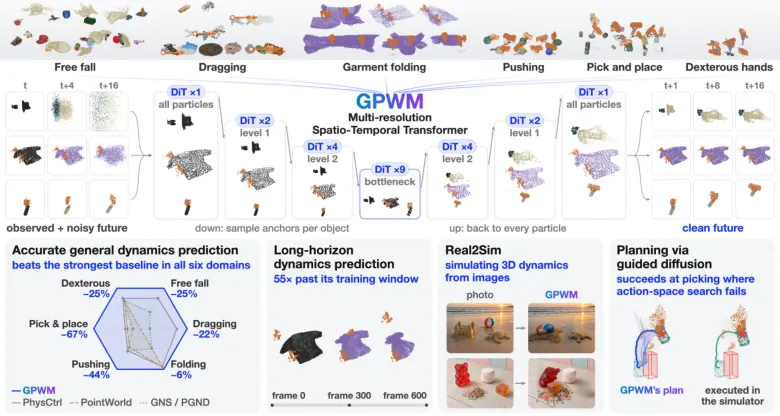
무슨 문제인가
video world model은 겉모습을 생성할 뿐 3D 물체의 움직임과 접촉을 직접 나타내지 않음. 입자 기반 dynamics model은 3D 상태를 직접 다루지만 대부분 결정론적이고, 짧은 구간만 예측하며, 특정 재질과 상호작용에만 맞춰져 있음. 또 world model로 계획할 때 행동 공간을 직접 탐색하면 막대를 물체 뒤로 돌린 뒤 미는 것처럼 접촉 순서가 필요한 동작을 찾기 어려움. 탐색이 모델 오차를 이용하는 분포 밖 행동을 고르는 문제도 있음.
어떻게 푸나
GPWM(Generative Particle World Model)은 관측된 3D 입자 궤적 4 frame을 받아 다음 16 frame의 움직임을 생성함. 변형체·입자형 물질은 입자별 변위로, 강체는 물체 단위 pose 변화로 나타내고, 로봇 막대·그리퍼·손도 같은 입자 표현으로 넣음. 입자가 최대 12,000개라 모든 입자 사이 attention은 비싸므로, 물체마다 anchor 입자를 뽑아 단계적으로 줄인 해상도에서 시간·공간 attention을 주로 계산하고 다시 입자로 되돌림. 학습은 flow matching에 diffusion forcing(미래 frame마다 noise 수준을 따로 주는 방식)을 더해 깨끗한 미래 변위를 예측하게 함. 추론에서는 가까운 frame부터 noise를 걷어 확정하고 sliding window를 한 frame씩 옮기며 새 noise frame을 붙이므로 학습 구간보다 긴 rollout이 가능함. 계획에서는 로봇과 물체의 움직임을 함께 생성하는 모델을 둠. 목표 물체 배치에 대한 reward로 초기 noise를 gradient로 고치거나(LNO: latent noise optimization) CEM(cross-entropy method)으로 고른 뒤 로봇 부분만 open-loop로 실행함. CEM은 후보를 뽑고 점수가 높은 것 주변으로 분포를 좁혀 가는 sampling 최적화임.
결과
- 6개 시뮬레이션 영역(낙하, 끌기, 옷 접기, 밀기, 집어 옮기기, 다관절 손)에서 입자 위치 오차를 잼. 영역마다 가장 강한 기존 learned dynamics baseline보다 오차가 6~67%, 평균 31% 줄어듦. 밀기에서는 23.9mm가 13.3mm로 내림. 영역마다 영역별로 따로 학습한 specialist와 모든 영역을 한 가중치로 학습한 unified 모델 중 나은 쪽 값임.
- Unified GPWM은 끌기와 집어 옮기기에서만 specialist보다 낫고 나머지 4개 영역에서는 specialist보다 오차가 큼.
- 같은 GPWM checkpoint로 계획 공간만 바꿔 비교함. 시뮬레이션 open-loop 실행 후 목표까지 남은 거리를 줄인 비율이 Pushing(막대로 블록을 목표로 밀기)에서 Noise CEM 0.57, Action CEM 0.00임. Picking(물체 5종을 잡아 목표 위치로 들기)에서는 LNO 0.56, Action CEM 0.00임.
- Picking에서 GPWM Action CEM은 모델 안에서 0.78 진척을 예측했지만 실행하면 0.00이었고, LNO는 0.89 예측에 0.56을 달성함. 알갱이 더미를 패들로 미는 Pile Manipulation에서는 noise 공간 0.21~0.23, 기존 결정론적 point cloud world model인 PointWorld의 Action CEM 0.19로 차이가 작음.
한계
완전하고 추적된 3D 입자 상태와 물체 구분을 입력으로 가정하며 raw 영상에서 이를 얻는 문제는 다루지 않음. 이미지에서 시작한 예시는 별도 재구성 pipeline 뒤에 낙하 specialist를 돌린 정성 결과뿐임. 계획은 모두 시뮬레이션 open-loop 실행이며 실로봇 실험은 없고, LNO는 생성 과정 전체를 미분하므로 빠른 online 제어에는 계산 비용이 큼.
누리랩 연구와의 연결
- 행동이 아니라 생성 모델의 noise를 탐색하는 test-time planning이 접촉 순서를 찾는다는 결과는, world model 기반 manipulation planning과 test-time optimization 연구의 비교 대상이 됨.
- 모델 안 예측 진척과 실제 실행 진척의 차이(78% 대 0%)를 표로 보인 분석은, world model 오차를 이용하는 계획을 잡아내는 failure detection 연구에 바로 쓸 수 있는 진단 방식임.
2
78점
La-JEPA: Compact Robot Policies with Latent World Modeling
World Model
relevance 8/10
ICLR 양식 (추정)
Robotics (cs.RO)
video 생성 backbone 없이, 고정된 V-JEPA 2.1 feature 공간에서 처음부터 학습한 작은 world-action policy가 큰 policy와 비슷하거나 더 높은 성공률을 냄. 지시문을 바로잡은 LIBERO-Plus에서 추론에 쓰는 parameter(고정 encoder 포함) 1.78B로 88.0%를 기록해, 7.1B인 이미지 생성 모델 기반 WAM NowWAM의 86.2%보다 높음.
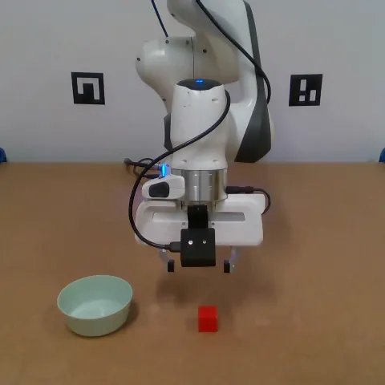
무슨 문제인가
최근 world-action model(WAM)은 사전학습된 video 생성 모델을, VLA는 vision-language 모델을 backbone으로 가져다 씀. 그래서 policy의 구조와 추론 비용이 제어가 아니라 영상·언어 생성용으로 설계된 수십억 parameter transformer에 묶임. 이 생성용 구조가 제어 성능에 실제로 얼마나 필요한지는 따로 검증되지 않았음. 또 video VAE latent는 pixel 복원에 용량을 많이 쓰는데, 제어에는 그 정보가 다 필요하지 않음.
어떻게 푸나
La-JEPA(Latent Action JEPA)는 여러 카메라 영상, proprioception, 언어 지시를 받아 action chunk를 출력함. 각 카메라 영상은 고정된 V-JEPA 2.1 ViT-L encoder로 feature가 되고, 지시문은 고정된 FLAN-T5-large encoder로 embedding됨. 그 위에 처음부터 학습하는 diffusion transformer 두 개를 둠: 현재 관측과 미래 feature token을 다루는 World DiT와 action token을 다루는 Action DiT임. 학습 때는 32 frame 앞까지의 미래 V-JEPA feature와 action을 함께 flow matching으로 예측함. attention mask로 action token이 미래 token을 보지 못하게 막으므로, 미래 예측은 공유된 World DiT 표현을 통해서만 action에 영향을 줌. 추론 때는 미래 token을 빼고 관측 token의 key·value를 한 번 계산해 cache한 뒤, Action DiT만 반복 실행해 noise에서 action chunk를 만듦. 이 구조는 Fast-WAM의 학습 때만 미래를 예측하는 방식을 따르고, 바꾼 것은 feature 공간과 처음부터 학습하는 작은 policy임. 모델 크기는 S, B, L 세 가지이고, 고정 encoder를 포함한 LIBERO 설정의 배포 parameter는 각각 0.74B, 0.98B, 1.78B임.
결과
- 미래 feature 예측을 더한 S policy와 action만 학습한 S policy를 비교함. RoboTwin 2.0(양팔 조작 시뮬레이션 50개 과제, 깨끗한 장면에서만 학습) 성공률이 깨끗한 장면에서 7.0퍼센트포인트, 무작위화 장면에서 3.7퍼센트포인트 오름. LIBERO-Plus(LIBERO 과제를 카메라 시점·조명·센서 noise 등 7개 축으로 흔든 평가)에서는 학습 seed 3개 평균 2.1퍼센트포인트 오름.
- V-JEPA 2.1 feature를 쓴 policy와 Wan2.2 video VAE latent를 쓴 policy를 비교함. RoboTwin 성공률은 깨끗한 장면에서 15.9, 무작위화 장면에서 16.0퍼센트포인트 높음. LIBERO-Plus에서는 6.0퍼센트포인트 높음. 무작위화 장면에서 Wan2.2 policy는 1.0%에 그침.
- 로봇 데이터 사전학습이 없는 policy 사이 비교: RoboTwin 2.0에서 La-JEPA B는 깨끗한 장면 86.2%, 무작위화 장면 35.4%를 냄. Fast-WAM은 77.8%와 1.9%, VLM 기반 Qwen-RobotManip-scratch는 71.6%와 22.6%임. LIBERO-Plus 원래 평가기는 10,030개 변형 중 8,493개의 지시문에 perturbation 값을 덧붙이므로, 저자는 지시문을 고친 평가기로도 잼. 원래 평가기로는 La-JEPA L이 84.1%로 NowWAM의 86.2%보다 낮음(NowWAM은 두 평가기에서 모두 86.2%).
- 실제 Franka 로봇 과제 4개(큐브 놓기, 뚜껑 열고 과일 집기, Push T, 접시·식기 배치)에서 과제당 20회 평균 성공 횟수가 La-JEPA B 17.50회, 로봇 데이터로 사전학습된 π0.5 17.25회, Fast-WAM 16.00회임. policy 1회 호출 시간은 25.16ms로 Fast-WAM의 88.09ms보다 짧음.
한계
무작위화된 RoboTwin 장면에서는 로봇 데이터로 사전학습된 가장 강한 방법들보다 낮음. 실로봇 비교는 로봇 한 대와 과제 4개뿐이고, 긴 식기 배치 과제에서는 π0.5가 앞섬. LIBERO-Plus 우위는 저자가 고친 지시문 기준이고, 원래 평가기에서는 NowWAM보다 낮음. 크기를 키워도 RoboTwin 성공률이 오르지 않으며 원인은 실험으로 가려내지 않았음. 코드는 GitHub에 공개됨.
누리랩 연구와의 연결
- world model을 추론 때 돌리지 않고 학습 신호로만 쓰는 VLA 설계를 작은 규모로 재현할 수 있는 출발점임. V-JEPA feature 공간의 미래 예측 head를 failure detection이나 test-time planning용 신호로 다시 쓰는 실험으로 이어질 수 있음.
- LIBERO-Plus 원래 평가기가 10,030개 변형 중 8,493개의 지시문에 perturbation 값을 덧붙인다는 지적은, 우리 실험에서 LIBERO-Plus 수치를 비교할 때 지시문 처리 방식을 맞춰야 한다는 근거가 됨.
3
76점
OopsieRecover: Learning Transferable VLA Corrections from Semantic Interventions
VLA
relevance 9/10
ICRA·IROS·RA-L 계열 양식 (추정)
Robotics (cs.RO)
사람이 VLA 실행에 끼어들어 고친 몇 번의 교정을 궤적이 아니라 '언제 무엇을 피할지'라는 조건부 cost로 바꿔, 고정된 VLA의 행동 선택을 조정함. 실로봇 과제 3개에서 교정 3~6개만으로 평균 task progress가 61.0%로, 가장 나은 비교 방법의 35.1%보다 높음.
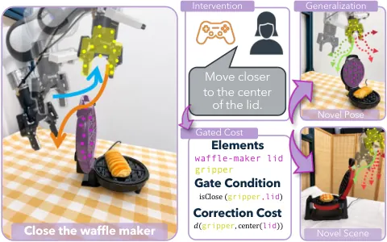
무슨 문제인가
VLA는 배포 중 충돌, 물체 떨어뜨림 같은 실패를 반복함. HG-DAgger 같은 interactive imitation learning은 사람의 교정 구간을 상태-행동 학습 데이터로 추가해 policy를 다시 학습함. 그래서 교정은 그것을 모은 상황과 비슷한 상태에서만 통하고, 물체 위치나 장면이 바뀌면 교정을 다시 모아야 함. 교정 몇 개로 그 교정의 이유를 뽑아 새 상황에 다시 쓰는 방법은 없었음.
어떻게 푸나
OopsieRecover는 사람이 VLA 실행을 보다가 조종을 넘겨받아 고치고, 고친 이유를 자유 문장으로 적게 함. 예를 들면 '머그를 기계 아랫부분에서 떨어뜨려 둘 것' 같은 문장임. VLM은 과제 지시, 교정 문장, 첫 관측을 받아 교정에 관련된 물체·부품·영역을 고름. 각 요소는 SAM 3 분할과 depth로 3D point set이 되고 시간에 따라 추적됨. 이어서 VLM이 point set 중심의 궤적을 보고 gated cost를 코드로 만들어 냄. gated cost는 교정이 필요한 때를 판정하는 gate, 피할 공간 관계를 재는 correction cost, 원래 과제 진행을 유지하는 task cost로 이루어짐. gate가 켜지는 기준값은 사람이 끼어들기 직전 구간의 점수로 정함. 만든 cost는 두 검사를 거침: 끼어들기 전 행동에 사람 교정보다 높은 점수를 주는지, 끼어들기 전에 gate가 켜지는지 확인함. 통과 못 하면 VLM이 cost를 고치며, 저자는 이 과정을 abduction(관측과 맞는 간단한 설명 찾기)이라고 부름. 실행 때는 새 장면에서 같은 요소를 다시 찾음. gate가 켜지면 고정된 VLA가 뽑은 action chunk 후보들을 dynamics model로 굴려 cost가 가장 낮은 것을 실행함.
결과
- RoboCasa(시뮬레이션 가정 조작 과제 모음)의 과제 3개에서 π0.5를 base로 과제당 교정 5~8개, 방법당 50 episode로 평가함. 같은 장면의 다른 물체 위치(L1)와 처음 보는 장면(L2)에서 OopsieRecover만 다른 모든 방법과 통계적으로 구분되는 가장 높은 성공률을 보임. 표로 된 수치는 본문에서 확인 불가함.
- 교정 수에 따른 비교(CoffeeMug 과제, L1 장면 25개)에서 OopsieRecover는 교정 8개로 성공률 84%에 이름. 같은 교정 데이터로 LoRA fine-tuning한 HG-DAgger*는 28%에 그침. 본문은 같은 교정 수, 그림 설명은 3배 교정 수라고 적어 조건 표기가 어긋남.
- DROID 셋업(공개 대규모 로봇 데이터 수집에 쓰인 실로봇 구성)에서 과제 3개(크로플 놓기, 커피 캡슐 넣기, 선반에 물건 놓기)를 난이도별 20회씩 평가함. 과제당 교정은 3~6개를 씀. 전체 task progress(완료한 단계 비율)는 차선 baseline(π0.5와 HG-DAgger* 중 나은 쪽)의 35.1%에서 61.0%로 오름. L1에서는 base π0.5와 통계적으로 구분되지 않음.
- 교정 1개로 만든 '스팀 손잡이와 충돌 피하기' cost를 처음 보는 장면 10개에 적용함. 일부러 손잡이 쪽으로 몰았을 때 10번 모두 gate가 켜지고 충돌을 막음.
한계
gated cost, abduction 검증, 후보 선택 각각의 기여를 따로 떼어 본 ablation이 없음. 시뮬레이션에서는 simulator physics를 dynamics model로 써서 예측 오차가 거의 없는 조건임. 실로봇은 grasp 기반 dynamics model을 씀. 접촉력처럼 point set의 공간 관계로 못 쓰는 교정은 다룰 수 없고, 계산 시간은 보고하지 않음.
누리랩 연구와의 연결
- 사람 개입을 failure detector(gate)와 recovery용 test-time steering cost로 함께 바꾼다는 점에서 failure detection·recovery와 language feedback 기반 학습 연구에 바로 비교 대상이 됨.
- 고정된 VLA 후보를 dynamics model로 굴려 고르는 구조라서, point dynamics 대신 world model을 넣거나 교정 cost를 robot memory로 쌓아 두는 확장을 실험해 볼 수 있음.
4
76점
SLA: Scaling Spatial-Language-Action Model via Continual Pre-training
VLA
relevance 9/10
Robotics (cs.RO)
VLA의 중간 visual embedding을 고정된 3D 인식 모델의 feature에 맞추는 학습을 post-training뿐 아니라 대규모 continual pre-training에도 적용함. 실환경 8개 조건의 평균 성공률이 π0.5의 59.8%에서 83.8%로 오름.
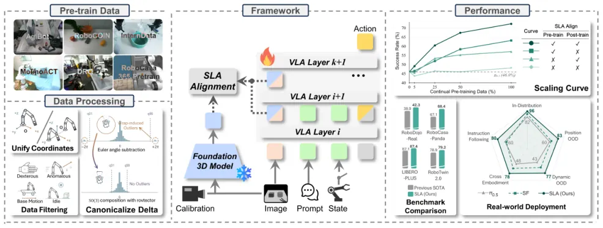
무슨 문제인가
π0.5 같은 VLA는 2D image-text로 사전학습된 VLM에서 visual representation을 물려받으므로 정밀한 3D 공간 정보가 부족함. depth map이나 point cloud를 입력으로 더하는 3D VLA는 센서 잡음, 카메라 구성의 차이, depth가 없는 대규모 robot dataset 때문에 규모를 키우기 어려움. 같은 저자의 Spatial Forcing은 추가 입력 없이 visual embedding을 3D feature에 정렬했지만 downstream post-training에서만 적용했음. 그래서 공간 이해가 과제별로 덧붙는 기능에 머물고, 여러 로봇 데이터에서 옮겨 쓸 수 있는 foundation 능력으로 학습되지 않았음.
어떻게 푸나
SLA(Spatial-Language-Action Model)는 사전학습된 π0.5에서 출발해 action loss와 spatial alignment loss를 함께 최적화함. 고정된 3D 인식 모델 OmniVGGT가 로봇 이미지에서 픽셀 단위 spatial feature를 뽑고, 카메라 파라미터나 depth가 있으면 함께 넣고 없으면 RGB만 씀. 이 feature에 positional embedding을 더해 VLA visual token 해상도로 다시 샘플링한 것이 정렬 목표임. VLA 여러 층의 visual token을 LayerNorm과 2층 MLP로 투영하고, token별·channel별 sigmoid gate로 가중합함(adaptive layer selection). 이렇게 얻은 feature와 목표 사이의 cosine similarity를 높이는 loss를 action loss에 가중치를 곱해 더함. 학습 중에는 샘플마다 확률적으로 robot state token 전체를 빼서(state dropout) policy가 시각 정보에 기대게 함. continual pre-training corpus는 6개 공개 dataset(약 171만 episode, 14,330시간)을 end-effector pose 좌표계와 rotation vector delta action으로 통일해 만듦. 이 corpus에서 36k step 동안 정렬하며 학습하고, downstream post-training에서도 정렬을 유지함. 3D 모델, projector, gate는 학습에만 쓰고 추론 구조는 π0.5와 같음.
결과
- RoboTwin 2.0(양팔 조작 과제 50개 시뮬레이션)의 Clean2Random(깨끗한 demonstration으로 학습하고 domain randomization 환경에서 평가) 성공률로 정렬 단계를 나눠 비교함. pre-training 데이터 전량에서 두 단계 모두 정렬하면 72.3%, pre-training만 63.2%, post-training만 57.1%, 둘 다 없으면 48.2%임. 데이터 5·25·50·100% 모든 비율에서 두 단계 정렬이 가장 높음.
- post-training에서만 정렬하는 Spatial Forcing과 비교하면 RoboTwin 2.0 Clean2Random 성공률이 62.6%에서 72.3%로 오름. LIBERO-Plus(카메라·조명·배경 등 7가지 교란을 건 LIBERO)에서는 85.1% 대 87.4%, RoboCasa-Panda(주방 조작 24개 과제, 과제당 demonstration 50개)에서는 67.6% 대 68.4%로 차이가 작음.
- RoboDojo-Real(로봇 3종 ARX X5·Piper·Piper X의 실제 과제 18개)에서 하나의 policy로 전체 성공률 33.9%를 얻음. π0.5는 12.8%, 가장 강한 비교 대상 InternW0-Δ는 31.7%임. 이 실험에는 과거 frame을 넣는 memory mechanism을 post-training에 추가했음.
- 양팔 Piper와 단일 팔 Franka로 만든 비공개 실환경 조건 8개(위치 변화, 집는 중 사람이 과일을 옮김, Franka demonstration 10개로 cross-embodiment, 지시 따르기 등)에서 조건마다 객체 50개를 평가함. 평균 객체 단위 성공률이 π0.5의 59.8%에서 83.8%로 오름.
한계
LIBERO-Plus와 RoboCasa-Panda에서 Spatial Forcing 대비 차이는 2.3과 0.8퍼센트포인트이고 seed 간 분산은 본문에서 확인 불가함. RoboDojo-Real 결과는 memory mechanism이 함께 들어가 정렬의 기여만 따로 떼어 볼 수 없고, 단계별 정렬 비교는 RoboTwin 2.0 하나에서만 함. 제공된 텍스트에서 gate와 state dropout ablation 수치, 실환경 조건별 수치는 확인 불가하며, continual pre-training에 H100 48장으로 약 110시간이 듦.
누리랩 연구와의 연결
- VLA에 3D 입력을 추가하지 않고 학습 신호만으로 공간 정보를 넣는 방식이라, object-centric 3DGS나 scene graph 표현을 VLA visual token에 distillation하는 연구의 직접 비교 대상임.
- 정렬을 pre-training과 post-training으로 나눠 켜고 끈 2×2 실험 설계는 embodied spatial reasoning 보조 loss가 어느 학습 단계에서 효과가 있는지 검증할 때 그대로 가져다 쓸 수 있음.
5
76점
MOMASPLAT: Dynamic Novel-View Demonstration Augmentation for Mobile Manipulation
Manipulation
relevance 8/10
ICRA·IROS·RA-L 계열 양식 (추정)
Robotics (cs.RO)
이동 로봇이 demonstration 때와 다른 위치에 멈춰도 과제를 하도록, 장면과 움직이는 물체를 따로 3DGS로 복원해 새 base pose에서 본 demonstration을 행동과 함께 만들어 냄. 실제 과제 5개 평균으로 처음 보는 base pose에서의 성공률이 가장 강한 baseline의 17%에서 37%로 오름.
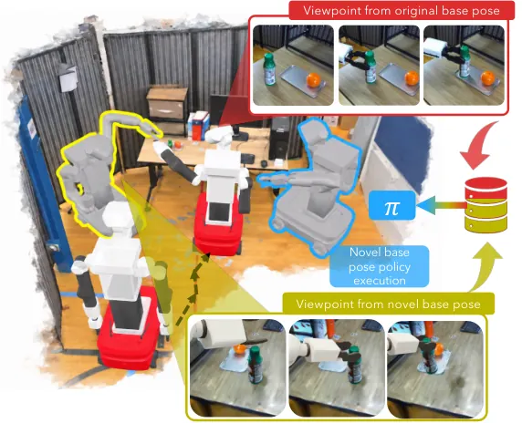
무슨 문제인가
이미지로 학습한 imitation learning policy는 카메라 시점이 조금만 바뀌어도 성공률이 낮아짐. mobile manipulation에서는 navigation 오차와 localization drift 때문에 로봇이 demonstration을 모은 자리에 정확히 서지 못하므로 이 문제가 자주 생김. 여러 위치에서 demonstration을 다시 모으는 것은 비용이 큼. 기존 novel-view synthesis 증강은 장면을 정적으로 가정하므로, 로봇이 물체를 잡아 옮기는 접촉 이후 구간은 새 시점에서 다시 그리지 못함.
어떻게 푸나
MOMASPLAT은 정적 장면, 조작 대상 물체, 로봇 몸체를 따로 만들어 합성함. 장면은 로봇이 목표 위치로 이동하며 찍은 navigation 영상에 COLMAP을 돌려 카메라 pose를 얻고, 물체와 로봇을 가린 채 3DGS로 복원함. 척도는 로봇의 depth 센서 값과 렌더링 depth의 중앙값 비율로 맞춤. 물체는 open-world segmentation으로 잘라 낸 프레임에 feed-forward 3D 모델(FastVGGT)을 적용해 프레임별 pose를 얻고 별도 3DGS로 복원함. 물체가 정지해 있는 navigation 구간을 두 좌표계에 모두 놓고 Sim(3) 변환을 Umeyama 알고리즘으로 구해 물체와 장면 좌표계를 맞춤. 새 base pose를 뽑으면 장면, 원래 궤적대로 움직이는 물체, IK로 자세를 다시 구한 로봇(OmniGibson 렌더링)을 깊이 순서로 합성하고, end-effector proprioception은 새 base frame 좌표로 변환함. 행동의 이동·회전 delta는 base 회전만큼 돌려 같은 world 변위를 나타내게 함.
결과
- TIAGo 로봇의 실제 과제 5개(병 옮기기, 서랍 열기, 노트북 닫기, 리모컨 옮기기, 에어프라이어 열기)에서 과제마다 처음 보는 base pose 12곳, 위치당 3회 평가함. 평균 성공률은 MOMASPLAT 37%, 정적 장면만 복원하는 One-Thousand Trajectories(같은 행동 변환 적용) 17%, 증강 없음 6%, 행동은 변환하지 않고 novel-view 이미지만 만드는 VISTA 8%, 행동 noise 증강 6%임.
- 원래 demonstration 위치에서 멀어질수록 차이가 커짐. 병 옮기기 30 cm 위치에서 33%, 노트북 닫기 40 cm 위치에서 50%를 기록했고, 같은 위치에서 모든 baseline은 0%임.
- 병 옮기기의 10~20 cm 위치 4곳에서 source demonstration을 10, 50, 90개로 줄여 증강하면 성공률이 각각 33%, 42%, 50%임. 90개를 증강 없이 쓰면 8%임.
- 시뮬레이션에서 생성 영상을 정답 렌더링과 비교한 PSNR은 장면 26.40 dB, 물체 18.18 dB, 로봇 17.43 dB임. 물체 pose 오차는 평균 1.46 cm, 4.01도임.
한계
장면은 대체로 정적이고 물체는 강체이며 잘 보인다고 가정함. 물체 궤적을 그대로 재생하므로 접촉력과 dynamics는 반영하지 않고, 물체가 가리던 영역(병 아래 면, 서랍 안쪽)은 복원되지 않음. 실로봇 평가는 과제당 36회이고, policy는 Diffusion Policy 하나만 썼으며 코드는 공개 예정으로만 적혀 있음.
누리랩 연구와의 연결
- object-centric 3DGS를 장면과 분리해 복원하고 행동까지 함께 변환한 사례로, 3DGS 기반 manipulation 데이터 생성 연구의 직접 비교 대상임.
- 시점 변화에 대한 policy 취약성을 데이터로 줄이는 접근이라, active perception으로 좋은 시점을 고르는 방식과 비교하는 실험 설계에 쓸 수 있음.
6
74점
Failure Prediction and Classification in Vision-Language-Action Models Via Calibrated Latent Probing
VLA
relevance 9/10
Robotics (cs.RO)
VLA backbone embedding을 읽는 작은 LSTM probe를 실패 시점 이전 구간만으로 학습해, 실패가 드러나기 전에 경보를 울리고 실패 유형 후보까지 내놓음. 학습에 없던 skill로 시험할 때 조기 탐지 면적이 가장 강한 학습 baseline(SAFE-LSTM)의 30.1%에서 39.0%로 오름.
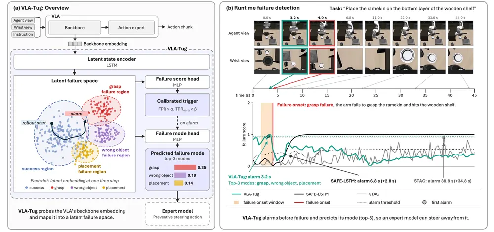
무슨 문제인가
VLA는 distribution shift에서 예고 없이 실패하므로 실행 중에 실패를 미리 알려 주는 monitor가 필요함. 기존 실패 탐지기(SAFE, STAC 등)는 주로 AUROC처럼 시점과 무관한 지표로 평가되어, 경보가 실제 실패 시점보다 먼저 울리는지는 따로 재지 않았음. 보정(calibration)도 false alarm 비율 한쪽만 보장하고, 실패를 놓치는 비율은 보장하지 않음. 또 점수 하나만 내놓으므로 어떤 종류의 실패인지 알 수 없어, 경보 뒤에 어떤 개입을 할지 고를 근거가 없음.
어떻게 푸나
VLA-TUG는 VLA를 고정한 채 backbone의 중간 층 embedding을 읽는 6.6M parameter probe임. 매 policy step마다 agent camera, wrist camera, instruction token을 modality별로 평균해 이어 붙인 6144차원 벡터가 입력임. 단층 LSTM이 이 벡터 열을 latent state로 바꾸고, MLP head 세 개가 이를 읽어 failure score, 10종 failure mode 분포, 현재 행동 설명의 CLIP embedding을 각각 출력함. 학습 label이 이 논문의 중심임: 실패 rollout은 annotated failure time(실패가 드러난 시점)까지의 step만 positive로 두고 그 뒤 step은 loss에서 뺌. 실패가 이미 진행된 장면이 아니라 실패 직전의 신호를 배우게 하려는 설계임. 경보 threshold는 LTT(Learn-then-Test, 여러 risk를 동시에 통계적으로 보장하는 threshold 선택 절차)로 고르며, FPR 상한과 실패 시점 이전 탐지율(TPR_early) 하한을 함께 만족하는 값이 없으면 threshold를 내지 않음. 실험은 π0.5와 GR00T-N1.7 두 VLA의 rollout으로 하며, benchmark는 LIBERO-10(시뮬레이션 조작 과제 10개), LIBERO-X, 실로봇 과제임.
결과
- LIBERO-X는 과제를 skill과 조합 단위로 나눠 일반화를 재는 시뮬레이션 조작 benchmark임. 조기 탐지 면적은 FPR 0~40% 구간에서 TPR_early-FPR 곡선 아래 넓이를 구간 폭으로 나눈 값임. 학습에 없던 skill을 시험하는 NEW-SKILL split에서 조기 탐지 면적이 SAFE-LSTM 30.1%에서 39.0%로 오름. unseen 설정 6개(LIBERO-10의 두 VLA, LIBERO-X split 3개, 실로봇) 중 4개에서 가장 높았고, LIBERO-10 GR00T에서는 SAFE-LSTM이 51.2% 대 47.4%로 앞섬. 실로봇(과제 8개, leave-one-out)에서는 25.8% 대 25.1%로 차이가 거의 없음.
- label 방식 ablation에서, 같은 NEW-SKILL unseen 조건의 조기 탐지 면적은 실패 시점 이전만 positive로 둘 때 39.0%임. 실패 rollout 전체를 positive로 두면 21.6%, 실패 이후까지 positive로 두면 17.0%로 내림. LIBERO-10에서는 차이가 split 간 편차 안쪽인 경우가 많음.
- LIBERO-X 14개 run에서 LTT는 threshold를 낸 run 전부에서 seen 과제의 FPR과 TPR_early 목표를 지킴. unseen 과제에서 FPR 목표를 지킨 run 비율은 LTT 40~86%, 항상 threshold를 내는 기존 conformal 방식(max-conformal) 최대 21%임. LTT는 목표에 따라 14개 중 4~7개 run에서 threshold를 내지 않음.
- 실패 유형 top-3 balanced accuracy는 NEW-SKILL unseen에서 56.3%로, 최빈 class baseline 42.9%보다 높음. probe 추론은 GPU에서 step당 0.12 ms로, 54 ms인 GR00T policy 호출의 0.2% 수준임.
한계
LTT 보장은 calibration episode와 시험 episode가 exchangeable할 때만 성립하므로 unseen 과제에서는 경험적 결과일 뿐임. 실로봇에서는 SAFE-LSTM과 차이가 1퍼센트포인트 미만이고, 실패 시점을 1초 늦춰 채점하면 순위가 뒤집힘. 경보 뒤 steering은 단순 heuristic 시연 몇 건뿐이고 성공률 향상은 체계적으로 평가하지 않았으며, failure time과 mode label은 Gemini가 영상을 보고 붙인 것이라 label 오차의 영향은 따로 확인되지 않음.
누리랩 연구와의 연결
- VLA failure detection 연구에서 실패 시점 기준 평가(TPR_early, 조기 탐지 면적)와 pre-onset label을 그대로 가져다 쓸 수 있음. 프로젝트 페이지에 공개된 3,180 episode embedding dataset은 failure prediction 비교 실험의 출발점이 됨.
- failure mode 예측을 recovery 정책 선택과 잇는 구조라서, failure recovery나 test-time steering 연구에서 개입 시점과 개입 종류를 정하는 trigger로 쓸 수 있음. 다만 steering 효과 자체는 검증되지 않았으므로 그 부분이 후속 연구 대상임.
7
74점
Concertina: Embodying Manipulation and Cognition in One Diffusion Vision-Language Model
VLA
relevance 9/10
ICLR 양식 (추정)
Computer Vision and Pattern Recognition (cs.CV)
별도 action expert나 action tokenizer 없이, diffusion VLM 하나가 연속 action block을 masked reconstruction으로 직접 생성하게 만든 VLA임. action 전용 parameter는 4.46B 모델의 0.21%이고, LIBERO 평균 성공률은 98.15%로 π0.5의 97.5%와 비슷함.
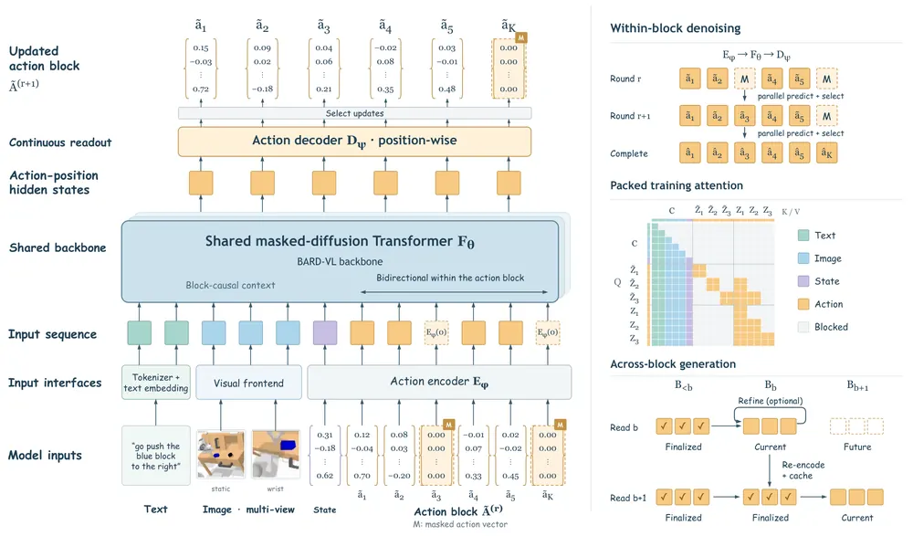
무슨 문제인가
기존 VLA는 VLM에 action을 붙이는 방식에 따라 두 갈래로 나뉨. OpenVLA나 FAST처럼 action을 discrete token으로 바꾸면, 인접 bin 오차와 먼 bin 오차가 같은 cross-entropy를 받아 학습 오차가 실제 이동 오차와 맞지 않음. π0나 X-VLA처럼 별도 flow-matching action expert를 두면 연속 좌표는 지키지만, 궤적 생성이 VLM 밖에서 일어남. 이때 action gradient가 VLM 표현을 해치는 문제가 생겨, Knowledge Insulation처럼 gradient를 아예 막는 방법까지 쓰임. 저자는 VLM의 구조와 사전학습 방식을 그대로 두고 연속 action을 직접 내게 하는 방법이 없었다고 봄.
어떻게 푸나
Concertina는 blockwise diffusion VLM인 BARD-VL을 backbone으로 씀. 한 control timestep의 action vector 전체(이동, 6D 회전, gripper)를 작은 MLP encoder가 연속 latent token 하나로 바꿈. 그래서 길이 H인 궤적은 H개 token이 되고, 시간 방향 결합은 모두 공유 Transformer 안에서 계산됨. 궤적은 크기 K인 block으로 나누며, block 사이는 causal이고 block 안은 bidirectional임. 학습할 때는 multimodal prefix, 일부를 가린 action copy, 가리지 않은 action copy를 한 sequence에 넣어 모든 block을 한 번의 forward로 지도함. loss는 decoder가 복원한 물리 좌표에 직접 걸며, 이동·6D 회전·gripper 좌표에 500:10:1 가중치를 주고, gripper 개폐 좌표에는 binary cross-entropy를 씀. 추론할 때는 block을 차례로 채우고, 오차 예측 head(risk head)가 확신이 낮은 slot을 다시 가려 고치는 단계를 선택적으로 둠.
결과
- LIBERO(시뮬레이션 조작 suite 4개, 총 2,000 episode)에서 평균 성공률이 98.15%임. π0.5는 97.5%, X-VLA는 98.1%, 같은 diffusion backbone 계열인 Dream-VLA는 97.2%로 표에 적힘.
- LIBERO-Plus(LIBERO 과제에 여러 교란을 준 10,030개 과제)에서 전체 성공률이 85.9%로 suite 4개 모두 최고임. OpenVLA-OFT는 69.6%임. EFFVLA의 79.8%는 suite 평균으로 집계된 값이라 분모가 다름.
- CALVIN ABC→D(학습에 없던 환경 D에서 5개 지시 연속 수행)에서 평균 완료 길이가 4.142임. UniVLA 4.41, X-VLA 4.43보다 낮고, 같은 공유 backbone 방식인 LLaDA-VLA의 4.01보다는 높음.
- 상대 action을 학습하는 더 큰 8.35B 모델에 절대 좌표 보조 decoder를 loss 가중치 0.5로 붙이는 통제 실험을 함. 두 loss의 gradient 방향이 거의 반대(hidden state gradient cosine -0.891)가 되고, CALVIN 평균 완료 길이가 2.970에서 0.237로 내림.
한계
모든 평가가 시뮬레이션 benchmark이고 실로봇 실험은 본문에서 확인되지 않음. LIBERO 향상 폭은 π0.5, X-VLA 대비 1퍼센트포인트 이내라서 통계적 차이는 보이지 않았음. 0.21%라는 parameter 비율과 저자가 만든 구조 점검 지표(Action Interface Audit)는 구조를 설명하는 값이고, 성능이 오르는 원인임을 보인 실험은 아님.
누리랩 연구와의 연결
- 별도 action expert 없이 VLM backbone이 연속 action을 직접 만드는 설계라서, VLA 연구에서 backbone 표현과 action 학습이 서로 어떻게 영향을 주는지 분석할 때 비교 기준으로 쓸 수 있음.
- risk head가 action slot별 복원 오차를 예측해 확신 낮은 slot만 다시 생성하는 구조는, test-time refinement와 action 단위 failure detection 신호로 확장해 볼 수 있음.
8
74점
TactileLab: Sim-to-Real Dexterous Robot Manipulation with Efficient Shear-Sensitive Tactile Simulation
Manipulation
relevance 8/10
IEEE 학술지 계열 양식 (추정)
Robotics (cs.RO)
IsaacLab 위의 rigid-body 시뮬레이션에서 접촉점의 상대 운동을 촉각 이미지 평면에 투영해 shear 정보를 담은 dense tactile flow를 만들고, 이를 contact depth와 함께 써서 촉각 RL policy를 학습해 실로봇에 옮김. 외력이 걸린 in-hand 회전 시뮬레이션에서 adaptation module이 과거 1 step만 볼 때 최종 reward가 proprioception만 쓰면 13.6, depth와 flow를 더하면 42.1임.
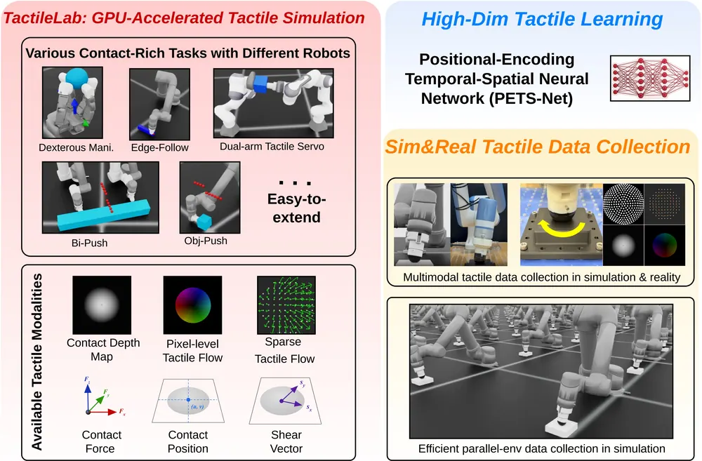
무슨 문제인가
촉각 시뮬레이터는 대부분 두 갈래임. soft-body 시뮬레이터는 elastomer 변형을 정밀하게 다루지만 대규모 RL에 쓰기에는 느림. rigid-body 시뮬레이터는 빠르지만 contact depth 같은 normal 방향 신호만 주므로, 접촉면에서 물체가 어떻게 미끄러지고 비틀리는지(shear, tangential motion)를 담지 못함. depth가 비슷해도 접촉 상태와 이후 결과가 다를 수 있어서, 접촉을 유지하며 따라가기나 외력 아래 in-hand 조작처럼 shear가 중요한 과제는 부분 관측 문제가 됨.
어떻게 푸나
simulated tactile flow는 촉각 이미지 픽셀마다 2차원 변위 벡터를 두는 dense field임. 먼저 contact depth가 임계값보다 큰 픽셀로 접촉 mask를 만들고, 각 접촉 픽셀에 대응하는 물체 표면 점을 센서 좌표계에서 구함. 이 점을 한 simulation step 동안의 센서와 물체 사이 rigid-body 상대 운동으로 옮긴 뒤 촉각 이미지 평면에 다시 투영하고, 투영 위치 차이를 flow로 씀. 접촉 밖 픽셀은 0이며 elastomer 변형은 계산하지 않음. policy는 teacher-student 2단계로 학습함. teacher는 물체 질량·마찰·외력 같은 privileged state를 latent로 받아 RL로 학습함. student의 adaptation module은 실로봇에서 얻는 기록만으로 그 latent를 추정함. adaptation module로는 PETS-Net(Positional-Encoding Temporal-Spatial Network)을 새로 제안함. PETS-Net은 관절각·행동 기록에 주파수 positional encoding을 걸고, depth·flow 이미지를 CNN으로 인코딩한 뒤 시간축 encoder로 합침. 실배포 때는 센서마다 학습한 TacFlowNet(pix2pix 방식 생성기)이 연속한 실제 촉각 이미지 두 장을 시뮬레이션 tactile flow로 바꿔 policy에 넣음.
결과
- 외력·토크 교란을 건 시뮬레이션 in-hand 회전 과제(16자유도 손)에서 입력 modality별 최종 mean reward를 비교함. adaptation history 1 기준 proprioception만 쓰면 13.6, low-dimensional contact를 더하면 35.4, depth와 flow를 더하면 42.1임. proprioception, low-dimensional contact, depth, flow를 모두 쓰면 43.9임. 그림 5(c)의 수치 표기를 읽은 값이며 seed 3개 평균임.
- 같은 그림에서 history를 15로 늘리면 proprioception만 쓴 policy는 68.9, depth와 flow를 더한 policy는 98.1임. history 10에서는 각각 56.7과 88.7임. history가 짧을수록 촉각 입력 유무에 따른 reward 차이가 큼.
- 실제 촉각 이미지를 시뮬레이션 flow로 바꾸는 변환을 GelSight Mini(marker 유무), DIGIT, 9DTact, 평면·반구형 TacTip에서 검증함. marker가 있는 센서와 9DTact에서는 flow가 복원되지만 markerless GelSight Mini는 성능이 낮았다고 보고함.
- 실로봇에서는 dual-arm object-following과 LEAP Hand in-hand 회전에 policy를 배포함. 이 부분과 depth 대비 flow ablation, PETS-Net 비교의 정량 수치는 본문에서 확인 불가임.
한계
flow는 접촉면이 붙어 있다는(no-slip) 가정 아래 rigid-body 운동학으로 계산한 근사이며, slip이나 경로에 따라 달라지는 elastomer 물리는 재현하지 않음. 효율을 내세우지만 확인한 텍스트에서는 soft-body 시뮬레이터나 TacSL(normal·shear force field를 계산하는 촉각 시뮬레이터) 같은 기존 시뮬레이터와의 처리 속도 비교를 찾지 못함. 코드는 공개 예정이라고만 적혀 있고, 다양한 물체 형상으로 넓히려면 더 큰 real-to-sim 데이터와 형상을 고려한 변환 모델이 필요하다고 저자가 밝힘.
누리랩 연구와의 연결
- tactile perception과 dexterous manipulation 주제에서 shear 정보를 값싸게 시뮬레이션해 RL에 넣는 기준선으로 쓸 수 있음. depth만 쓰는 촉각 sim-to-real 설정에 flow 채널을 더하는 비교 실험을 바로 짤 수 있음.
- flow가 접촉 이동을 픽셀 단위로 주므로, 미끄러짐 직전 상태를 잡는 failure detection 입력으로 쓸 여지가 있음. 다만 논문은 slip 자체를 모델링하지 않으므로 이 용도는 따로 검증해야 함.
9
74점
MAC-v2: Long-horizon model-based value expansion from pixels
RL
relevance 7/10
ICLR 2027 투고
Machine Learning (cs.LG)
이미지만 있는 offline 데이터에서 latent world model로 100 environment step 길이의 상상 궤적을 만들어 value를 학습함. visual OGBench puzzle-3x3 과제 5개의 평균 성공률이 기존 최고 22%에서 95%로 오름.
무슨 문제인가
offline RL은 고정된 데이터로만 배우므로 policy를 환경에서 직접 시험할 수 없음. 그래서 off-policy value 추정에 기대는데, 학습한 policy가 데이터 분포에서 멀어지면 이 추정이 틀어짐. world model로 on-policy 궤적을 상상해 value를 구하는 model-based value expansion이 대안이지만, 이미지 입력에서는 representation과 dynamics를 함께 배워야 하고 두 쪽의 오차가 궤적을 따라 쌓임. 그래서 LOMPO, OfflineDV2 같은 기존 visual offline model-based 방법은 상상 길이를 5 step으로 짧게 둠.
어떻게 푸나
MAC-v2는 상태 입력용 선행 방법 MAC(action chunk 단위 dynamics와 rejection sampling policy로 긴 value expansion을 하는 방법)을 이미지 입력으로 넓힌 것임. deterministic encoder가 이미지를 512차원 latent로 바꾸고, 이미지 복원 loss는 쓰지 않음. encoder는 세 loss의 gradient로 학습됨: 10 step 뒤 latent 예측, 그 10 step 동안의 할인된 reward 합 예측, flow matching으로 배우는 action chunk behavior cloning. 행동은 BC policy에서 action chunk 후보를 여러 개 뽑고 Q-function 값이 가장 높은 것을 고르는 rejection sampling으로 정함. 데이터의 상태에서 출발해 이 policy와 dynamics, reward model로 latent 궤적을 10번 이어 만들고, 그 결과 100 environment step 길이의 target으로 value를 학습함. chunk 크기 n과 rollout 길이 H는 모든 benchmark에서 10으로 고정했고 과제별 조정은 하지 않음.
결과
- visual OGBench(이미지 입력 장기 조작 과제 25개 모음)의 puzzle-3x3 과제군 5개 평균 성공률이 95%임. 가장 높은 기존 방법 FQL(Flow Q-learning)은 22%이고, LOMPO와 OfflineDV2는 3%와 2%임. cube-double 과제군에서도 53%로 기존 최고 IQL(Implicit Q-learning)의 13%보다 높음. cube-single 과제군에서는 74%로 QC(action chunk 단위 value를 배우고 flow BC 후보를 rejection sampling으로 고르는 방법)의 78%와 비슷함.
- puzzle-4x4-task5에서 상상 길이를 10, 50, 100 step으로 늘리면 성공률이 오름. 같은 과제에서 QC의 chunk 크기나 OfflineDV2의 rollout 길이를 늘려 value 추정 길이를 맞춰도 성공률은 비슷하게 오르지 않음. 이 비교는 그림으로만 제시되고 수치 표는 없음.
- cube-double-task3에서 encoder로 가는 BC gradient나 world model gradient를 끊으면 성공률이 크게 내림. 복원 loss, SimCLR, LeWorldModel로 encoder 학습을 바꿔도 성능이 내림. 두 실험 모두 이 과제 하나에서만 함.
- Robomimic(사람 시연 기반 조작 과제) square 과제에서 성공률 72%로 BC 68%, QC 55%보다 높음. LIBERO-10(시뮬레이션 장기 조작 과제 10개)에서는 80%로 BC 80%와 같음. 저자는 LIBERO-10 시연이 거의 unimodal 분포라 rejection sampling으로 개선할 여지가 적다고 설명함.
한계
모든 실험이 시뮬레이션의 단일 과제 환경이고 실로봇 실험은 없음. 시각 변화가 적은 64~128 픽셀 입력이며, 저자도 다양한 실제 환경으로의 확장을 남은 과제로 둠. chunk를 길게 할수록 closed-loop 반응성이 낮아지는 trade-off가 있고, 이 점은 실험으로 정량화하지 않음. representation 학습 objective 자체는 새로 제안한 것이 아니라 기존 reconstruction-free latent 예측을 가져왔다고 저자가 밝힘.
누리랩 연구와의 연결
- world model을 생성 품질이 아니라 긴 value 추정용으로 쓰는 설계임. action chunk 단위 latent dynamics로 재귀 예측 횟수를 줄이는 방식은 world model 기반 test-time planning이나 VLA의 offline RL fine-tuning에 그대로 옮겨 볼 수 있음.
- BC policy 후보를 Q로 골라 쓰는 구조가 LIBERO-10에서 BC보다 나아지지 않은 이유를, 저자는 시연의 행동 다양성 부족으로 설명함. 실로봇 시연 데이터로 VLA를 개선할 때 데이터의 행동 다양성을 먼저 따져야 한다는 근거가 됨.
10
72점
Learning the Task or Learning the Verifier? Rethinking Criteria Exposure in Embodied Self-Improvement
Embodied AI
relevance 8/10
CoRL 양식 (추정)
Artificial Intelligence (cs.AI)
로봇 코드를 쓰는 self-improving agent가 benchmark의 성공 판정 코드를 읽으면, 과제를 배우기보다 판정 코드에 맞춰지는지를 통제 실험으로 잼. RoboDojo 판정이 지시문과 어긋나는 16개 과제에서 판정 코드를 읽은 쪽이 51.6% 대 27.8%로 앞섰지만, 지시문대로만 판정하면 45.0% 대 47.2%로 앞섬이 사라짐.
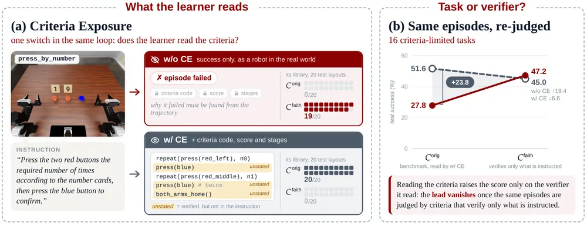
무슨 문제인가
언어 모델로 로봇 제어 코드를 쓰는 agent가 경험을 쌓아 스스로 나아지는 연구가 늘고 있고, 이들은 VLA용으로 만든 시뮬레이션 benchmark에서 비교됨. 이런 benchmark의 성공 판정(success criteria)은 demonstration을 따라 배운 policy를 위해 쓰여서, 지시문에 없는 순서·횟수·끝 상태·양팔 복귀까지 검사하는 경우가 많음. 예를 들어 RoboDojo의 press_by_number는 파란 버튼을 두 빨간 버튼 묶음 사이에 정확히 두 번 누르라고 요구하지만 지시문에는 이 내용이 없음. 기존 self-improving 방법들은 규칙 설명, 점수표, 판정 소스 코드 등을 learner에게 보여 주는데, 이렇게 얻은 점수 상승 중 얼마가 판정을 읽은 덕인지는 측정된 적이 없었음.
어떻게 푸나
같은 self-improvement loop를 두 조건으로 돌려 비교함. 고정된 actor(GPT-6 Astra)가 PyRUA-Lean의 RGB 인식·동작 primitive를 호출하는 Python 코드를 써서 과제를 수행함. learner(Claude Code, Opus 5.5)는 매 round 개발용 layout 5개의 episode 기록을 보고 과제별 library(호출 가능한 skill 함수와 메모리 항목)를 한 번 고침. 성공 수가 최고 batch보다 2개 이상 줄면 이전 library로 되돌리며, 이를 5 round 반복함. CE(Criteria Exposure, 판정 노출) 조건에서는 learner가 판정 코드와 episode별 점수·통과 단계까지 읽고, CE 없는 조건에서는 성공 여부와 궤적만 봄. 저자들은 지시문과 판정이 어긋나는 RoboDojo 과제의 판정 코드를 지시문이 요구하는 것만 검사하도록 다시 씀(instruction-faithful criteria, C_faith). 같은 test episode를 원래 판정(C_orig)과 C_faith 둘 다로 채점해, 두 성공률의 차이가 행동이 아니라 판정 내용에서만 오게 함.
결과
- RoboDojo(양팔 ARX-X5 시뮬레이션 조작 benchmark) 25개 과제, 과제당 test layout 20개 기준으로 원래 판정 하의 성공률을 비교함. 판정과 지시문이 일치하는 9개 과제에서는 CE 없음 83.3%, CE 있음 80.6%로 비슷함. 어긋나는 16개 과제에서만 CE가 51.6% 대 27.8%로 앞섬.
- 같은 16개 과제의 320 episode를 C_faith로 다시 채점하면 CE 있음 45.0%, CE 없음 47.2%가 됨. 두 조건의 격차는 25.9퍼센트포인트 줄었고, 격차 감소폭의 과제 단위 bootstrap 95% 신뢰구간은 4.7에서 54.4퍼센트포인트임.
- learner에게 원래 판정 대신 C_faith 판정 코드를 읽게 한 실험(10개 과제)에서, 그렇게 배운 library는 C_faith 판정에서 65.0%, C_orig 판정에서 13.5%를 기록함. press_by_number에서 CE library는 C_orig로 20/20, C_faith로 0/20이고, CE 없는 library는 0/20과 19/20임.
- 새 RoboDojo 과제 10개에 옮기면 성공 수가 빈 library 65/200, CE 없음 80/200, CE 있음 71/200임. LIBERO-PRO(단일 팔 탁상 조작 benchmark)와 RoboCasa365(가정 주방 장면 benchmark)로 옮기면 효과가 작음. 두 조건 모두 빈 library보다 LIBERO-PRO 60 episode 중 1~3개, RoboCasa365 100 episode 중 2개 더 성공하는 데 그침.
한계
C_faith는 저자들이 직접 쓴 판정이고 독립 검토를 거치지 않았으며, 판정을 다시 쓴 benchmark는 RoboDojo 하나뿐임. 성공 여부만 주는 조건도 시뮬레이터의 깨끗한 판정을 쓰므로, 사람이나 VLM이 판정하는 실로봇 상황과는 다르고 실로봇 실험은 없음. 과제당 test layout이 20개라 개별 과제 결론은 정성적이고, 판정 노출의 중간 단계(점수표, 일부 threshold)는 따로 실험하지 않음.
누리랩 연구와의 연결
- VLM 기반 성공 판정이나 failure detection을 learner의 피드백으로 쓰는 연구에서, 판정기가 지시문보다 많이 요구하면 학습이 판정기에 맞춰진다는 통제 근거가 됨. 우리 쪽 self-improvement 실험도 C_orig와 지시문 기준 판정을 함께 보고하는 설계를 쓸 수 있음.
- 성공 여부만 본 learner의 메모리는 물리적 원인을, 판정을 읽은 learner의 메모리는 판정 조건을 적는다는 관찰은 robot memory 항목이 무엇을 기록해야 옮겨 쓸 수 있는지와 이어짐.
11
70점
EgoGeneralist: Unifying Egocentric Action-Video Tasks through Video-Native Modeling
World Model
relevance 7/10
Computer Vision and Pattern Recognition (cs.CV)
1인칭 조작 영상과 metric 3D 행동(상체·손 관절, 카메라 pose)을 모두 영상으로 렌더링해, 사전학습 video 생성 모델 하나로 행동 조건 영상 생성, pose 추정, 행동·영상 동시 생성을 함께 처리함. EgoDex로만 적응한 모델이 학습 밖 HOT3D 장면의 목표 도달 과제에서 2cm 이내 도달률 58.59%를 기록함(VITRA 31.31%).
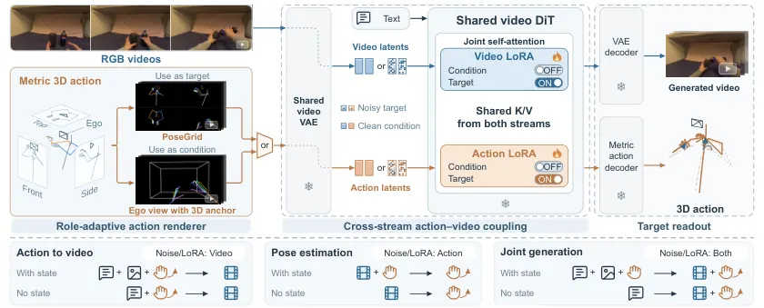
무슨 문제인가
1인칭 조작 장면에서 카메라에 보이는 것은 손, 상체, 카메라의 움직임이 함께 정함. 사전학습 video 생성 모델은 외형과 움직임에 대한 prior가 강하지만 사람의 행동을 metric 3D 공간에서 표현하지 못함. 행동으로 영상을 만드는 일, 영상에서 행동을 복원하는 일, 둘을 함께 만드는 일은 보통 따로 연구됨. 여러 방향을 묶은 기존 통합 모델도 행동을 별도 encoder나 denoiser로 다루므로 video prior와 맞추려면 대규모 joint training이 필요함.
어떻게 푸나
입력은 1인칭 RGB 영상, 처음 카메라 좌표계 기준의 metric 3D 행동 열, text prompt이고 출력은 그중 비어 있는 쪽임. 행동은 역할에 따라 두 가지 영상으로 렌더링함. 조건으로 쓸 때는 색으로 부위를 구분한 skeleton을 1인칭 화면에 투영함. 여기에 처음 카메라 좌표계에 고정한 3D anchor cage(깊이 0.25m와 0.70m의 두 사각 평면)를 함께 그려, cage 투영의 변화로 카메라 움직임을 드러냄. 생성 대상으로 쓸 때는 Posegrid(정면·측면·위쪽 정사영 skeleton과 1인칭 시점을 2×2로 붙이고 카메라 frustum을 그린 영상)로 렌더링하고, 별도로 학습한 decoder가 latent에서 관절 위치와 카메라 pose를 읽어 냄. 영상과 행동 렌더링은 고정된 Wan2.2 VAE로 각각 latent가 되어 같은 DiT에 들어가고, self-attention에서 두 stream의 key와 value를 함께 봄. 영상용과 행동용 attention LoRA는 해당 stream이 생성 대상일 때만 켜짐. 어느 stream을 조건으로 두고 어느 stream을 denoising하는지만 바꿔 세 방향을 각각 처음 상태가 주어지는 경우와 주어지지 않는 경우로 나눈 6개 과제를 하나의 flow-matching 목적함수로 학습함.
결과
- 학습 밖 Xperience-10M(실제 환경 1인칭 영상과 3D 주석을 담은 대규모 dataset) 50개 clip에서 첫 이미지와 행동이 주어진 영상 생성의 PSNR이 19.67로, 가장 강한 외부 baseline Cosmos3 Nano의 18.79보다 높음. MediaPipe로 생성 영상에서 검출한 손 관절의 정확도 PCK@20은 62.24%로, 3D 손 관절 조건 1인칭 영상 생성 방법 Zhang et al.의 72.33%보다 낮음.
- 학습량을 2,048 episode, 1,200 update로 줄인 ablation에서 Xperience-10M PCK@20이 58.77%로, 행동과 영상 latent를 channel 방향으로 이어 붙이는 방식의 27.94%보다 높음.
- EgoDex 111개 clip에서 영상만 보고 손 관절을 복원할 때 절대 위치 오차(Abs-MPJPE)가 27.73mm로, 1인칭 영상의 world 좌표 손 움직임 복원 방법 HaWoR의 111.98mm보다 낮음. Xperience-10M에서는 91.01mm로 가장 낮지만 Procrustes 정렬 오차는 카메라와 손 움직임을 함께 추정하는 MINT보다 높음.
- HOT3D(학습에 쓰지 않은 손·물체 3D 주석 dataset) 99개 목표 도달 과제에서 예측 궤적의 손끝과 목표 사이 최소 거리 중앙값이 1.07cm로, 사람 활동 영상으로 사전학습한 VLA인 VITRA의 4.59cm보다 짧음. 2cm 이내 도달률은 58.59%로 VITRA의 31.31%보다 높음.
한계
HOT3D 결과는 생성한 손 궤적과 목표 물체의 거리를 잰 open-loop 평가이고, 실로봇이나 실제 실행은 없음. 학습 data는 EgoDex의 실험실 tabletop 조작뿐이고, 학습 밖 영상 생성 평가는 Xperience-10M 50개 clip이고, 학습 밖 행동 평가는 HOT3D 99개 과제뿐이며, 저자도 EgoDex 3D 주석과 영상 사이의 투영 불일치를 한계로 적음. 비슷하게 행동과 영상을 함께 생성하는 HandWorld 계열 방법과의 직접 비교는 없고, text만으로 만든 행동·영상은 정성 예시로만 보임.
누리랩 연구와의 연결
- 행동을 영상으로 렌더링해 video 생성 모델에 넣고 빼는 방식은, VLA나 world model에서 행동을 별도 token 대신 video latent로 다루는 설계의 비교 대상이 됨.
- 사람 1인칭 영상에서 metric 상체·손·카메라 궤적을 복원하고 text만으로 쌍 data를 만드는 기능은 사람 영상 기반 manipulation 학습 data 확보에 쓸 수 있음. 다만 로봇 embodiment로 옮기는 실험은 없음.
12
70점
XM4D: 4D Reconstruction through Certifiable Geometric Optimization
3D Vision
relevance 6/10
CoRL 양식 (추정)
Computer Vision and Pattern Recognition (cs.CV)
단안 영상의 4D 복원을 카메라 추정과 비강체 변형 추정 두 단계로 나누고, 두 단계 모두 전역 최적성을 certificate로 확인할 수 있는 convex relaxation으로 풂. ground-truth 카메라 없이 DyCheck novel-view mPSNR을 MoSca의 18.91에서 19.51로 올림.
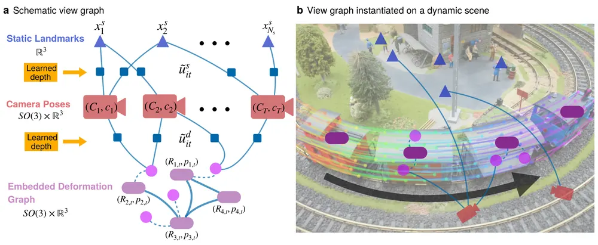
무슨 문제인가
단안 영상에서는 카메라 움직임과 물체 움직임이 한 관측에 섞여 있어 둘을 함께 추정해야 함. 기존 4D 복원(MoSca, Shape of Motion 등)은 카메라, 형상, 변형, appearance를 한 nonconvex 최적화로 묶어 local solver로 풂. 이 방식은 초기값에 민감하고 잘못된 local minimum에 빠져도 알 수 없음. 게다가 monocular depth는 frame마다 scale이 달라지고, point track은 길이가 짧고 자주 끊김.
어떻게 푸나
XM4D는 먼저 monocular depth(Depth Anything 3)로 2D point track을 3D로 올리고, SAM 3 mask로 정적 track과 동적 track을 나눔. 정적 단계는 정적 track만으로 카메라 pose, frame별 depth scale, 정적 landmark를 함께 푸는 scaled bundle adjustment임. translation과 landmark를 해석적으로 소거하면 scaled rotation만 남는 QCQP(이차 제약 이차 계획)가 되고, 이를 SDP(semidefinite program)로 완화함. 저자들의 이전 학회 논문 XM(depth를 쓰는 정적 scaled bundle adjustment solver)은 첫 frame scale을 1로 고정했음. 여기서는 모든 scale 제곱합을 frame 수로 고정하는 sphere 제약으로 바꿔 특정 frame에 끌려가지 않게 함. 동적 단계는 카메라를 고정한 뒤 EDG(embedded deformation graph: 각 node가 SE(3) 변환을 갖는 희소 그래프)로 변형을 표현함. node 변환은 frame 사이 상대값이 아니라 고정된 rest frame 기준으로 둠. 이렇게 하면 tracking, ARAP(as-rigid-as-possible: 이웃 node가 강체처럼 함께 움직이게 하는 항) 강체성, 시간 평활 loss가 모두 이차식이 되어 같은 rotation-only QCQP와 SDP로 바뀜. 두 SDP는 GPU Burer–Monteiro solver와 Riemannian staircase로 풀고, dual 행렬의 PSD 여부로 전역 최적성을 확인한 뒤 결과를 dynamic Gaussian splatting 초기값으로 씀. 긴 영상은 서로 겹치는 짧은 segment로 나눠 각각 풀고, segment 사이 회전은 rotation synchronization으로 맞춤.
결과
- DyCheck(손에 든 iPhone으로 찍은 동적 장면 7개)의 novel-view 렌더링에서 ground-truth 카메라 없이 mPSNR 19.51, mSSIM 0.725, mLPIPS 0.163을 얻음. 같은 조건의 MoSca는 18.91, 0.677, 0.284임. Syn4D(저자가 Replica·RoboCasa로 만든 합성 동적 영상 8개)에서는 mPSNR이 MoSca 19.49에서 21.73으로 오름.
- 카메라 ATE-T(정규화된 절대 궤적 오차)는 Replica(합성 실내 장면 렌더링 영상 8개)에서 0.002로 COLMAP 0.009, MegaSAM 0.067보다 낮음. 다만 DyCheck에서는 MegaSAM 0.005 대 XM4D 0.008, NVIDIA dynamic scene 데이터셋에서는 0.024 대 0.038로 MegaSAM이 더 정확함.
- Replica room0의 연속 frame을 늘리며 카메라 추정 시간을 잼. XM4D는 2,000 frame을 3,322.4초에 끝냄. 같은 조건에서 VGGT(feed-forward 3D 기하 예측 모델)는 200 frame에서 GPU 메모리가 부족했고, COLMAP은 1,200 frame에서 1시간을 넘김.
- DAVIS 영상 1개와 합성 그래프 1개에서 같은 입력으로 local solver와 비교한 그림을 보임. local solver는 일부 node 회전을 틀리게 수렴하고 certified solver는 일관된 회전을 얻음. 평균 오차가 아니라 두 사례의 정성 비교임.
한계
certificate는 주어진 depth, track, EDG 구조, 점을 node에 묶는 skinning weight 아래의 최적화 문제에 대한 것이며, 이 입력들이 틀린 경우는 보장하지 않음. segment 결과를 합치는 rotation synchronization과 빈 node를 채우는 completion은 local solver로 풂. 렌더링 수치는 photometric refinement까지 포함한 전체 파이프라인 결과라 certification 자체의 기여는 따로 분리되지 않음.
누리랩 연구와의 연결
- 물체 부분마다 SE(3) 궤적을 명시적으로 주는 EDG 표현은 object-centric 4D 표현과 3DGS 초기화에 바로 쓸 수 있음. 조작 영상이나 RoboCasa 장면에서 물체 움직임을 추출하는 도구로 검토할 만함.
- dual 행렬로 전역 최적 여부를 판정하는 방식은 geometry 추정 단계의 실패를 스스로 알리는 failure detection 신호로 쓸 수 있음.
13
67점
WAM-Sim0.1: World Anchored Memory Meets Online RL for Consistent and Realistic Driving Simulation
World Model
relevance 6/10
ICLR 양식 (추정)
Computer Vision and Pattern Recognition (cs.CV)
자율주행 video world model에 도로 구조, 배경, 교통 참여자 외형을 각각 다른 규칙으로 보존하는 memory와 online RL post-training을 붙여, 긴 rollout에서 배경과 차량 외형이 바뀌는 문제를 줄임. 자체 수집 주행 데이터에서 Scene Similarity(배경 영역에서 생성 영상과 실제 영상의 DINO feature 유사도)가 memory 없는 같은 backbone의 0.852에서 0.910으로 오름.
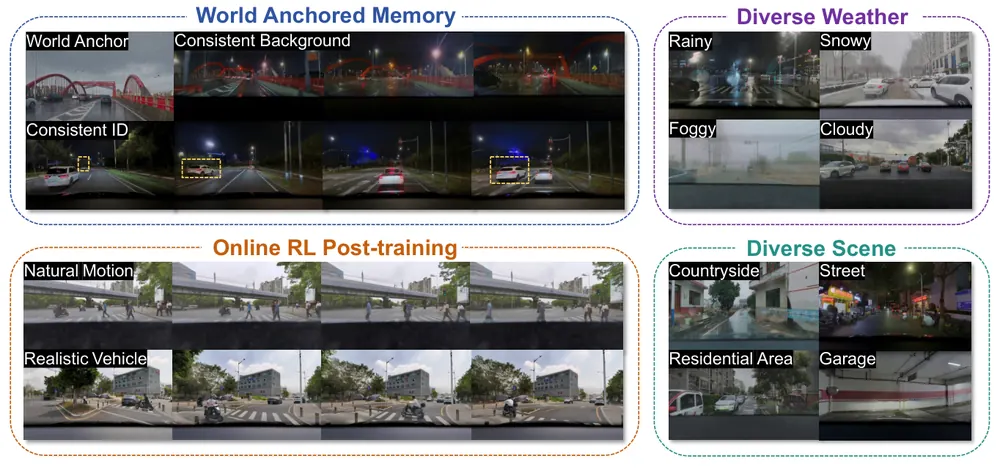
무슨 문제인가
주행 시뮬레이션용 video world model은 영상을 chunk 단위로 이어 만들기 때문에, 처음 몇 초가 지나면 자기가 만든 앞 chunk를 조건으로 다음 chunk를 만듦. 이때 도로와 배경이 실제 위치와 어긋나는 structural drift, 가려졌다 다시 나온 차량이 다른 차처럼 바뀌는 identity drift, 오차가 쌓여 화질이 낮아지는 quality decay가 생김. 기존 모델은 HD map, 3D box, reference frame을 chunk마다 일시적인 조건으로만 넣고 지속되는 상태를 두지 않음. 그래서 rollout이 길어지면 이 정보를 잡음 섞인 자기 생성 영상에서 다시 추정해야 하고, closed-loop 시뮬레이션에 필요한 분 단위 일관성이 유지되지 않음.
어떻게 푸나
WAM-Sim은 NVIDIA OmniDreams의 3D DiT를 초기값으로 씀. 입력은 HD map, 주변 참여자의 3D bounding box와 track ID, ego pose 궤적, 이전 chunk의 KV cache이고, 출력은 다음 video chunk임. WAM(World Anchored Memory)은 세 층으로 나뉨. structural memory는 ego pose에 맞춘 HD lane map을 noisy latent에 더해 도로 형상을 고정함. scene memory는 시간 segment마다 GPS 위치로 geolocated database에서 가장 가까운 참조 이미지를 찾아 읽기 전용 token으로 두고, 그 segment의 video token만 cross-attention으로 읽게 함. instance memory는 각 track이 처음 보일 때 crop을 VAE로 encoding해 track ID별 bank에 한 번만 쓰고(write-once), 다시 나타나면 덮어쓰지 않고 읽어 옴. 이 읽기는 해당 box 안의 token만 참여하는 instance-masked cross-attention으로 함. memory 조건을 많이 넣으면 화질과 물리 타당성이 낮아지므로 Drive DiffusionNFT로 post-training함. Drive DiffusionNFT는 기존 flow-matching online RL 방법인 DiffusionNFT를 주행에 맞춘 것임. 조건마다 자기 생성 rollout 16개를 뽑음. 각 rollout에 scene 화질 점수, 차량·보행자 분류기 logit, SoliReward(주행 영상의 물리 타당성을 점수로 매기는 reward model) 물리 점수로 reward를 매기고 group 안에서 정규화한 뒤 LoRA를 갱신함.
결과
- 자체 수집 데이터(중국 도로 전방 카메라 영상, 평가 clip 350개)에서 memory ablation을 함. memory 없는 SFT backbone 대비 scene과 instance memory를 함께 쓰면 Scene Similarity가 0.852에서 0.910으로 오름. Subject Coherence(교통 참여자 외형의 시간 일관성)는 0.646에서 0.681로 오르고 FVD는 81.64에서 74.20으로 내림. instance memory만 쓰면 FVD가 85.55로 오히려 나빠짐.
- 같은 instance mask를 쓰고 지속 memory가 없는 ConsisDrive와 identity 보존 지표 7개 평균(높을수록 좋음)을 비교함. ConsisDrive 0.680, WAM-Sim 0.695이고 SFT baseline은 0.642임. 가림 길이 92~184 frame 구간의 identity 보존 지표 Occ-ID@2S는 유효 사건이 3개뿐임.
- reward 구성 ablation에서 RL을 하지 않은 모델 대비 reward 세 개를 모두 쓰면 held-out Physical Plausibility가 50.91에서 55.96으로 오름. 이 지표는 Qwen3.5-9B가 보행자 관절 움직임과 팔다리 형태를 yes로 판정한 확률을 두 질문에 대해 평균한 값이며, 표에는 백분율로 적혀 있음. 조건 box의 참여자가 detector로 검출되는 정도인 Subject Fidelity는 41.74에서 44.00으로 오름.
- 외부 모델과 비교하면 같은 자체 데이터에서 FVD가 HorizonDrive(inference only) 218.51, OmniDreams(SFT) 81.64, WAM-Sim 74.20임. nuScenes에서는 geolocated database가 없어 scene memory 없이 돌렸고 FID 3.47, FVD 25.72임.
한계
평가는 자체 수집한 전방 단일 카메라 데이터와 생성 품질 지표에 한정되고, 생성 영상으로 driving policy를 학습하거나 closed-loop로 평가한 결과는 없음. 10, 30, 60초 horizon 비교는 그림으로만 제시되어 수치를 본문 텍스트에서 확인 불가이고, 비교 대상이 scene과 instance memory를 함께 뺀 모델이라 층별 기여는 이 실험으로 가를 수 없음. memory가 RL의 reward hacking을 막는다는 주장은 저자 해석이고 직접 검증한 실험은 없으며, write-once bank는 충돌 손상 같은 큰 외형 변화를 반영하지 못하고 참조 이미지가 없는 지역에서는 scene memory를 쓸 수 없음.
누리랩 연구와의 연결
- 정보 종류별로 다른 갱신 규칙(읽기 전용, write-once)을 둔 memory 설계는 robot memory와 조작용 world model에서 가려졌다 다시 보이는 물체의 identity를 유지하는 문제에 옮겨 볼 수 있음.
- 화질 점수, 분류기 logit, 물리 점수 reward로 world model 자체를 online RL post-training하는 구성은, policy 평가나 failure 예측에 쓸 world model의 물리 타당성을 높이는 방법으로 비교 대상이 됨.
14
66점
Which Objects Stay? Learning Hierarchical Persistence Beliefs for Lifelong Open-Vocabulary Object Maps
Embodied AI
relevance 8/10
ICRA·IROS·RA-L 계열 양식 (추정)
Computer Vision and Pattern Recognition (cs.CV)
open-vocabulary object map에서 물체가 다음 방문 때도 제자리에 있을지를, class label 대신 겉모습과 크기가 비슷한 학습 물체의 기록으로 prior를 정하고 물체마다 Beta belief로 갱신해 예측함. AI2-THOR 시퀀스 120개에서 NLL을 단일 rate persistence filter의 0.341에서 0.265로 낮춤.
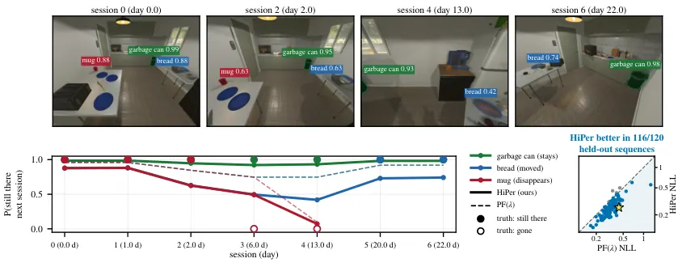
무슨 문제인가
같은 방을 여러 번 다시 찾는 로봇은 예전에 본 물체가 아직 그 자리에 있는지 추정해야 하며, 너무 오래 남기면 지도가 낡고 너무 빨리 지우면 시야 밖에 있을 뿐인 물체를 잃음. Rosen et al.의 persistence filter는 survival prior와 검출 오차 모델로 물체가 남아 있을 사후확률을 계산하는 Bayesian filter임. 이 filter와 후속 방법은 class별 survival rate나 language model이 준 class 단위 prior에 기댐. open-vocabulary 설정에서는 CLIP zero-shot label이 정확한 물체 종류와 맞는 track이 약 3분의 1뿐이고, 같은 class 안에서도 물체마다 움직이는 정도가 다름. 또 persistence를 위치에 묶어 두므로 물체가 옮겨지면 추정을 처음부터 다시 시작함.
어떻게 푸나
HiPer(hierarchical persistence filter)는 학습 물체 기억, 검색된 이웃, 물체별 belief의 세 층으로 persistence를 다룸. 새 물체가 지도에 들어오면 DINOv2·CLIP embedding과 크기·높이·mask 면적으로 만든 geometry 기술자로 가장 가까운 학습 물체 30개를 찾음. 이 이웃들이 머문 시간과 사라진 사건을 가중 interval-censored exponential 모델에 넣고, 전체 평균 rate 쪽으로 shrinkage해 그 물체의 survival rate를 추정함. 이 rate로 하루 동안 제자리에 남을 확률에 대한 Beta prior를 만듦. 세션마다 hit와 miss를 Rosen의 검출 모델로 받아 Beta 파라미터를 closed-form으로 갱신하므로, 오래 머문 물체는 더 persistent하게 바뀌고 자주 움직인 물체는 덜 persistent하게 바뀜. DINOv2 유사도와 Mahalanobis 거리로 물체가 다른 위치에서 다시 발견되면 예전 위치는 사라짐으로 처리하고 Beta belief는 물체를 따라 옮김. 출력은 다음 방문 때 각 물체가 제자리에 있을 확률이고, 이 값이 0.5 아래인 물체는 지도에서 지움.
결과
- THOR-Lifelong(AI2-THOR 방에서 세션 8개 동안 물체가 옮겨지고 사라지는 시뮬레이션 시퀀스) held-out 120개로 평가함. NLL은 HiPer 0.265, PF(λ: rate 하나를 튜닝한 Rosen filter) 0.341, ELite(lifelong LiDAR mapping용 scalar Bayesian fusion) 0.365, POCD(물체 단위 확률적 변화 검출) 0.402임. AUROC는 PF(λ)의 0.786에서 0.911로 오르고, 120개 중 116개 시퀀스에서 PF(λ)보다 NLL이 낮음. 다만 ECE(expected calibration error)는 PF(λ)가 0.045로 HiPer 0.050보다 낮음.
- 같은 THOR 조건의 ablation에서 retrieval prior를 CLIP class rate로 바꾸면 NLL이 0.265에서 0.296으로, 모든 물체에 rate 하나를 쓰면 0.326으로 오름. 물체별 belief 갱신을 빼고 검색된 rate를 고정하면 0.274로 오름.
- 실제 실내 재스캔 데이터 3RScan의 47개 환경(예측 2,107개)에서 NLL은 HiPer 0.310, POCD 0.375, PF(λ) 0.377임. AUROC는 HiPer 0.790, PF(λ) 0.522임. 여기서는 물체별 belief 갱신과 relocation 처리를 빼도 NLL이 각각 0.312, 0.313이라 이득은 대부분 retrieval prior에서 나옴.
한계
세션 안 segmentation과 tracking은 oracle이고 카메라 pose도 ground truth에 drift를 더한 값이라, 실제 perception 오류를 거친 성능은 본문에서 확인 불가함. 물체를 방문마다 무작위로 재배치하는 실로봇 데이터 ObChange(방 5개, 방문 26회)에서는 PF(λ)가 NLL 0.427로 HiPer 0.498보다 나았고 3RScan도 대부분 재스캔이 3회 미만임. THOR 시뮬레이터는 물체가 class가 아니라 affordance에 따라 움직이도록 만들어져 있어, class 기반 prior와의 비교가 HiPer 쪽에 유리하게 설정되었을 수 있음.
누리랩 연구와의 연결
- robot memory와 scene graph/semantic mapping에 바로 이어짐. 3D object map이나 scene graph의 node마다 Beta persistence belief를 달아 두면 오래된 물체 위치를 얼마나 믿을지 정해 object search나 재배치 계획에 쓸 수 있음.
- 다음 방문 때 남아 있을 확률이 낮은 물체를 먼저 다시 확인하도록 active perception/NBV의 탐색 우선순위로 쓰는 실험이 가능함.
15
57점
CST-Bench: Benchmarking Counterfactual Spatial Transition Reasoning with Causal Transition On-Policy Self-Distillation
Embodied AI
relevance 6/10
ICLR 양식 (추정)
Artificial Intelligence (cs.AI)
사진 속 물체를 가상으로 옮기거나 시점을 바꿨을 때 공간 관계가 어떻게 바뀌는지 묻는 benchmark CST-Bench(7,082문항)와 그 전이 주석을 학습 때만 teacher에게 주는 distillation 방법 CT-OPSD를 냄. Qwen2.5-VL-3B 기준 정답률이 주석 없는 on-policy self-distillation(OPSD)의 53.3%에서 55.2%로 오름.
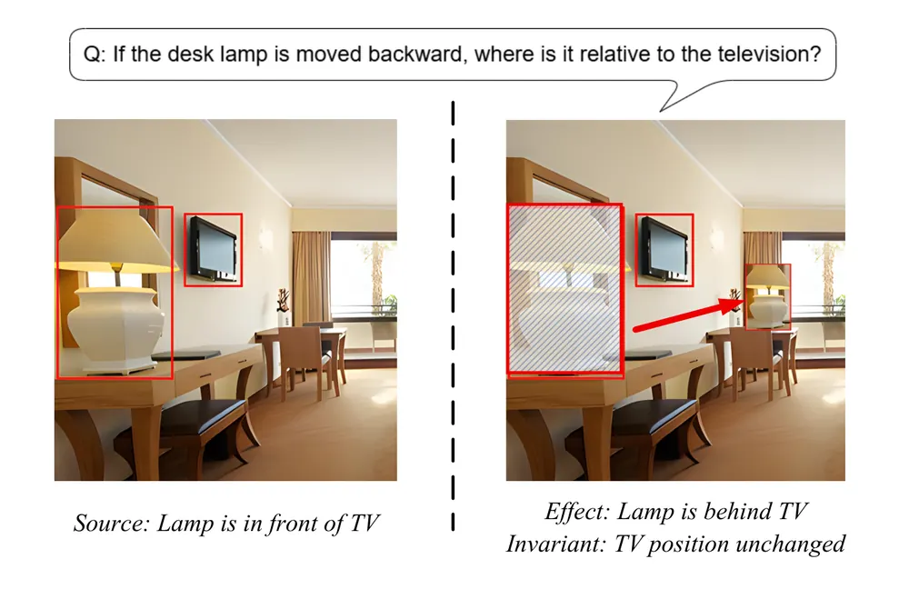
무슨 문제인가
기존 MLLM 공간 추론 benchmark는 이미지에 이미 보이는 관계를 맞히는 정적 문제가 대부분임. 물체를 옮기거나 바꿔치면 영향을 받는 관계만 고치고 나머지는 그대로 두는 선택적 갱신이 필요한데, 이를 따로 재는 도구가 부족했음. MindEdit-Bench처럼 물체 단위 가상 편집을 묻는 benchmark도 있지만, 바뀌는 관계와 유지되는 관계를 함께 적은 전이 기록은 주지 않아 실패 원인을 가르거나 학습 신호로 쓰기 어려웠음.
어떻게 푸나
CST-Bench는 Visual Genome의 VG150 장면에서 출발해 6개 개입 유형(좌우 반전, 물체 위치 교환, 거리 변화, 평행 이동, 깊이 순서 변화, 시점 반전)과 12개 세부 연산자로 문항을 만듦. 결정적 편집기와 symbolic solver가 bounding box 기반 관계로 개입 전후 상태, 바뀌는 관계, 기대 효과, 불변 관계, 거리 변화를 한 번에 도출함. 정답을 보지 않은 VLM이 3번 독립으로 풀어 모두 symbolic 정답과 일치하고 품질 점수가 만점일 때만 통과시키고, 판정이 갈린 문항과 연산자별 표본은 사람이 검수함. CT-OPSD(Causal Transition On-Policy Self-Distillation)는 먼저 teacher가 이미지와 질문만 보고 「원래 상태 → 효과와 불변 관계 → 개입 후 상태 → 정답」 순서의 추론 사슬을 생성하도록 이 주석으로 학습한 뒤 고정함. 같은 base model에서 시작한 student는 이미지와 질문만 받아 스스로 답을 생성하고, 그 생성 prefix 위에서 teacher와 student의 다음 token 분포를 forward KL로 맞추며 정답 cross-entropy를 더함. 추론 때는 teacher와 주석을 버리고 student만 이미지와 질문으로 답함.
결과
- 학습 없이 평가한 오픈 MLLM 10개 중 480문항 평가 split(연산자당 40문항) 전체 정답률이 가장 높은 것은 Qwen3-VL-4B의 49.4%임. Qwen3-VL-4B는 평행 이동에서 96.3%이지만 위치 교환은 25.0%, 시점 반전은 30.0%에 그침.
- Qwen2.5-VL-3B 공통 base에서 CST-Bench 정답률은 base 17.0%, 정답만 쓴 SFT 50.3%, GRPO 46.7%, OPSD 53.3%, CT-OPSD 55.2%임. 주석을 쓴 효과는 OPSD 대비 1.9퍼센트포인트로, 480문항 기준 약 9문항 차이이며 반복 실행 분산은 보고되지 않음.
- 외부 benchmark(이미 보이는 2D 관계·깊이·방향을 묻는 정적 공간 추론 benchmark 셋)에서 CT-OPSD는 CV-Bench 평균 76.9%, BLINK 공간 관계·상대 깊이 평균 76.6%로 비교 방법 중 가장 높음. 3DSRBench는 49.5%로 GRPO 52.9%, OPSD 51.8%보다 낮고 base 46.0%보다는 높음.
- 주석 구성요소를 하나씩 뺀 ablation에서 모두 정답률이 55.2%보다 낮아짐(50.4~52.7%). 다만 효과 추론과 불변 관계 진단 점수는 전 변형에서 0.3~1.5로 같은 표의 원래 상태 이해 점수(34.1~41.3)보다 훨씬 낮아, 모델이 전이 사슬 자체를 맞힌다고 보기는 어려움.
한계
개입 후 장면은 렌더링이나 물리 시뮬레이션 없이 bounding box 위 symbolic 상태로만 정의되며, 관계도 2D 이미지 평면 기준이라 metric 3D가 아님. CT-OPSD 학습 데이터 규모, 정답 cross-entropy 항의 가중치 λ 같은 하이퍼파라미터, 여러 seed 결과는 본문에서 확인 불가하고, 실험은 3B 모델 하나에 한정됨. 로봇이나 행동 결정으로 이어지는 실험은 없고, 코드·데이터 공개 주소도 원문에 없음.
누리랩 연구와의 연결
- 「바꿀 것은 바꾸고 나머지는 유지」를 효과와 불변 관계로 나눠 적는 주석 형식은, manipulation 전에 행동 결과를 counterfactual로 예측하는 world model이나 scene graph 갱신 모듈의 평가 항목으로 옮겨 쓸 수 있음.
- 학습 때만 쓰는 privileged 주석으로 teacher를 만들고 on-policy로 student에 넘기는 구조는, VLA에 실패 원인 같은 구조화 추론을 넣는 방법의 비교 대상이 됨. 다만 이득이 1.9퍼센트포인트라 효과 크기는 따로 검증해야 함.
오늘의 흐름
- 로봇 policy 바깥에서 실패를 예측하고 고치기: 고정된 VLA 바깥에 붙인 모듈로 사람 교정 몇 번을 조건부 cost로 바꾸거나, backbone embedding을 읽어 실패 전에 경보를 울림. 로봇 코드를 쓰는 self-improving agent가 성공 판정 코드를 보면 과제보다 판정기에 맞춰진다는 통제 실험도 나옴. OopsieRecover, Failure Prediction via Calibrated Latent Probing, Learning the Task or Learning the Verifier?
- world model을 영상 생성기가 아닌 학습 신호와 계획 공간으로 쓰기: 미래 예측을 학습 때 보조 신호로만 쓰거나, 생성 모델의 noise를 탐색해 계획하거나, latent 공간에서 상상한 100 environment step 길이의 궤적으로 value를 학습함. 셋 다 픽셀 영상을 그럴듯하게 만드는 것보다 행동 선택에 쓸 정보를 얻는 데 목적을 둠. La-JEPA, GPWM, MAC-v2
- VLA 안에서 공간 정보와 행동을 표현하는 방식 바꾸기: visual embedding을 3D 인식 feature에 맞추는 학습을 continual pre-training으로 넓히거나, diffusion VLM이 연속 action을 직접 만듦. 사람 1인칭 영상 쪽에서는 행동을 영상으로 렌더링해 video 생성 모델 하나로 다룸. SLA, Concertina, EgoGeneralist
- 3D 복원과 시뮬레이션으로 학습 데이터와 장면 표현 만들기: 장면과 물체를 따로 3DGS로 복원해 새 base pose의 demonstration을 합성하거나, rigid-body 시뮬레이션에서 shear가 담긴 촉각 flow를 elastomer 변형 계산 없이 근사함. 단안 영상의 4D 복원에서는 convex relaxation으로 해가 전역 최적인지 확인할 수 있는(certifiable) 최적화가 나옴. MOMASPLAT, TactileLab, XM4D
- 오래 가는 장면 기억: 물체가 다음 방문 때도 제자리에 있을 확률을 물체마다 belief로 관리하는 object map과, 주행 world model에서 가려졌다 다시 나온 차량의 외형을 유지하는 memory가 나옴. HiPer, WAM-Sim0.1
해볼 만한 연구
사람 교정에서 만든 cost를 실패 예측기로 쓰기
- 질문: 사람 교정 문장에서 만든 조건부 cost 중 언제 cost를 켤지 정하는 gate가, 실패가 드러나기 전에 경보를 울리는 detector로도 작동하는지 확인함.
- 첫 실험: 같은 VLA rollout 데이터에서 OopsieRecover 방식 gate 점수와 VLA-TUG(고정된 VLA의 backbone embedding을 읽는 LSTM probe) 점수를 각각 실패 신호로 씀. 조기 탐지 면적(오경보율 40%까지 실패 시점 이전 탐지율 곡선 아래 면적)을 비교하고, 두 신호를 합친 경우도 잼.
- 가장 가까운 연구: OopsieRecover는 gate를 행동 후보 선택에만 쓰고 탐지 성능은 재지 않음. Failure Prediction via Calibrated Latent Probing은 embedding만 읽고 사람 교정 문장은 쓰지 않음.
world model 예측과 실제 진척의 차이로 재계획 시점 정하기
- 질문: world model 안에서 예측한 과제 진척과 실제 실행 진척의 차이를, 실행 중 실패를 알리고 재계획을 시작하는 신호로 쓸 수 있는지 확인함.
- 첫 실험: GPWM(로봇과 물체를 3D 입자 움직임으로 생성하는 world model)의 noise 탐색 planning을 시뮬레이션 조작 과제에서 돌림. 차이가 기준을 넘을 때만 재계획, 고정 주기 재계획, 재계획 없는 open-loop의 세 경우에서 성공률과 계산량을 비교함.
- 가장 가까운 연구: GPWM은 계획을 open-loop로만 실행하고, 예측과 실제 진척의 차이는 사후 분석으로만 보임.
object-centric 3D 지도에 persistence belief 달기
- 질문: 3DGS 물체 단위 지도의 물체마다 다음 방문 때 제자리에 있을 확률(persistence belief)을 두면, 다시 방문한 장면에서 무엇을 재관측할지 줄이면서 물체 위치 정확도를 유지할 수 있는지 확인함.
- 첫 실험: AI2-THOR(실내 가정 환경 시뮬레이터)의 반복 방문 시퀀스에서 belief가 낮은 물체만 재관측하는 정책과 모든 물체를 재관측하는 정책을 비교함. 이동 거리와 물체 위치 오차를 잼.
- 가장 가까운 연구: HiPer는 oracle segmentation 위의 object map만 다루고 3D 표현을 갱신하지 않음. MOMASPLAT은 장면이 대체로 정적이라고 가정함.
꼭 읽을 논문
- GPWM: Modeling the World as 3D Particle Motion: 행동 대신 생성 noise를 탐색하는 planning을 보이고, 모델 안에서 예측한 진척과 실제 실행 진척이 크게 어긋나는 경우도 표로 보임.
- OopsieRecover: 교정 3~6개로 고정된 VLA의 실로봇 행동을 바꾸는 방식이라 failure recovery 실험에 바로 옮길 수 있음.
- Failure Prediction via Calibrated Latent Probing: 실패 시점 기준의 평가 지표와 3,180 episode embedding dataset을 공개해 failure prediction 비교 기준으로 쓸 수 있음.
- La-JEPA: video 생성 backbone 없이 V-JEPA feature로 작은 world-action policy를 학습하고 코드를 공개함.
- Learning the Task or Learning the Verifier?: 성공 판정기를 학습 피드백으로 쓰는 실험 설계를 점검할 때 참고할 통제 실험임.
전체 1차 스크리닝 결과 (457편, 점수순) 펼치기
| # | 제목 | 점수 | 🤖 | 분야 | 한 줄 근거 |
|---|---|---|---|---|---|
| 1 | OopsieRecover: Learning Transferable VLA Corrections from Semantic Interventions | 72 | 9 | VLA | VLA 실패 복구를 의미 수준 개입으로 학습해 전이 가능한 correction을 만듦. failure recovery 주제와 직결되나 증거 범위는 초록만으로 확인 한계 있음. |
| 2 | GPWM: Modeling the World as 3D Particle Motion | 70 | 8 | World Model | 3D particle motion을 생성하는 world model로 강체·변형체·입자를 한 구조로 다룸. 비디오 대신 3D 물리 공간 표현이 새로움. |
| 3 | Failure Prediction and Classification in Vision-Language-Action Models Via Calibrated Latent Probing | 68 | 9 | VLA | VLA 실패 예측·분류를 보정된 latent probing으로 수행함. runtime monitor 주제에 부합하며 calibration 강조가 장점임. |
| 4 | Concertina: Embodying Manipulation and Cognition in One Diffusion Vision-Language Model | 66 | 9 | VLA | action expert 없이 diffusion VLM backbone 하나에 연속 action latent token을 직접 넣는 eVLM 설계로 action 파라미터 0.21%에 LIBERO 98.15%, LIBERO-Plus, CALVIN을 보이나 실로봇 결과는 초록에서 확인 불가함. |
| 5 | La-JEPA: Compact Robot Policies with Latent World Modeling | 66 | 8 | World Model | latent world modeling으로 작은 JEPA 기반 policy를 만듦. 큰 VLA 대비 compact한 대안이라는 문제 설정이 흥미로움. |
| 6 | EgoGeneralist: Unifying Egocentric Action-Video Tasks through Video-Native Modeling | 66 | 7 | Video | 사전학습 비디오 생성기를 metric 3D 손동작과 연결해 action-video 생성, pose 추정, 결합 생성 6개 과제를 통합함. egocentric manipulation world model과 가까우나 수치 근거가 초록에 없어 중상 점수임. |
| 7 | MAC-v2: Long-horizon model-based value expansion from pixels | 66 | 7 | World Model | reconstruction-free latent world model과 action chunking으로 pixel 기반 offline RL에서 long-horizon value expansion을 가능케 함, visual OGBench, Robomimic, LIBERO-10에서 평가해 로봇 조작과 직결되며 ablation도 있으나 benchmark 수치는 본문 초록에서 확인 불가임 |
| 8 | SLA: Scaling Spatial-Language-Action Model via Continual Pre-training | 64 | 9 | VLA | 공간 이해를 continual pre-training으로 VLA에 넣는 spatial-language-action 모델임. scale-up 성격이 있어 novelty는 중간임. |
| 9 | TactileLab: Sim-to-Real Dexterous Robot Manipulation with Efficient Shear-Sensitive Tactile Simulation | 64 | 8 | Tactile | shear 촉각을 효율적으로 시뮬레이션해 dexterous sim-to-real RL 확장함. tactile 주제와 맞음. |
| 10 | XM4D: 4D Reconstruction through Certifiable Geometric Optimization | 64 | 6 | 3D Vision | 카메라 운동과 non-rigid 변형을 QCQP와 SDP 완화로 나눠 전역 최적성 인증이 되는 4D 복원을 만듦. 7개 benchmark에서 수천 프레임까지 확장되고 4D 표현 초기화에도 쓰여 이론적 새로움이 큼. |
| 11 | Learning the Task or Learning the Verifier? Rethinking Criteria Exposure in Embodied Self-Improvement | 63 | 8 | Embodied AI | embodied coding agent가 benchmark 성공 기준을 보면 기준이 조금 바뀔 때 이득이 사라지고 skill 전이도 약함을 통제 실험으로 보임. 평가 오염 문제를 짚고 instruction-faithful 기준을 제안해 로봇 self-improvement 평가에 시사점이 큼. |
| 12 | WAM-Sim0.1: World Anchored Memory Meets Online RL for Consistent and Realistic Driving Simulation | 63 | 6 | World Model | 구조, 장면, 인스턴스 token의 계층적 persistent memory와 online flow-matching RL로 주행 world model의 장기 drift를 줄임. memory와 RL 결합은 흥미로우나 FID 3.47 등 영상 지표와 운전 도메인에 한정됨. |
| 13 | CST-Bench: Benchmarking Counterfactual Spatial Transition Reasoning with Causal Transition On-Policy Self-Distillation | 63 | 6 | Embodied AI | CST-Bench는 객체 이동·교체 같은 intervention 후 장면 상태 변화를 묻는 counterfactual spatial reasoning을 7,082개 예제와 인과 주석으로 다루고, 일반 공간 추론 방법이 여기서 실패함을 보임. embodied spatial·counterfactual 주제에 직접 맞으나 평가가 MLLM 중심이고 CT-OPSD는 초기 시연 수준임. |
| 14 | Which Objects Stay? Learning Hierarchical Persistence Beliefs for Lifelong Open-Vocabulary Object Maps | 62 | 8 | Embodied AI | open-vocabulary 평생 객체 지도에서 클래스 대신 유사 인스턴스 검색으로 Beta belief 사전분포를 만들고 재식별 시 옮기는 persistence filter HiPer임. robot memory와 semantic mapping에 직접 연결되고 3RScan 실데이터 평가가 있으나 규모가 작음. |
| 15 | MOMASPLAT: Dynamic Novel-View Demonstration Augmentation for Mobile Manipulation | 62 | 8 | Manipulation | Gaussian splatting으로 새 시점 시연을 증강해 mobile manipulation 시점 강건성 높임. 3DGS 활용이 실용적임. |
| 16 | Fast and Reliable Open-Vocabulary Object Search with Absence Detection from Robot Memory | 62 | 8 | Robot Memory | 로봇 memory에서 open-vocabulary 객체 검색과 부재 판정을 함. robot memory 주제와 직결됨. |
| 17 | Efficient Diffusion Policy Fine Tuning with Latent Noise Representation Bridging | 62 | 8 | RL | latent noise 표현으로 diffusion policy RL fine-tuning을 효율화함. 이론 보장 주장이 있어 관심 가치 있음. |
| 18 | Deformable Contact-Aware 3D Object Placement | 62 | 7 | Embodied AI | 객체 배치를 rigid 6-DoF 예측 대신 의미적 release state를 정하고 rigid-deformable 시뮬레이터가 평형까지 떨어뜨리는 방식으로 재정의함. 침투 깊이 72.3% 감소를 보여 물리 기반 배치와 조작에 연결되나 시뮬레이션 평가임. |
| 19 | GuidedWAM: Training-Free Energy Guidance for World Action Models in Autonomous Driving | 62 | 7 | World Model | 고정된 world action model의 sampling 중간 action 추정에 미분 가능한 energy를 걸어 재학습 없이 주행 목표를 주입하는 GuidedWAM임. 공개 WAM 3종 모두 NAVSIM v2 hard split에서 1.8~3.6 EPDMS 오르고 시간 증가가 10% 미만이라 test-time guidance로 의미 있으나 시뮬레이션 평가만 있음. |
| 20 | PlayGen2: Learning Real-Time Playable Worlds with Explicit 3D State | 61 | 5 | World Model | 생성 프레임 대신 occupancy grid와 entity 상태를 persistent memory로 두고 렌더러를 분리한 실시간 world model임. Doom에서 zero-shot 지도와 규칙 개입을 보이나 게임 환경 한정이고 실제 로봇 근거는 없음. |
| 21 | Latent RL Priors for Data-Efficient Dexterous Manipulation | 60 | 8 | Manipulation | 시뮬레이션 RL prior를 latent로 증류해 적은 시연으로 dexterous 학습함. 접근은 타당하나 구성이 2단계 조합 위주임. |
| 22 | Time-Indexed Skill Success Models for Latency-Aware Skill Selection and Timing in Dynamic Manipulation | 60 | 8 | Manipulation | 동적 manipulation에서 지연을 고려해 시간 색인된 skill 성공 모델로 선택함. skill selection 주제와 맞고 문제 정의가 명확함. |
| 23 | Learning Robotic World Models with Semantic and Visual Feedback | 60 | 8 | World Model | 의미·시각 feedback으로 robot world model 학습함. 손실 설계 중심이라 novelty는 중간임. |
| 24 | Spatial-UMI-Dream: Scaling World Action Models with Metric Geometry for UMI Manipulation | 60 | 8 | World Model | UMI 조작에 metric geometry를 넣어 world action model을 확장함. 유망하나 scale-up 성격도 있음. |
| 25 | FreeOcc: Decoupling Ego-Motion for Efficient 4D Occupancy Forecasting via Continuous Flow Matching | 60 | 6 | World Model | SE(2)로 ego-motion을 분리한 flow-matching 4D occupancy 예측 world model임. 28.3M 파라미터로 27 FPS이고 nuScenes SOTA와 SemanticKITTI zero-shot 전이를 보여 효율적이나 자율주행 한정임. |
| 26 | Aligning Policy Encoders with a Shape Teacher | 58 | 8 | Manipulation | 이미지 policy encoder를 3D shape teacher에 정렬해 3D 정보를 내재화함. representation 주제로 타당하나 규모는 작아 보임. |
| 27 | HITCH: Teaching a Vision-Language Model to Operate a Humanoid through a Whole-Body Harness | 58 | 7 | Embodied AI | VLM이 harness 인터페이스로 humanoid 전신을 조작하게 함. 인터페이스 설계가 주 기여임. |
| 28 | Embodied RAG++: Retrieval-Augmented Generation From What Exists to What Works in Embodied Scenes | 58 | 7 | Scene Graph | scene graph에 없는 capability를 검색으로 보완하는 embodied RAG임. 로봇 기억·scene graph 주제에 부합함. |
| 29 | MessyNav: Zero-Shot Navigation via Manipulation in Messy Environments | 58 | 7 | Navigation | 어지러운 환경에서 물체 조작으로 길을 내는 zero-shot 상호작용 navigation임. 문제 설정이 흥미로움. |
| 30 | RM-VLM: From Natural-Language Task Descriptions to Vision-Grounded Reward Machines | 58 | 7 | RL | LLM이 자연어 과제에서 reward machine을 만들고 VLM이 labelling function과 진행도 value를 맡는 RM-VLM임. grid-world, 조작, 3D 수집에서 기존 VLM reward보다 성공률이 높으나 도메인이 단순하고 baseline 범위가 제한적임. |
| 31 | Where and Why is Grounded Reasoning Useful? | 58 | 5 | Multimodal | grounded reasoning이 counting에만 이득이고 설명 불가능한 시각 참조가 필요한 과제에서 유용함을 CoT 분석과 합성 과제로 보임. BrickVision benchmark까지 만들어 공간 추론 VLM 설계에 쓸 만한 분석 논문임. |
| 32 | Shaping & Monitoring Models through their Internal Representations | 58 | 2 | LG | 내부 representation에 규칙을 걸어 학습하는 Mechanistic Shaping을 32B와 SFT, DPO, GRPO까지 적용하고 monitorability 우회 세 가지 메커니즘을 분석함, 범위가 넓고 분석이 탄탄하나 로봇과는 간접적임 |
| 33 | RoboARCade: Benchmarking Agentic Robot Control | 57 | 8 | Embodied AI | agentic robot control용 long-horizon benchmark임. memory·reasoning 평가 주제는 맞으나 benchmark 기여임. |
| 34 | ArtCrafter: Feed-Forward Generation of Articulated 3D Object with Analytic Joint Derivation | 57 | 7 | 3D Vision | rest와 open 두 이미지에서 slot 구조 DiT로 부분 mesh를 만들고 URDF 관절을 해석적으로 도출하는 articulated 생성 모델임. 로봇 시뮬레이션 자산 생성에 직접 유용하나 두 상태 입력이 필요하고 수치 근거가 초록에 약함. |
| 35 | Structure from Collision via Hypothesis-Space Reasoning | 57 | 6 | 3D Vision | 충돌 변형 관측에서 숨은 공동을 밀도 대신 명시적 hypothesis로 보고 MPM 전역 탐색 후 미분 가능 MPM으로 다듬음. 물체 내부 추론과 조작 예측에 연결되나 시뮬레이션 benchmark 위주임. |
| 36 | Semantics-to-Contact: A Stagewise Framework for Robust Contact-Rich Manipulation | 56 | 8 | Manipulation | 시각 변화에 강건한 contact-rich 실세계 RL을 단계별로 구성함. 주제는 맞으나 세부 근거 확인 한계 있음. |
| 37 | Teaching Agents the "Principle", Not the "Reward": Prescriptive Policy Learning | 56 | 7 | RL | reward 대신 균형 유지나 부드러운 착지 같은 principle을 매 step 직접 알려 주는 PPL이 reward 기반보다 적은 샘플로 일반화 policy를 학습함, reward design 부담을 줄이는 formulation이 참신하나 단순 제어 과제 위주로 보임 |
| 38 | Expanding the Quality-Coverage Frontier with Competitive Flow Matching | 56 | 2 | LG | K개 후보 velocity가 경쟁하는 winner-take-all flow matching과 auxiliary conditioning scaling으로 quality-coverage 경계를 크게 개선(FD 19.22에서 5.91)한 원리적 생성 모델 기여이나 ImageNet 검증에 한정됨. |
| 39 | Monotone Viability Learning for Offline Safe Reinforcement Learning | 55 | 7 | RL | offline 전이에서 monotone 유한 horizon 집합 recursion으로 HJ viability kernel을 학습하고 배포 시 action을 인증함, 안전 제어에 적합하고 모든 task에서 cost 제약을 만족하나 Dubins와 벤치마크 수준 실험임 |
| 40 | SM4RT: Cascaded Feed-forward Model for 4D Reconstruction | 55 | 5 | 3D Vision | geometry를 먼저 복원한 뒤 camera frame 기준 pixel 3D motion을 추정하는 cascade feed-forward 4D 복원 모델임. 약지도 loss가 있고 동적 장면 이해에 유용하나 구조적 도약은 중간 수준임. |
| 41 | VINO: Revisiting 3D Representation Learning with Volume Transformers | 55 | 5 | 3D Vision | PTv3 대신 Volume Transformer를 쓰고 teacher-student 목표와 2D-3D distillation을 재설계한 3D scene 자기지도 표현 학습으로 dense linear probing이 크게 오르며 3D 표현 기반 로봇에 유용함. |
| 42 | The Intrusion Pathway: How Non-Evidential Context Degrades Language Model Performance | 55 | 2 | LG | 무관한 문맥이 정확도를 낮추는 경로를 MLP 풍부화, parroting head, intrusion head로 추적하고 약 10개 head knockout으로 57%를 회복함. 원인을 head 수준으로 국소화한 mechanistic 증거가 강하나 로봇과는 간접적임. |
| 43 | Georeferenced Cross-View 3D Reconstruction from Ground and Satellite Images | 54 | 5 | 3D Vision | 지상 이미지와 위성 이미지를 함께 넣어 카메라 pose, point map, gravity-scale-yaw 변환을 feed-forward로 예측해 지오레퍼런싱 복원을 함. 야외 navigation과 mapping에 연결되고 새 평가 프로토콜을 제시하나 수치가 초록에 없음. |
| 44 | Learning Dynamics of On-Policy Distillation | 54 | 2 | NLP | on-policy distillation의 conversion과 broadcast 두 단계 feedback loop을 분석해 student 반응 저하와 degeneration 원인을 설명함, offline 준비 후 OPD 이득까지 보여 이해에 도움 됨 |
| 45 | Structured Machine Theory of Mind from Agent Trajectories | 53 | 4 | Embodied AI | BDI 구조의 belief와 desire를 명시 supervision으로 추정해 counterfactual 개입이 가능한 SMToM을 보임, causal 해석 관점은 좋으나 통제된 보행자 navigation 시뮬레이션에서만 검증함 |
| 46 | When Bigger Becomes Brittle: Why Compression Hurts More as Language Models Scale | 53 | 2 | LG | retrieval head ablation 손실을 복원분과 출력 도달분으로 정확히 분해해, 큰 모델일수록 보상이 적어 압축이 더 해로움을 보임. 압축 평가의 기계적 설명을 주는 해석 연구이며 효율적 추론 연구에 시사점이 있으나 retrieval 능력 한 가지에 한정됨. |
| 47 | Same Answer, Different Future: Matched Predictions Do Not Imply Matched Belief Updating in Language Models | 53 | 1 | NLP | LM 상태를 여러 경로로 만들어 같은 예측이어도 새 증거에 대한 belief update(effective evidence weight)가 크게 다름을 Bernoulli 과제로 보임, 개념이 명확하나 장난감 과제 한정임 |
| 48 | Accelerating Safe Reinforcement Learning with Massive Parallelism | 52 | 6 | RL | massively parallel 환경의 짧은 rollout과 CMDP 에피소드 비용 제약 사이 불일치를 phase-mixture로 분석하고 cost estimator를 만든 safe RL 논문임, 로봇 sim 학습에 쓸모 있으나 Safety Gym 실험뿐임 |
| 49 | Binding Paraphrased Instructions to Encountered Objects in sLLM Agents under Partial Observability | 52 | 6 | Embodied AI | ALFWorld-Para로 동의어 paraphrase 시 sLLM agent 성공률이 21~52% 떨어짐을 밝히고, 학습 없는 BINDIntent로 최대 49.1pt 회복함, 문제 진단은 좋으나 텍스트 시뮬레이션 환경 한정임 |
| 50 | VFlash: Fast, Accurate Visual Planning via Flash Primitive Decoding | 52 | 6 | VLA | visual plan 디코딩을 병렬 primitive로 가속함. 효율 개선 중심의 incremental 성격임. |
| 51 | Kinematic Hypothesis Context: Embodiment-Conditioned Learned Video Coding for Bandwidth-Limited Robot Policy Uplinks | 52 | 6 | VLA | 로봇 자기 운동을 예측해 VLA 업링크 영상 비트를 줄임. embodiment 조건 코덱이 독창적이나 응용 한정임. |
| 52 | Interactive Visual Gym: Evaluating Visual Interaction Models with Simulated Users in Interactive Worlds | 52 | 5 | Embodied AI | 조리, 가정 조작, 모바일 UI 환경과 사용자 시뮬레이터로 시각 상호작용 모델을 폐루프 평가하는 IVG-Bench임. 최고 VLM이 53.4%만 완료하고 GRPO 학습 신호도 보여 설계가 탄탄하나 로봇 정책 자체는 아님. |
| 53 | STEP: Spatiotemporal Training with Explicit Prediction for Perceptive Humanoid Locomotion | 52 | 5 | Locomotion | humanoid 지형 인지 locomotion에 명시적 예측을 추가함. 로봇 RL이나 manipulation 주제와는 거리 있음. |
| 54 | Rotation Is Token-Blind: A Structural Criterion for Post-Training Quantization of Feed-Forward Geometry Transformers | 52 | 4 | 3D Vision | geometry transformer PTQ에서 rotation과 smoothing이 token 간 상대 SNR을 못 바꾼다는 점을 증명하고 special token 보정 통계 Γ를 제안함. W8A8에서 메모리 2.2~3.1배 절감을 보이며 이론과 실용을 겸하나 적용 범위가 좁음. |
| 55 | AffineGS: Unlocking Accurate Geometry in 3DGS via Spatially Varying Affine Rectification | 52 | 4 | 3D Vision | 단안 depth가 지역별 piecewise-linear 왜곡을 가져 전역 scale-shift 정렬이 틀렸음을 발견하고 공간 가변 affine 보정으로 3DGS geometry를 개선함. 진단이 명확하고 object-centric 3DGS에 유용하나 정량 근거가 초록에 없음. |
| 56 | Cooperative Multi-Agent Reinforcement Learning via Epigraph-Form Guided Exploration | 52 | 4 | RL | EFXPLORER는 task 성능 유지 제약 아래 탐험을 최대화하는 epigraph 재정식화와 successor distance 보상으로 MARL 탐험을 개선하며 SMAX·VMAS·MPE에서 baseline을 앞섬. 원리가 명확하나 시뮬레이션 MARL 벤치마크에 한정됨. |
| 57 | Towards interpreting any residual stream direction by scaling activation inversion | 52 | 1 | NLP | label-free RL로 residual stream 방향을 최대 활성화하는 텍스트를 생성하는 MAEM을 학습해 corpus 검색과 NLA를 능가하고 forward pass로 검증 가능한 해석 도구임. |
| 58 | SAE Interprets MoE: Sparse AutoEncoders Reveal That MoE Experts Exhibit Human-Interpretable Fine-Grained Specialization | 52 | 1 | NLP | MoE layer 출력에 SAE를 학습해 latent 활성을 expert별로 정확히 분해하고 세분화된 전문화를 보임, Qwen3-30B-A3B에서 해석 방법론이 깔끔하고 코드 공개함 |
| 59 | Test-Time Self-Play: Scaling without a Verifier | 52 | 1 | LG | verifier 없이 asymmetric self-play로 test-time scaling을 하는 TTSP가 verifier가 약할수록 격차가 커지고 무검증 한계에서 mean@8 35% 향상을 보임, inference-time 방법으로 흥미롭지만 코드 생성 한 벤치마크 위주임 |
| 60 | SwarmEvolve: Latent Agent Swarms for Evolutionary Discovery and Optimization | 52 | 1 | LG | 저비용 agent 수백 개가 latent space에서 KV cache로 정보를 주고받는 진화 탐색 SwarmEvolve임. 21개 문제에서 기존 대비 3~8분 만에 60분 성능에 도달해 효율 증거가 강하나 로봇과는 멀음. |
| 61 | CoRD: Coupled Rollouts Fill the Blind Spot of On-Policy Distillation | 51 | 2 | NLP | speculative decoding의 maximal coupling으로 student와 teacher의 보간 분포에서 rollout을 뽑아 OPD의 blind spot을 메움, 수학 benchmark에서 pass@1 0.9~2.0pt 상승으로 이득은 작으나 설계가 깔끔함 |
| 62 | Circe: Training-Free LLM Self-Evaluation via Component Interaction Consistency | 51 | 2 | LG | attention 변화와 FFN 출력 변화의 방향 정렬(CIC)과 hidden-state 기하, likelihood를 합쳐 정답성을 참조 없이 평가하는 Circe임. 5개 LLM·6개 benchmark에서 baseline보다 낫고 failure detection 관점에서 참고할 만하나 텍스트 LLM 한정임. |
| 63 | Neural Compression over Equivalence Classes: Exact Gauges and Functional Rate-Distortion | 51 | 1 | LG | 함수 보존 변환으로 신경망 checkpoint를 더 잘 압축하는 발상이 참신하고 SmolLM2와 Qwen3에서 Zstandard 크기를 최대 23.4% 줄임, 저장 최적화라 활용 범위는 좁음 |
| 64 | T3R: Training-Free Two-Stage Token Refinement Towards Efficient and Robust VLA Models | 50 | 8 | VLA | training-free visual token 정제로 VLA 추론 효율과 강건성 높임. token pruning 계열의 작은 개선 수준임. |
| 65 | VREgo: Consumer VR Headsets for Learning Robot Manipulation from Egocentric Demonstrations | 50 | 7 | Imitation | VR 헤드셋으로 egocentric 시연을 수집함. 데이터 수집 도구 위주임. |
| 66 | Social Humanoid: Socially Responsive Human-Humanoid Interaction | 50 | 6 | Humanoid | 사람-휴머노이드 사회적 상호작용 계층 시스템임. 실로봇 구현은 있으나 novelty는 보통임. |
| 67 | Leave It Better Than Found: Value-Guided Cooperation in Sequential Tasks | 50 | 6 | Multi-robot | 선행 로봇이 바꾼 작업 공간에서 value 기반으로 협력함. 문제 설정은 흥미로우나 증거 확인 한계 있음. |
| 68 | LMGN: A Unified Policy Learning Model for Last-Mile Grasp-Navigation | 50 | 6 | Mobile Manipulation | legged manipulator의 last-mile grasp-navigation 통합 policy임. 문제 설정은 실용적이나 novelty는 중간임. |
| 69 | Goal-Branching LaCAM: Temporary Goals as Search Branches in Dense Multi-Agent Pathfinding | 50 | 6 | Planning | Goal-Branching LaCAM은 막힌 agent에 임시 goal을 부여해 탐색 분기로 쓰되 completeness를 유지하며, 밀집 MAPF에서 해결률 89% 대 44%와 최대 200배 속도를 보임. 다중 로봇 경로 계획에 실질적 개선이나 해 비용이 15-22% 늘고 단순 아이디어임. |
| 70 | Towards Real-Time Full-Waveform LiDAR Transformers via Intensity-Guided Token Reduction and Physics-Aware Augmentation | 50 | 5 | 3D Vision | full-waveform LiDAR transformer에 강도 기반 token pruning과 waveform 보존 증강을 넣어 8배 속도 향상과 F1 약 9점 개선을 보임. 안개나 투명체에서 센싱에 강하고 효율 이득이 크나 특수 센서 데이터셋 한정임. |
| 71 | How do Transformers Perform Low-Level Control In-Context? | 50 | 5 | RL | Transformer가 cartpole과 acrobot을 시스템 파라미터 모른 채 in-context로 제어하는 능력을 보이고 OOD 시스템도 안정화함, 저수준 제어 in-context 관점이 흥미로우나 단순 시스템 두 개로 한정됨 |
| 72 | PhySA: Decoupling Aesthetic and Physical Rewards for Humanoid Locomotion | 50 | 5 | RL | VLM 미적 reward와 물리 reward를 분리해 humanoid 보행 학습함. reward 설계 아이디어는 있으나 locomotion임. |
| 73 | Bri3D: Bridging the Object-Scene Gap in Single-Image 3D Generation via Scene-Anchor | 50 | 4 | 3D Vision | 단일 이미지 장면 생성에서 voxel scene anchor로 장면 배치와 객체 세부를 분리하고 frozen 객체 생성기를 재사용함. 로봇 시뮬레이션 자산에 쓸 수 있으나 수치 근거가 초록에 약함. |
| 74 | AttnSR: Attention Step Reward for Long-Horizon Agentic RL | 50 | 4 | RL | policy attention 그래프를 거슬러 올라가 step-level reward를 배분하는 AttnSR이 보상 모델 없이 ALFWorld 성공률을 91.2%에서 97.1%로 올림, 단일 모델 규모 7B 통제 실험이라 일반성은 미확인임 |
| 75 | Permanent and Transient Representations for Continual Reinforcement Learning | 50 | 4 | RL | continual RL에서 permanent는 parametric, transient는 non-parametric 표현으로 나눈 complementary learning system 설계와 이론을 제시함, stability-plasticity 문제에 닿으나 실험은 이미지 과제와 Craftax-Classic 수준임 |
| 76 | Terrain-Indexed Motion Priors and Geometric Support for Extreme Humanoid Parkour | 50 | 4 | Locomotion | humanoid parkour용 지형 인덱스 motion prior임. 곡예 locomotion 중심이라 연결 약함. |
| 77 | BabyTheorist: A Benchmark for Learning to Theorize the World from Observation Alone | 50 | 3 | Embodied AI | 숨은 compositional program에서 나온 전후 시각 관측만으로 이론을 배우는 observational theory learning benchmark임. 라벨·support set 없이 curriculum을 통제하는 설정이 새롭고 baseline 7종이 모두 천장 아래라 world model 연구에 연결됨. |
| 78 | Guidance Is a Field, Not a Scalar: Interval-Integrated Classifier-Free Guidance for One-Step Video Generation | 50 | 2 | Video | MeanFlow one-step 비디오 생성에서 CFG 가이던스를 적분 항등식으로 target에 흡수해 추가 비용 없이 시간·프레임별 가이던스를 구현한 아이디어가 깔끔하나 로봇 직접 연관은 약함. |
| 79 | Where Do Reported Long-Video QA Gains Come From? A Controlled Audit of Frame Selection, Evidence Injection, and Expert Routing | 50 | 2 | Video | Video-MME long에서 어떤 frame selector도 uniform 샘플링보다 유의하게 낫지 않음을 통제된 audit으로 보이고 자기 결과도 정정한 엄밀한 평가 연구이나 방법론 기여는 아님. |
| 80 | Unpacking the Compute Efficiency of Strong-to-Weak OPD against GRPO | 50 | 2 | RL | on-policy distillation과 GRPO를 FLOPs 기준으로 체계 비교해 자기 GRPO checkpoint를 teacher로 쓰면 50배 적은 비용임을 보이는 유익한 실증 분석이나 LLM 수학·코드 한정임. |
| 81 | How Far Can Untrained Neural Networks Go in Anomaly Detection? From Tables to Pixels | 50 | 2 | CV | 학습 없는 random feature와 Mahalanobis 점수로 ADBench와 MVTec AD/VisA에서 경쟁력 있는 anomaly detection을 달성해 학습 표현의 가치를 가늠할 baseline을 제시함, 가정이 단순해 설득력 있음 |
| 82 | Should We Pay This Much for Robustness? Efficient Proxy Certificates with Marginal Guarantees | 50 | 2 | LG | randomized smoothing 인증을 conformal risk control로 보정한 cheap proxy가 대체해 forward 한 번으로 인증함, marginal 보장이라는 점은 약하나 비용 문제를 정면으로 다룸 |
| 83 | Localization Does Not Imply Steerability: A Mechanistic Study of Sign Errors in LLM Mathematics | 50 | 0 | LLM | LLM 수학의 sign 오류를 후반 MLP layer에서 찾아 방향 제거로 교정하되 Phi-4는 중복 기록으로 안 됨을 사전등록 검증으로 보임, localization이 steerability를 뜻하지 않는다는 결론이 명확함 |
| 84 | DictLLM: Post-training Compression of Large Language Model with Dictionary Kernels | 49 | 3 | LG | 층 그룹이 공유 dictionary와 sparse 계수를 쓰도록 SVD·Hessian으로 사후 압축하는 DictLLM임. LLaMA-7B를 5.1배 압축하며 perplexity 증가 2.9에 그쳐 low-rank 기법 대비 3.6배 높은 압축률을 보이나, 온디바이스 VLA 효율화에 응용 가능성은 간접적임. |
| 85 | Reinforcing What the Student Has Learned: Teacher-Guided On-Policy Distillation | 49 | 1 | NLP | OPD 피드백이 style 위치에 3.5배 치우침을 관찰하고 student-base 차이로 계수를 만드는 SD-OPD를 제안함, 수학 6개 task에서 OPD 대비 7.76~10.37pt 상승해 큰 폭이나 수학에 한정됨 |
| 86 | $D^2$-OPD: Separating Direction and Distance in Extrapolative On-Policy Distillation | 49 | 1 | NLP | on-policy distillation에서 extrapolation 방향과 거리를 분리한 D2-OPD가 수학 추론에서 최강 baseline보다 최대 9.45점 높음, 설계는 명확하나 LLM 추론 벤치마크 개선 중심임 |
| 87 | Fast and Accurate Hand Estimation in Pixels, Interaction and World Space | 48 | 6 | 3D Vision | SAM 3D Body 손 branch를 distillation해 2D와 3D joint, 접촉, world-space 추적까지 65 fps로 내는 손 추정 모델 FAH임. 모방 학습용 손 데이터에 유용하나 기존 모델 위의 정리된 엔지니어링 성격임. |
| 88 | AffordJEV: Affordance Grounding by Confirming Candidate Regions | 48 | 6 | Affordance | 후보 영역 확인 방식의 affordance grounding임. 기존 CoT 방식의 대안이나 benchmark 개선 중심임. |
| 89 | AffectiveVLA: Safe and Intent-Aware VLA Control for Human-Humanoid Social Interaction | 48 | 6 | VLA | intent-gated VLA로 humanoid 사회 접촉을 수행함. 시스템 통합 성격임. |
| 90 | FewStepRL: Fine-tuning Few-step Diffusion Models with Reinforcement Learning | 48 | 4 | Generative | few-step diffusion 모델용 RL 목적함수(FlowGRPO, DiffusionNFT 등)를 x-space로 통일해 모듈형 코드로 정리한 체계적 연구임, 이론 정리와 비교는 유용하나 새 알고리즘은 아님 |
| 91 | IMUDINO: Self-distilled Foundation Model for Inertial Sensing | 48 | 4 | Representation | IMU 데이터에 DINO 자기지도와 frequency-aware positional encoding을 적용해 HAR, 모션 캡처, 로봇 odometry까지 아우르는 inertial foundation model임, 범용 backbone으로 의미 있으나 수치 근거는 초록에 없음 |
| 92 | LowRAM: Low-Rank Keys and Amortised Values for Composable KV Cache Compression at Test-Time | 48 | 2 | LG | value가 key에서 예측 가능하다는 관찰로 test-time에 value를 amortise하는 LowRAM이 4배 압축에서 디코딩 처리량 5배, quantization과 결합 시 26.9배 압축을 냄, 효율 추론 아이디어가 신선하나 LLM 한정임 |
| 93 | Muir: Linear Attention with Sensitivity-Allocated Gating and Matched-Filter Readout | 48 | 1 | LG | erase와 write 민감도 비대칭을 분석해 gate를 low-rank로 합치고 matched-filter readout을 넣은 선형 attention이 1.34B에서 10M 토큰 외삽을 보이나 GDN-2 대비 개선 폭이 2% 내외임. |
| 94 | Calibrated Target Noise Recovers Curvature from the Gradients | 48 | 1 | LG | target에 분산 보정된 noise를 넣고 mini-batch gradient 공분산으로 GGN과 Hessian block을 복원함, per-sample gradient 없이 쓰는 발상이 신선하고 증명이 있음 |
| 95 | Scientist World: Grow a Research World for AI-Scientists | 48 | 1 | LG | 논문 1,000편을 실행 가능한 연구 환경으로 바꿔 AI-Scientist를 평가·학습시키는 Scientist World임. 규모와 아이디어는 좋으나 '74% 인간 초과'의 평가 타당성이 불분명하고 로봇과 무관함. |
| 96 | SAVeR$^2$: Reasoning-based Safety Alignment for Large Reasoning Models via Verifiable Rewards | 48 | 0 | NLP | SAVeR2는 안전 목표를 네 가지 검증 가능 reward로 나누고 안전과 추론 gradient 충돌을 투영으로 해소해 safety tax를 없앤다는 방법을 1.5B-671B에서 검증함. 설계가 구체적이나 LRM 안전 정렬 안에서의 개선이고 로봇과 무관함. |
| 97 | Action-Conditioned VLM Monitoring for Autonomous Vehicle Semantic Anomalies | 47 | 6 | Embodied AI | VLM이 예상한 행동과 실제 ego 궤적을 비교하는 action-conditioned 이상 감시로 failure detection 관점에 맞으나 생성 영상 코퍼스 기반 탐색 수준이고 평가 규모가 작음. |
| 98 | The Blindfolded Controller: Decision Model-Guided Training for Reinforcement Learning | 47 | 5 | RL | 환경 설명을 받은 decision model로 RL policy를 초기화해 sparse reward 탐색을 줄임, 7개 task에서 RL보다 모두 낫다고 하나 간단한 task 위주라 규모 의문임 |
| 99 | Echoes of Error: Residual-Directional Local Rollout Consistency for Timeseries Forecasting | 47 | 3 | LG | teacher forcing과 free running 다음 예측의 차이를 Jacobian-vector product로 규제해 rollout 오차 누적을 줄임, 예측기의 안정성 관점이 world model에도 닿으나 시계열 실험에 그침 |
| 100 | How Finite Brains Generalize Without Bound: Spatial Memory as a Universal Computer | 47 | 3 | LG | grid·place cell에 대응하는 cycle 메모리로 길이 일반화를 설명하고 40자 학습 모델이 500자까지 일반화한다고 보임. 공간 memory 관점은 흥미로우나 15개 중 9개 과제 성공이고 서술이 과장되어 있으며 검증이 합성 과제에 한정됨. |
| 101 | 4D Point Splatting for mmWave Radar Micro-Doppler Differentiable Rendering | 47 | 2 | 3D Vision | mmWave radar micro-Doppler를 미분 가능한 4D point splatting으로 렌더링해 sim2real gap을 줄임. 새 representation이나 로봇보다는 radar 센싱 쪽이라 중간 점수임. |
| 102 | Discovering Update Rules for Opponent Shaping in General-Sum Games | 47 | 2 | RL | 상대 정책을 보지 않고 자기 경험만 읽는 update rule을 meta-learning으로 발견해 general-sum 게임에서 opponent shaping 행동을 보인 첫 시도이나 게임 환경 한정임. |
| 103 | When Scores Conflict with Preferences: Pre-Alignment Diagnosis and Adaptive Correction of Constraint Drift in DPO | 47 | 1 | NLP | DPO에서 pointwise 기준과 선호가 충돌하는 constraint drift를 닫힌 형태 진단 지표로 설명하고 CoDPO로 보정함, 이론과 실험이 맞물리나 로봇과는 거리 있음 |
| 104 | Loopback Transformer: Towards a Unified View of Residual Looped Transformers | 47 | 1 | LG | looped Transformer의 잔차 읽기를 update 단위로 분리해 geometric decay와 attention으로 가중하는 Loopback이 파라미터 40-75%로 더 낮은 loss를 냄, 3B까지 평가했으나 언어모델 구조 개선임 |
| 105 | StepBack: Step-Level Error-Localized Resampling for Efficient Test-Time Reasoning | 47 | 1 | LG | 초안 몇 개에서 첫 오류 단계를 찾아 그 이후만 재샘플링하는 StepBack으로 self-consistency 정확도를 유지하며 토큰을 최대 41% 줄임. test-time 효율 아이디어는 좋으나 개선폭이 효율 위주이고 로봇과 거리 있음. |
| 106 | FINCOSMOS: An Open-World Evaluation Paradigm for Agents in Finance | 47 | 1 | AI Agent | FINCOSMOS는 숨겨진 전략을 가진 시뮬레이션 사용자와 프로그램 기반 검증으로 금융 agent를 open-world 평가하며 150 세션 중 통과 0건이라는 강한 결과를 냄. 평가 설계는 정교하나 금융 도메인 benchmark임. |
| 107 | PharmAgents2: Towards Autonomous End-to-End Drug Discovery | 47 | 0 | AI Agent | PharmAgents2는 Paper2Skill과 병렬 탐색으로 신약 발굴을 자동화하고 LpxH 억제제 scaffold와 새 결합 타겟을 실험으로 확인한 점이 강한 증거임. 다만 로봇과 무관하고 시스템 통합 성격이 강해 중간 점수. |
| 108 | Generate-then-Rank: Learning Symbolic Goal Interpretation for Embodied Agents | 46 | 7 | Embodied AI | 자연어 지시를 planner용 symbolic goal로 바꾸는 단계를 SFT 후 자기 생성 후보의 선호를 학습하는 CORE 랭킹으로 개선함. embodied agent의 goal interpretation 오류 전파를 겨냥해 타당하나 EAI household 한 benchmark와 작은 개선에 한정됨. |
| 109 | Closed-Loop Physics-Based Manipulation Evaluation at a Commodity Price: What 4.4 L4 GPU hours at $3.50 Buys You | 46 | 6 | Evaluation | 저비용 manipulation 평가 하네스임. 재현성에 유용하나 방법 novelty 낮음. |
| 110 | ReferClaw: Disambiguating User Intent for Egocentric Assistance | 46 | 5 | Embodied AI | egocentric 스트리밍 QA에서 모호한 질문에 되묻기로 의도를 해소하는 에이전트와 정보 이득-사용자 비용 정책을 제안함. 상호작용 기반 의도 해소는 가치 있으나 에이전트 구성이 복잡하고 수치가 초록에 없음. |
| 111 | CRISP: Constraint-Resolved Interactions between Subsystems for Predictive Whole-Body Cooperation | 46 | 5 | Humanoid | 계층 제어로 humanoid 동적 dual-arm 조작함. 제어 공학 성격임. |
| 112 | StitchEdit: Stitching Depth Priors into Image Editors via Per-Layer Gradient Probing | 46 | 3 | CV | layer별 gradient probing으로 편집과 depth 목표가 후반 layer에서 충돌함을 발견하고 probe 기반 학습률 schedule로 깊이 prior를 이식함. 진단은 흥미로우나 150개 자체 benchmark 평가임. |
| 113 | Learning Multi-Agent Orchestration:Higher-Order Interactions in Policy Improvement | 46 | 2 | LLM | orchestration에서 결정 간 상호작용을 정확히 분해하고 개선 보장을 둔 IAPO를 제안함, 15개 시스템과 비교하나 long-input 텍스트 과제에 한정됨 |
| 114 | TriAttention: Unified Sparse Mixed-Precision Attention for Long-Context LLM Inference | 46 | 2 | LG | attention tile을 skip, 4-bit, 8-bit로 나눠 할당하는 TriAttention 커널로 BF16 대비 2.65배 속도를 내면서 품질을 유지함, efficient inference 공학으로 탄탄하나 로봇 직접 연결은 없음 |
| 115 | Learning a patient world model for health system simulation in intensive care | 46 | 2 | World Model | MIMIC-IV로 학습한 patient world model을 고정하고 ICU 시뮬레이션 여러 시나리오에 재사용함. world model을 공유 표현으로 쓰는 발상은 좋으나 Markov 비교군과 비슷한 수준이고 임상 도메인에 한정됨. |
| 116 | Compositional Unalignment: Auditing Safety in Large Vision-Language Models | 46 | 1 | Multimodal | LVLM의 compositional safety를 un-alignment로 감사하는 CMaG가 gradient 방향 하나로 refusal을 compliance로 바꿈, 안전성 벤치마크 점수의 한계를 지적한 점은 의미 있으나 공격 방법이고 로봇과 무관함 |
| 117 | EnvOpt: Automated Optimization for Agent Environments | 46 | 1 | AI Agent | EnvOpt는 모델·harness가 아닌 정적 환경의 정보 표현을 자동 최적화해 Haiku 4.5 비용을 72.7% 줄이고 통과율을 올리며 다른 모델로 전이됨. 최적화 대상을 환경으로 옮긴 관점이 새로우나 로봇과는 거리가 있음. |
| 118 | Synthesizing symbolic models of human and machine reasoning at scale | 46 | 1 | Cognitive AI | BCSS는 행동을 재현하는 결정론적 symbolic program을 자동 탐색해 사람과 기계가 모두 단순화하고 부분 규칙에 머무는 경향을 드러냄. 해석 가능한 비교 도구로 흥미로우나 실제 인지 메커니즘 주장은 간접적이고 로봇과 무관함. |
| 119 | MetricTrail: Revisiting the Power of Metric Depth and Local Optimization for Long-Sequence Streaming 3D Reconstruction | 45 | 5 | 3D Vision | DPVO에 단일 이미지 metric depth 초기화와 DINOv3 adapter를 붙여 장시퀀스 streaming SLAM 정확도를 올렸고 12.7 FPS를 달성하나 기존 구조의 영리한 결합 수준임. |
| 120 | SplatAnything: Gaussian Spacing Normalization for Feed-forward 3DGS across Arbitrary Scenes | 45 | 4 | 3D Vision | feed-forward 3DGS가 반경 정규화 공간에서 Gaussian 간격 편차 때문에 scale 목표가 모호해지는 점을 지적하고 GSNorm으로 해결함. 문제 진단은 명확하나 정규화 하나의 개선이고 benchmark를 새로 구성함. |
| 121 | Reinforcing End-to-End Autonomous Driving Safety via Negative-Aware Planning in a Unified World-Action Model | 45 | 3 | Autonomous Driving | 주행 world-action model에 negative-aware planning 추가함. 자율주행 도메인이며 개선폭은 incremental임. |
| 122 | Octopus: One Brain, Many Branches for Latent-KV Multi-Agent Reinforcement Learning | 45 | 2 | RL | branching KV 공유 multi-agent RL 학습 효율 개선임. LLM agent 대상이라 로봇 연결 약함. |
| 123 | Scaling Laws for SAE Training Data | 45 | 1 | LG | 고정 budget에서 SAE가 필요한 unique activation 수의 scaling law를 보여 저장량을 8~64배 줄임, 실용적이고 여러 모델/SAE 종류로 검증함 |
| 124 | Measuring the Marginal Value of Verifier-Based RL Beyond Supervised Fine-Tuning | 45 | 1 | LLM | 사전등록한 설계로 verifier RL이 SFT 위에 더하는 이득이 in-distribution에서 검출되지 않음을 보임, 음성 결과를 정직하게 보고하나 합성 벤치 하나이고 60 step뿐임 |
| 125 | A Night at the LLM Zoo: Data Conditioned Flow Matching for Generating Pretrained LLM Weights | 45 | 1 | LG | 데이터 혼합 조건을 입력으로 pretrained GPT-2 전체 weight를 flow matching으로 생성하고 held-out 혼합에 zero-shot 일반화함, weight space 생성 시도가 신선하나 355M 규모에 그침 |
| 126 | Beneath the Surface: What We Overlook When We Talk About Agent Evolution | 45 | 1 | NLP | agent harness 진화에서 벤치마크 점수 상승이 이전 해결 과제 손실과 비용 증가를 가린다는 점을 16개 agent로 보인 평가 분석임. 보존을 고려한 평가 지적은 가치 있으나 EvoAudit 개선은 부수적임. |
| 127 | Follow the Policy, Fail the Benchmark: Auditing and Revising Policy-Based Decision Benchmarks | 45 | 0 | NLP | 정책 기반 의사결정 benchmark 9종을 감사해 scorer 오류가 점수를 80퍼센트포인트 이상 바꿈을 보인 평가 신뢰성 연구임. 실증은 강하나 로봇과 무관함. |
| 128 | MUSS: A Multi-scale and Sequence-based Model for Single-cell Gene Regulation | 45 | 0 | LG | 고정 DNA 서열 encoder 위에 peak-gene 거리 편향 attention을 얹어 단일세포 유전자 조절을 모델링한 MUSS임. 서열과 세포 해상도를 함께 유지하고 unseen gene까지 예측하나 로봇과 무관함. |
| 129 | GraspBench: Execution-Aware Cross-Robot Evaluation of 6-DoF Grasp Generation in MuJoCo | 44 | 6 | Grasping | grasp 생성 평가용 MuJoCo benchmark임. 평가 기여이며 방법 novelty 낮음. |
| 130 | Scaling Neural Motor Decoding via Decoupled Behavioral Pretraining | 44 | 3 | LG | 짝 없는 behavior 데이터를 neural decoder 사전학습에 쓰는 BEEMO가 신경 데이터 규모 한계를 우회함, 원숭이 motor decoding 대상이라 로봇과는 간접적임 |
| 131 | Householder Motion Embedding: Noise Modulation for Motion-Controllable Video Generation | 44 | 2 | Video | Householder 반사의 직교 변환으로 noise에 motion을 넣어 Gaussian 구조를 보존하면서 noise warping 대비 2.7배 빠르게 만든 원리적 해법이나 로봇과는 간접적임. |
| 132 | Towards Practical 20 kbps Generative Video Compression via Adaptive Tokenization and Entropy Modeling | 44 | 1 | Video | 사전학습 video VAE를 이산 tokenizer로 바꾸고 entropy model과 공동 최적화해 20 kbps 생성 압축에서 BD-LPIPS 82% 이상 절감을 보임. 수치는 강하나 압축 분야 한정이고 로봇과 무관함. |
| 133 | Rethinking Data Selection: The Importance of Coverage over Difficulty in LLM Fine-Tuning | 44 | 1 | NLP | LLM fine-tuning 데이터 선택에서 difficulty보다 coverage가 중요하다는 관찰과 단순 clustering 선택 방법을 보임, 유용한 실증이나 기여가 단순하고 로봇과 무관함 |
| 134 | A Behavioural Framework for Predicting and Understanding Loss of Control in Frontier Artificial Intelligence Systems | 44 | 1 | AI | loss-of-control 위험을 동기·능력·감시 회피로 분해한 점수가 13개 모델의 장기 시나리오 실패율과 r=0.84로 상관함. 지표 설계와 완화 실험이 구체적이나 지표 타당성은 추가 검증이 필요하고 로봇과는 멀음. |
| 135 | Optimistic Hedge in General-Sum Games: Fundamental Limits and Regret Bounds via Temporal Approximation | 44 | 0 | LG | Optimistic Hedge의 2인 게임 O(n log n) 상계와 3인 게임 지수적 하계를 구분해 보인 이론 결과로 오래된 질문에 답하나 로봇 학습과는 거리가 먼 순수 이론임 |
| 136 | On the Opportunities and Challenges of Prefill-to-Autoregressive Cross-Model Transfer | 44 | 0 | NLP | 큰 모델 prefill과 작은 모델 생성을 linear bridge로 잇는 PLatour를 만들고, 이득이 sender 정보 없이도 재현됨을 보여 PACT-Check을 제안함. 자기 비판적 검증이 좋으나 LLM 효율 영역에 한정됨. |
| 137 | MCUFlowNet: Hardware-Aware Neural Architecture Search for Optical Flow on Microcontrollers | 43 | 6 | Navigation | MCU용 dense optical flow를 SRAM과 latency 분리 NAS로 찾아 1.76배 빠르게 하고 시뮬레이션 숲 비행 충돌 회피 성공률 51.5% 대 41.8%를 보임. 소형 드론 온디바이스 인지에 실용적이나 5쪽 시뮬레이션 규모임. |
| 138 | Wide View Synthesis from Overlapping Perspective Cameras in Autonomous Driving | 43 | 4 | 3D Vision | 겹치는 주행 카메라에서 wide view를 합성하는 문제를 새로 정의하고 feed-forward 3DGS(PPR, SAPM)와 WideDrive benchmark를 제시하나 자율주행 한정이고 합성 데이터 의존이 큼. |
| 139 | TrustMix: Graceful Degradation for Pretrained Models under Distribution Shift | 43 | 3 | LG | OOD 정도가 커지면 예측 분포를 사용자 지정 fallback으로 수렴시키는 TrustMix로 calibration을 개선함, 재학습 없는 post-hoc 방식이 실용적이나 개선 폭이 크지 않음 |
| 140 | XStack: A Benchmark for ML Repo Migration | 43 | 1 | LG | PyTorch GPU에서 JAX TPU로 전체 repo를 옮기는 agent 평가 benchmark XStack으로 장기 과제 평가에 유용하나 ML 엔지니어링 평가라 로봇 연관이 낮음. |
| 141 | EnergyBench: a live, gate-aligned benchmark of day-ahead forecasts for European power markets | 43 | 1 | LG | 유럽 전력 시장 day-ahead 예측을 live로 채점하는 EnergyBench로 time-series foundation model 18종과 기상 covariate 효과를 비교함, 누수 없는 평가 설계는 좋으나 32일치 데이터뿐임 |
| 142 | WaSP: Wasserstein Data Synthesis Pipeline for Solver-Free Operator Learning | 43 | 1 | LG | manufactured data의 분포 불일치를 Wasserstein 경로를 따라 단계적으로 완화하는 WaSP가 solver-free operator 학습 오차를 3.9~9.5배 줄임, PDE 한정이나 이론과 실험이 일관됨 |
| 143 | Static Recovery Is Not Dynamic Stability: Dynamics-Aware Benchmarking of Protein Motif Scaffolding | 43 | 0 | LG | 단백질 motif scaffolding 벤치를 220개로 확장하고 MD 기반 동역학 평가로 정적 성공 55쌍 중 8개만 통과함을 보임, 평가 설계가 설득력 있으나 단백질 도메인 한정임 |
| 144 | First-Token Attraction in Mamba Dynamics | 43 | 0 | LG | Mamba 토큰 동역학에서 첫 토큰이 후속 토큰을 끌어당김을 invariant box 기법으로 증명하고 Falcon-Mamba-7B로 확인함. 이론 기여는 탄탄하나 응용 파급이 제한적이고 로봇과 무관함. |
| 145 | Dual-Arm Tabletop Rearrangement with Movable Stacking and Gap-Aware Push Transfers | 42 | 5 | Planning | dual-arm tabletop rearrangement 계획 알고리즘임. 고전 task planning 계열임. |
| 146 | Hierarchical Incremental Beta Splatting for Online Reconstruction | 42 | 4 | 3D Vision | beta kernel로 online 3DGS의 confidence-aware spawning과 LOD 병합을 구성해 PSNR 0.8 dB 향상, 최적화 시간 40% 감소를 보임. 온라인 매핑에 쓸 만하나 개선 폭이 점진적임. |
| 147 | Finite-Time Convergence and Regret Guarantees for Neural Reinforcement Learning in POMDPs | 42 | 3 | RL | finite-memory POMDP에서 neural critic과 policy mirror descent로 첫 유한시간 sublinear regret을 증명함, 이론적 의미는 있으나 수치 실험이 간단해 실제 partial observability 로봇 학습과는 거리 있음 |
| 148 | TACT-KV: Tri-Axis Cosine Transform for Compressing Volumetric KV Caches in Medical VLMs | 42 | 2 | Multimodal | 3D CT용 VLM의 KV cache를 3축 DCT와 water-filling 비트 배분으로 압축해 batch를 최대 8배 늘림. 효율 추론에 근거가 있고 video VLM에도 일반화되나 의료에 초점이 있어 로봇과는 거리가 있음. |
| 149 | Training-Free Predictive Spatio-Temporal Token Pruning for Few-Step Autoregressive Video Diffusion | 42 | 2 | Video | few-step 자기회귀 비디오 diffusion에서 early clean estimate로 중복 토큰을 찾아 training-free로 1.5~3.2배 가속하나 world model 쪽 효율화로 로봇과는 간접적임. |
| 150 | Beyond Quadratic Attention: Separable Gaussian Operators for ODE Vision Transformers | 42 | 2 | CV | axis-factorized Gaussian 커널 혼합으로 attention을 대체해 ODE ViT의 Lipschitz 보장과 고해상도 효율을 얻음, 평가가 CIFAR-100 중심이라 증거가 약함 |
| 151 | MCPHallu: Benchmarking Reasoning, Execution, and Memory Hallucinations in MCP Agents | 42 | 2 | NLP | MCPHallu는 MCP agent의 reasoning·execution·memory 환각을 구조적 trigger로 설계한 358개 과제로 진단하고 도달 불가 목표를 인식 못 하는 실패(통과율 23.2%)를 보임. 실패 진단 관점은 유용하나 benchmark 기여에 그침. |
| 152 | Goal Revelation as a Bridge Between Information-Theoretic Empowerment and Capability-Based Human Power | 42 | 2 | AI Safety | goal revelation으로 empowerment와 capability 기반 human power를 부등식 사슬로 연결하고 각 단계가 독립적으로 실패할 수 있음을 보인 이론이 깔끔함. 무작위 환경 시뮬레이션뿐이고 실제 시스템 검증이 없음. |
| 153 | FisherDistill: Diffusion Distribution Distillation via Closed-Form Fisher Critics | 42 | 1 | LG | 증류 생성기 정제에 adversarial 판별기 대신 teacher feature의 Fisher 판별 방향을 닫힌 형태로 씀. 아이디어가 간결하고 일반적이나 수치가 초록에 없고 이미지 생성에 한정됨. |
| 154 | Spectral and Subspace Dynamics of LoRA in Supervised Fine-Tuning and Reinforcement Learning | 42 | 1 | RL | LoRA update의 spectrum과 subspace가 SFT와 RL에서 다르고 group-mean baseline 감산이 원인임을 짚어 단계별 update 조정을 제안하나 수학 추론 실험에 한정됨. |
| 155 | TileQuant: Tile as the Precision-Allocation Unit for LLM Mixed-Precision Post-Training Quantization | 42 | 1 | LG | weight를 하드웨어 정렬 2D tile 단위로 16bit와 8bit에 배정하는 TileQuant가 생성 처리량 2.66배를 냄, PTQ 공학 기여로 incremental하고 로봇과 무관함 |
| 156 | Can an LLM Actually Reason and Program about Neural Network's Weights or is it just memorization on steroids? Exploring "Weight-Space Programming" | 42 | 0 | LLM | LLM의 weight-space programming이 가중치 흐름 추적인지 local 산술과 dataset prior인지 라벨 순열 등으로 검증한 탐색적 감사임, 대부분 단일 run이라 증거 강도 제한적임 |
| 157 | Leakage- and Label-Aware Benchmarking of Class-Imbalance Strategies for Multimodal Chest X-Ray and EHR Classification | 42 | 0 | LG | MIMIC-CXR 벤치마크가 환자 단위 누수로 오도됨을 lookup table로 보이고 재평가함, 평가 방법론 감사로 정직하고 재현 가능하나 의료 도메인에 한정됨 |
| 158 | Scalable Bayesian Gaussian Process Classification for Cancer Histopathology: Calibrated Uncertainty Under Distribution Shift | 42 | 0 | CV | pathology foundation model 임베딩 위에 HMC 기반 low-rank GPC를 올려 분포 이동에서 ECE를 최대 88% 줄임, 확장성 기여는 있으나 의료 영상 응용이고 로봇과 무관함 |
| 159 | Measured Coupling for Parallel Decoding in Diffusion Language Models | 42 | 0 | NLP | diffusion LM 병렬 디코딩 token 선택 기준을 coupling으로 대체함. 로봇 무관함. |
| 160 | Benchmarks as Software: Terminal-Bench and the Case for Continuous Benchmarks | 42 | 0 | AI | Terminal-Bench 2.0의 약 30% 문제를 감사해 2.1로 수리하고 정확도가 10퍼센트포인트 이상 변함을 보임. benchmark 유지보수와 자원 예산 문제를 짚은 실증이 좋으나 로봇과 무관함. |
| 161 | AdaFloor: Adaptive Floor Planning and Rank-Time Reuse for Long-Tail MoE RL Rollouts | 41 | 2 | RL | AdaFloor는 MoE RL rollout 꼬리에서 유휴 rank를 빌려 쓰는 방식으로 dummy run을 89-96% 줄이고 rollout 시간을 20-24% 단축함. RL post-training 효율에 실질적이나 LLM 시스템 최적화이고 로봇 연결은 약함. |
| 162 | Adapters as Data: The Latent Space of LoRAs | 41 | 1 | Generative | LoRA adapter를 transformer autoencoder latent로 옮겨 sampling, editing, 다른 rank 혼합 수용까지 보임, workshop 수준 탐색이고 identity LoRA에 한정됨 |
| 163 | Simple Meta-Learning for HPO and CASH Using Performance Representations | 41 | 1 | LG | 과거 task별 성능 벡터를 configuration 표현으로 써 Bayesian ridge로 HPO/CASH를 하고 trial 수를 절반으로 줄임, 단순하고 효과적이나 AutoML 한정임 |
| 164 | Big Models, Small Gains: Frozen Forecasters as Classifiers on MONSTER | 41 | 1 | LG | frozen forecasting 모델 표현이 최강 비사전학습 baseline을 17개 설정 중 15개에서 이기지 못함을 보인 통제 벤치마크로 random-weight 대조가 엄밀하나 새 방법은 없음 |
| 165 | Enhancing Local and Global Structure in Compressed AI Agent Memory | 41 | 1 | LG | agent 메모리 임베딩 압축에서 far-end 보존을 증명된 bound로 hinge 목적함수화한 LAQ임. 52회 실험 전부에서 G가 오르는 증거가 일관되나 텍스트 메모리 압축이라 로봇 memory와는 간접적임. |
| 166 | An Empirical Study of Reinforcement Learning for Keypoint Positioning of Deformable Linear Objects | 40 | 6 | RL | DLO keypoint positioning RL 실증 연구임. 분석 위주임. |
| 167 | VisionSIM: Beyond Idealized Sensors - A Multi-Modal Simulator for Robot Perception | 40 | 5 | Perception | 다양한 센서용 시뮬레이터 플랫폼임. 도구 기여이며 학습 방법 novelty는 낮음. |
| 168 | PSGAgent: Enhancing MLLMs' Dynamic Visual Perception for Panoptic Scene Graph Generation via Agentic Reasoning | 40 | 4 | Multimodal | MLLM이 zoom-in, highlight 도구를 쓰는 agentic RL(GSPO)로 panoptic scene graph 생성을 개선해 active perception 아이디어와 닿으나 PSG benchmark 개선 중심임. |
| 169 | BiGrounder: Bidirectional Training Unlocks the Potential of GUI Grounding | 40 | 3 | Multimodal | GUI grounding에서 좌표로부터 설명을 생성하는 역방향 SFT와 on-policy 지시 변형을 cycle-consistency로 거르는 RL을 제안함. 자기 강화 아이디어는 있으나 4B 모델이 5개 benchmark에서 경쟁적인 수준에 그침. |
| 170 | THG-Omni: Traceable Human-Centric Graph Supervision for Video Reasoning | 40 | 2 | Multimodal | SAM3 track과 Qwen3-VL 주석으로 사람 중심 graph를 만들어 omni 모델의 영상 추론을 감독함. NExT-QA 89.54% 대 85.10%로 이득을 보이나 정답 matched graph 조건이라 실사용 근거가 약함. |
| 171 | Integrating Learned Priors through Prior-Space Reparameterization for Physically Based Inverse Rendering | 40 | 2 | 3D Vision | 학습 prior를 보조 loss 대신 permutohedral lattice로 재매개변수화해 inverse rendering 재조명 PSNR을 1.5~2.5 dB 올림. 최적화 관점은 참신하나 mesh 기반 소규모 benchmark 중심임. |
| 172 | ArtiVidRM: Verifiable Artifact-as-Rubric Reward Modeling for Explicit Quality Articulation in Video Generation | 40 | 2 | Video | artifact 목록을 먼저 만들고 이를 rubric 삼아 점수를 내는 비디오 reward model로 해석 가능성을 높였으나 reward model 개선 범주로 로봇 연관이 약함. |
| 173 | QRAE: Query-Relevant Attention Entropy for Context Compression in DeepSearch Agents | 40 | 2 | LLM | attention entropy로 DeepSearch agent의 검색 chunk를 유지/보류해 토큰 45%, 지연 30% 절감함, 성공률 향상이 평균 2.35pt로 효율 중심 엔지니어링임 |
| 174 | Provably Efficient Representation Learning for Low-Rank CMDPs | 40 | 2 | RL | low-rank CMDP에서 LSVI-UCB와 primal-dual을 결합한 MFRLC로 K^{3/4} regret과 constraint violation 보장을 증명함, 이론 기여는 있으나 실험 증거와 로봇 연결이 없음 |
| 175 | TerraMesh-Masks: Open-Vocabulary Segmentation for Earth Observation | 40 | 1 | Multimodal | 지구 관측용 open-vocabulary 분할 데이터 1,600만 mask를 OSM으로 구축해 IoU 35.18% 대 SAM-3 11.33%를 보임. 데이터 기여는 크나 EO 한정이고 로봇과 거리가 멂. |
| 176 | StrataFlux: Memory-Hierarchy-Native Low-Bit LLM Inference | 40 | 1 | LG | host RAM과 SSD에서 정밀도를 선택적으로 streaming해 2-bit 양자화 손실을 복원하는 시스템 설계로 AIME 정확도가 11.0%에서 47.1%로 오르나 LLM 추론 인프라 중심임. |
| 177 | BUMP: Brief Unexpected Mid-Interpolation Peak | 40 | 1 | LG | permutation 정렬된 네트워크 보간에서 끝점 근처 정확도가 오르는 BUMP 현상을 기록하고 weight/prediction 혼합 ensembling으로 이어감, 흥미로운 관찰이나 실용 이득은 제한적임 |
| 178 | Spectral symmetry fingerprints in equivariant representations | 40 | 1 | LG | equivariant 표현의 singular value spectrum으로 점군 대칭을 식별하는 SymFP를 제안함, 파라미터 없는 도구로 깔끔하나 화학/생체 구조 한정임 |
| 179 | Canonical Correlation Neural Networks | 40 | 1 | LG | in-view와 cross-view 공분산을 관계 bias로 쓰는 CANE을 제안하고 Lipschitz 기반 안정성 bound를 줌, 이론이 정돈돼 있으나 뇌영상과 모션 센서 데이터에 한정됨 |
| 180 | The Geometry of Simulated Perspectives: Dissociating Representation and Behaviour in a Multimodal Language Model | 40 | 1 | Multimodal | Qwen3-VL-8B에서 persona 조건이 hidden state 기하와 행동 판단에 달리 작용함(prompt framing이 표현을 더 크게 바꿈)을 보임. 해석 연구로 흥미롭지만 단일 모델과 이미지 100장 규모이고 로봇과는 멀음. |
| 181 | A Generative Foundation Model for Multimodal Tokamak Tasks | 40 | 1 | LG | tokamak 신호를 conditional diffusion transformer로 공동 생성하는 GenToka와 20개 MAST 과제를 제시함. foundation model 구성은 설득력 있으나 NRMSE 개선이 4.7~17.7%로 도메인 한정 개선임. |
| 182 | SpecCTMC: Exact Speculative Simulation of Diffusion Language Model Continuous-Time Markov Chains | 40 | 0 | NLP | diffusion LM의 정확한 speculative simulation임. 로봇 무관하나 기법은 탄탄해 보임. |
| 183 | The Gold Rush in AI4Math, II: What are signatures of AI-assisted Proofs? | 40 | 0 | AI | 증명을 근거 그래프(GIPS)로 표현해 AI 생성 증명의 신호를 찾는 ProofTrace로, 8,281편 cohort를 구성함. 분석이 체계적이나 응용 범위가 수학 논문 탐지에 한정됨. |
| 184 | Autonomous AI Agents Systematically Diverge From Human Preferences in Proof Formalization | 40 | 0 | AI Agent | Lean 협업 기록 6천여 commit으로 AI agent가 명시된 gap에 끌리고 복잡한 목표를 피하는 등 사람과 다른 선호를 보임을 simulated collaboration으로 분석함. 흥미로운 분석이나 기술 기여가 작고 로봇과 무관함. |
| 185 | Provable Zeroth-Order Safe Exploration for Reinforcement Learning from Human Feedback | 39 | 2 | RL | log-barrier와 zeroth-order 추정으로 학습 중 모든 policy가 feasible함을 증명한 Safe-RLHF 이론임, 샘플 복잡도가 크고 실험은 합성 CMDP와 소규모 정렬 과제임 |
| 186 | Comparing Classification and Feature Learning by Analyzing Their Loss Functions in Normalized Spaces with Different Scale Factors | 39 | 1 | CV | normalized space에서 scale factor gamma에 따라 CE와 BCE의 분류 정확도와 feature 품질이 다르게 변함을 분석함, long-tail과 open-set에서 BCE 이점을 보이나 이론 위주임 |
| 187 | BlockLock: Reproducible LLM Inference with Fixed Batch Geometry | 39 | 1 | LG | BlockLock은 보호할 요청의 batch geometry만 고정해 커널 변경 없이 bitwise 재현 추론을 하며 batch-invariant 대비 처리량 115-122% 향상을 보임. 실용적 아이디어이나 추론 시스템 한정이고 로봇과 무관함. |
| 188 | USB Gym: A Gymnasium Testbed for Closed-Loop Ultrasound View Matching | 38 | 5 | Embodied AI | 초음파 probe를 목표 view로 옮기는 폐루프 Gym을 만들고 공개 방법 20개 조합을 평가함. 조합이 oracle 진행의 16%에 그쳤다는 부정적 결과를 정직하게 보고하나 시뮬레이션뿐이고 실기 검증이 없음. |
| 189 | SCALE: Real-Time Latent Communication for Cyber-Physical Agents | 38 | 4 | Multi-agent | cyber-physical agent 간 latent 통신 프레임워크임. 로봇 학습과의 연결은 간접적임. |
| 190 | ProQuant: Progressive Quantization-aware Training for Edge MLLMs | 38 | 3 | Multimodal | edge MLLM의 W4A8 QAT에서 self-relabeling과 progressive block activation을 써 Qwen3-VL-2B를 평균 6.6% 개선함. 효율 추론에는 유용하나 quantization 레시피 수준 기여임. |
| 191 | PVDepth: Panoramic Video Depth Estimation via Geometry-Aware Spatiotemporal Adaptation | 38 | 3 | 3D Vision | 파노라마 비디오 depth를 위해 PanoCARLA 합성 데이터와 구면 noise 초기화, cubemap 시간 branch를 제안함. 주 기여가 데이터와 ERP 맞춤 module이라 중간 이하 점수임. |
| 192 | SHORE: Stability-Hybrid On-Policy Reinforcement Learning for Online Bin Packing | 38 | 3 | RL | 온라인 bin packing용 RL 방법임. 문제가 좁고 manipulation 일반성 약함. |
| 193 | Vis2State: Visual Reasoning through Executable State Abstractions | 38 | 2 | Multimodal | 시각 퍼즐을 수정 가능한 explicit state와 실행 코드로 분리하는 training-free agentic 추론으로 4개 benchmark SOTA를 보이나 로봇과는 거리가 있음. |
| 194 | TraCE: Trajectory-Aware Concepts for Explainable Video Understanding | 38 | 2 | Video | optical-flow 궤적 클러스터링으로 motion concept을 찾는 설명 가능 비디오 이해로 성능 손실이 작으나 해석성 중심이고 로봇 연관이 약함. |
| 195 | AutoCompress: Automated Hardware-Guided Model Compression | 38 | 2 | LG | serving engine cost model을 넣은 differentiable architecture search로 LLM pruning을 하드웨어 제약에 맞춘 것임, Minitron 대비 향상이 GPU별 0.57~6.57pt로 엔지니어링 성격이 큼 |
| 196 | PCBRouteAgent: How Close Are LLM Agents to Becoming PCB Routing Engineers? | 38 | 2 | Multimodal | 전역 라우팅 planner와 KiCad 실행기가 실패를 구조화 피드백으로 돌려 PCB 배선을 수정하는 에이전트임. 계획·실행·복구 구조는 로봇 TAMP와 닮았으나 PCB 도메인 한정이고 가장 어려운 split은 40%에 그침. |
| 197 | Generator-Aligned Reward Modeling with Target-Aware Bounded Optimization for Visual Generation | 38 | 1 | LG | generator 분포에 맞춘 reward model과 상한 있는 최적화, TA-GRPO로 시각 생성 post-training의 overoptimization을 줄임. 구성은 타당하나 생성 모델 튜닝 요소를 모은 incremental 성격임. |
| 198 | Coverage Hides Churn: Auditing and Preserving Conformal Decisions as VLM Label Registries Grow | 38 | 1 | LG | VLM label이 늘어날 때 conformal 결정이 조용히 바뀌는 현상을 짚고 PrefixCP로 고정하는 이론적으로 깔끔한 기여이나 로봇과 거리가 멀고 범위가 좁음. |
| 199 | SD-LoRA: Training-Time Structural Distillation into LoRA for Few-Shot Vision-Language Adaptation | 38 | 1 | Multimodal | 학습 때만 token-level graph teacher를 쓰고 CLIP-LoRA로 증류해 few-shot 정확도를 2~3포인트 올렸으나 incremental한 few-shot 적응 기법임. |
| 200 | Conformal Prediction for Time-Dependent PDEs | 38 | 1 | LG | 시간 의존 PDE에서 conformal coverage가 깨지는 이유를 분포 상호 특이성과 TV 거리로 증명하는 이론 연구이나 과학 ML 한정이고 실험 범위가 작음. |
| 201 | Invariance before structure: two modes of emergent compression in representation learning | 38 | 1 | LG | state-space와 parameter-space 압축이라는 두 emergence 모드를 Fisher 감도로 정식화함, reservoir 단일 실험의 extended abstract라 증거 얕음 |
| 202 | Flux as a Codec: Zero-Shot Lossy Compression with Flux | 38 | 1 | Generative | Flux를 zero-shot 압축 prior로 써 coding path와 ODE 재구성의 rate-distortion 거동을 분석함, DiffC 확장 수준이고 비교가 제한적임 |
| 203 | DISCERN: Distributional Synthetic Replay for Retain-Free Incremental Machine Unlearning | 38 | 1 | LG | retain set 없이 클래스별 분포(vMF 등)에서 합성 임베딩을 뽑아 incremental unlearning을 함, ViT에서 20회 삭제 후 안정성은 좋으나 MNIST/CIFAR 규모임 |
| 204 | FlashOffloading: Low-Latency KV Cache Offloading for Long-Context LLM Serving | 38 | 1 | LG | FlashOffloading은 KV cache를 host DRAM으로 완전히 내리는 prefill/decode 파이프라인으로 decode 처리량 1.91배를 보였으나 Ascend 플랫폼 특화 시스템 최적화이고 로봇 연결은 약함. |
| 205 | Adapting the Process of Adaptation: Darwinian, Lamarckian, and Agent-Directed Evolution in AI | 38 | 1 | AI Safety | Darwin·Lamarck·agent 주도 진화의 적응 속도를 이론 모델로 비교하고 평가 목표가 잘못되면 탐색이 더 빨리 틀린 행동에 수렴함을 논증함. 개념은 명확하나 실험 검증이 없는 이론 논의임. |
| 206 | On the limitations of molecular representations | 38 | 0 | LG | 분자 임베딩이 fingerprint보다 구조·3D·ADMET 유사도를 더 잘 담지 못함을 체계적으로 보인 부정적 결과 분석이나 화학 분야에 한정됨. |
| 207 | Module-Aware Optimization for Graph Neural Networks | 38 | 0 | LG | graph 전파된 입력의 공분산 metric에서 Muon을 직교화하는 GraphMuon으로 OGB에서 1.32~2.42배 빠른 수렴을 보이나 GNN 최적화에 한정됨. |
| 208 | Equivariant Deep Learning in Direct-Product Space for Electronic-Structure Hamiltonian Prediction | 38 | 0 | LG | Hamiltonian을 direct-product 공간에서 equivariant하게 처리하는 DP-Learner와 110K 데이터셋을 제시함, 재료과학 특화이고 초록에 정량 수치가 없음 |
| 209 | Adversarial Multiplicity: Cherry-Picked Models and the Limits of Disclosure | 38 | 0 | LG | 예측 multiplicity를 악용해 개별 예측을 뒤집고 감사를 통과하는 조작을 분석한 논문으로 규제 관점의 통찰은 있으나 로보틱스와 무관하고 방법론 새로움은 제한적임 |
| 210 | Structural Conditional Independence Test via Neural Quantile Resolution | 38 | 0 | LG | quantile deformation으로 conditional independence를 검정하고 어디서 의존이 생기는지 보이는 QRCIT, 해석 가능성은 장점이나 통계 검정 분야에 국한됨 |
| 211 | O$^2$PD: Overlap-Gated On-Policy Distillation on Reliable Prefix | 38 | 0 | NLP | overlap gating on-policy distillation임. 로봇 무관함. |
| 212 | Consistent yet Contextual: Learning Author-Level Mixtures of Style for Authorship Attribution | 38 | 0 | NLP | 저자 표현을 여러 문체 혼합으로 모델링해 authorship attribution 성능을 올리고 저자별 idiolect 변동을 분석함. 아이디어는 타당하나 로봇 연관 없고 영향 범위가 좁음. |
| 213 | NPCBench: A Clinical Apprenticeship Benchmark for Multimodal Care-Pathway Reasoning in Nasopharyngeal Carcinoma | 38 | 0 | Multimodal | 비인두암 care pathway 추론을 보는 4,777문항 multimodal benchmark임. 개별 과제 성능이 episode 단위 성공으로 이어지지 않는 composition gap을 보였으나 단일 질환 benchmark라 범용성이 낮음. |
| 214 | Embedding-Space Fingerprinting of LoRA Fine-Tunes: Recovering the Training-Data Domain from the Model Artifact Alone | 38 | 0 | LG | LoRA 산출물만으로 학습 데이터 도메인을 복원할 수 있는지 사전등록 프로토콜로 검증했고 가중치보다 activation·출력이 더 정보적이라는 결과가 흥미로우나 0.8B 모델 하나에 36개 fine-tune으로 범위가 좁음. |
| 215 | Gaussians Can Subtract: Neural Dissolve Fields for Hybrid Scene Rendering | 37 | 2 | 3D Vision | mesh와 Gaussian 하이브리드에서 불일치 mesh를 Neural Dissolve Field로 제거 후 재채움하는 발상이 신선하나 렌더링 효율 개선에 한정됨. |
| 216 | Depth or Description? When a One-Step Latent Score Replaces Lookahead in Proactive Information Acquisition | 37 | 2 | LG | proactive 질문 선택에서 잠재 원인을 잘 기술하면 one-step score가 lookahead를 대체함을 주장함, 초록상 정량 근거가 거의 없고 설정이 좁아 확신하기 어려움 |
| 217 | Multimodal Information Interactions Bottleneck for Multimodal Self-Supervised Learning | 37 | 1 | LG | Partial Information Decomposition으로 redundant, unique, synergistic 정보를 분리하는 multimodal SSL 프레임워크임. 이론적 동기는 있으나 일반 benchmark 개선 위주이고 로봇 연결이 약함. |
| 218 | PBPO: Prefix-Block Policy Optimization for Diffusion Language Models | 37 | 1 | NLP | diffusion LLM의 block likelihood를 prefix-block surrogate로 근사하고 token별 clipping을 하는 PBPO임, 기존 dLLM RL 대비 competitive 수준에 그침 |
| 219 | Instrumental Variables in Continuous-Time Stochastic Processes | 37 | 1 | LG | SDE로 표현한 연속시간 과정에서 path 값 instrument를 쓰는 IV 프레임워크를 세움, causal 방법론으로 새롭지만 실험이 합성 데이터뿐임 |
| 220 | Align Before Aggregation: Basis-Consistent Federated LoRA under Heterogeneous Ranks | 37 | 0 | LG | FedAbA는 이질적 rank의 federated LoRA 집계에서 basis 불일치를 정렬해 해결하는 이론 뒷받침 있는 개선이나 연합학습 LoRA 내 점진적 기여이고 로봇과 무관함. |
| 221 | Detecting Silent Faults at the Environment-Trainer Boundary in Reinforcement Learning | 36 | 4 | RL | RL 환경-trainer 경계의 silent fault 탐지임. 엔지니어링 성격이 강함. |
| 222 | Selective Event Evidence and Persistent Temporal Priors for Event-Based Point Tracking | 36 | 3 | CV | 이벤트 카메라 point tracking에 신뢰도 field와 Schur complement 기반 trajectory prior를 넣어 ETAP를 개선함. 합성 데이터 학습 후 5개 데이터셋 평가이나 두 module 추가의 incremental 개선임. |
| 223 | ACSeL: Adaptive Configuration Search for Hardware-Constrained LLM Inference | 36 | 3 | LG | edge 기기 제약 하에서 quantization과 batch 설정을 RMQD proxy와 Pareto 탐색으로 고르는 ACSeL임, Jetson Thor 실험은 있으나 배포 엔지니어링 성격임 |
| 224 | InstantHand: Feed-Forward 3D Gaussian Splatting for Animatable Hand Avatar Reconstruction from a Single Image | 36 | 2 | 3D Vision | 단일 이미지에서 animatable 3DGS 손 아바타를 2.84초에 feed-forward로 만듦. 두 regularizer는 작은 module 수준이고 per-subject 최적화와 대등한 정도에 그침. |
| 225 | FATE: Fault-Aware Transfer Error for Unsupervised Anomaly Detection | 36 | 1 | CV | DINOv2 층 사이 전이 오차로 산업 이상 탐지를 하며 MVTec AUROC 99.75를 기록함. 층 구조 분석은 흥미롭지만 포화된 benchmark에서의 소폭 개선임. |
| 226 | Gabor Gabor: E-Gaborformer, a Strictly Causal Speech Recognizer with Gabor-Dictionary Convolutions and Delta-Rule Memory | 36 | 1 | NLP | Gated DeltaNet과 Gabor 사전 convolution으로 상태 크기가 일정한 streaming ASR을 만들고 Nemotron 대비 WER 28~31% 낮춤, 산업 음성 에이전트용 엔지니어링 성격이 강함 |
| 227 | When, Where, How: Active In-Context Learning for Tabular Foundation Models | 36 | 1 | LG | tabular foundation model의 active in-context learning에서 언제 어디를 라벨링할지 TANN과 EPIC으로 분석함, 20개 benchmark 근거는 있으나 표 데이터 한정임 |
| 228 | Non-Parametric Mutual Information Estimation with Vine Copulas | 36 | 1 | LG | simplified D-vine copula로 비모수 mutual information 추정기 VINE을 만들어 저중차원에서 neural 추정기와 경쟁함, 고차원에 약해 활용 범위 제한됨 |
| 229 | Satisficing as competitive Bayesian weighting: a minimal model of goal-directed choice under an unattained target | 36 | 1 | RL | satisficing 밴딧 규칙을 aspiration level을 prior로 둔 Bayesian-like 추정기로 재해석해 pseudo-forgetting을 설명함, 개념적으로 깔끔하나 bandit 시뮬레이션뿐임 |
| 230 | MedGraph: Maintaining Patient State with Graph Memory for Long-Term Medical Dialogue | 36 | 1 | NLP | 의료 대화용 graph memory임. memory 아이디어는 있으나 도메인이 다름. |
| 231 | ReproBridge: Building Reproducibility into ML Research Artifacts | 36 | 1 | LG | 정제된 코드·환경·가이드 artifact가 에이전트의 재현 성공률을 76.4%에서 92.6%로 올림을 보인 ReproBridge임. 재현성 주제로 유용하나 방법 novelty는 엔지니어링 수준임. |
| 232 | User Embeddings are Superpositions of Interpretable Behavioral Modes | 36 | 0 | LG | user embedding을 SAE로 해석 가능한 behavioral mode의 sparse superposition으로 보는 관점은 깔끔하나 추천 시스템 한정이고 로봇과 무관함. |
| 233 | Backbone-Informed Adaptation after EEG Pretraining: A Capacity-Controlled Study | 36 | 0 | LG | EEG foundation model에서 backbone-informed adapter가 용량을 맞춘 MLP보다 일관되게 낫지 않음을 보인 통제 실험으로 부정적 결과의 가치는 있으나 영향 범위가 좁음 |
| 234 | Knowing When to Teach: Learning from Teachable Prefixes in Multilingual Reasoning Distillation | 36 | 0 | NLP | 다국어 추론 on-policy self-distillation임. 로봇 무관함. |
| 235 | Recursive Sparse Attention: Million-Token Length Extrapolation at Logarithmic Cost | 36 | 0 | LG | recursive sparse attention 장문 외삽임. 로봇 무관함. |
| 236 | TCSExam: Evaluating Frontier LLMs on the Full Range of TCS Research | 36 | 0 | AI | 정리 증명·solver·미해결 추측 시도를 포함한 TCS 연구 과제 100개 benchmark임. Lean 검증과 Lite 부분집합 설계는 좋으나 benchmark 신규 공개 수준이고 로봇과 무관함. |
| 237 | Who Should Know What? Empirical Information Design for Multi-Agent LLM Economies | 36 | 0 | NLP | 정보 공개 수준이 LLM 경제 시뮬레이션 결과를 모델별로 다르게 바꾼다는 경험적 관찰이며, 흥미롭지만 설계 원리나 이론 없이 현상 보고에 가깝고 로봇과 거리가 멂. |
| 238 | $O(1/n)$ Convergence Rate for RVI $Q$-Learning | 35 | 2 | RL | RVI Q-learning의 O(1/n) 유한시간 수렴을 증명함, average-reward 이론 기여이나 synchronous 설정이라 실용 거리 있음 |
| 239 | InfMasking: A Unified Variational Framework for Synergistic Multimodal Learning | 35 | 1 | LG | feature를 무작위로 masking하고 일관성을 요구하는 variational 목표로 modality 간 synergy를 학습시킴. 이론 분석은 있으나 multimodal fusion 개선이고 로봇과 거리가 멂. |
| 240 | Compact Motion Embeddings for Feed-forward Unified Human Animation | 35 | 1 | CV | Q-Former와 contrastive loss로 얼굴·몸 통합 motion embedding을 학습한 feed-forward 인체 애니메이션이며 38.9 FPS를 보이나 응용이 로봇과 무관함. |
| 241 | WeLM-Image: A Unified Image Generation Model towards Visual Intelligence | 35 | 1 | Multimodal | MoT+MoE 31.7B 통합 이미지 생성·편집 모델의 대규모 산업 시스템 보고이며 scale-up과 데이터 엔진 중심이라 새 원리가 약함. |
| 242 | Meta-Frieren: Beyond Single Level Online Learning | 35 | 1 | LG | agent-environment 쌍을 고르는 two-stage online 최적화에 UCB형 기준과 Feel-Good TS regret bound를 제시함, 이론 기여가 있으나 하이퍼파라미터 최적화 실험 정도임 |
| 243 | Persistent Retrieval for Conversational Agents: A Study of Retrieval Efficiency | 35 | 1 | NLP | 검색 이력을 turn 간 유지하는 persistent retrieval subagent로 skill 기반 대비 토큰 43.3%와 비용 45.0%를 줄임. 구조 비교는 유용하나 엔터프라이즈 설정의 엔지니어링 수준이고 비영속 방식 대비 비용은 더 큼. |
| 244 | Same Behavior, Different Mechanism: What Finite Experiments Can Certify About Integrated Information | 35 | 0 | LG | 유한 실험으로 integrated information phi를 식별·인증할 수 있는 조건을 작은 네트워크에서 엄밀히 따지나 의식 이론 쪽 문제라 영향 범위가 좁음. |
| 245 | RLGPA: A Reinforcement Learning-Guided Granularity Planning Attack for Decision-Based Sparse Adversarial Examples | 35 | 0 | CV | DQN으로 support 축소 executor와 granularity를 스케줄해 decision-based sparse attack 성공률을 높임, 공격 연구로 CIFAR/ResNet 중심이며 방어 기여 없음 |
| 246 | How Deep is the Signal? Time-Context up to 30 Years for Colorectal Cancer Prediction in a Primary-Care EHR Model | 35 | 0 | LG | EHR foundation model의 time-context를 30년까지 늘려 대장암 예측을 평가함, AUROC 0.551에서 0.590 정도의 작은 향상이고 XGBoost와 같은 수준이라 영향이 제한적임 |
| 247 | Interactive Backdoor Attacks in LLM-Based Proactive Dialogue Systems | 35 | 0 | NLP | 상담 대화 LLM에 데이터 poisoning으로 multi-turn 유도 backdoor를 심는 공격 3종을 제안함. 문제 설정은 새롭지만 보안 응용에 한정되고 로봇과 무관함. |
| 248 | When Verification Is Not Agreement: Cross-Agent LLM-to-Dafny Formalization | 35 | 0 | NLP | 임상시험 기준을 Dafny로 형식화할 때 Specifier와 Implementer 간 합의율이 최대 34.4%에 그치고 검증 통과가 독립 합의를 뜻하지 않음을 보임. 지적은 유효하나 96개 문서와 좁은 설정임. |
| 249 | Flexible Piezoelectric Tactile Sensing System for Intelligent Object Recognition | 34 | 5 | Tactile | 압전 촉각 센서로 물체 인식함. 하드웨어 위주임. |
| 250 | Energy-Aware Open-Vocabulary Detection Scheduling for Low-Power Robotic Autonomy | 34 | 4 | Perception | 저전력 로봇의 OVD 스케줄링임. 효율 엔지니어링임. |
| 251 | GEKey: Learning Geodesic Eccentric 3D Keypoints via Self-Supervision | 34 | 3 | 3D Vision | geodesic eccentricity로 SE(3) 불변 pseudo-label을 만들어 3D keypoint를 self-supervised로 학습함. 간단하고 강건하나 기존 keypoint 벤치마크 개선이고 조작 적용 근거는 없음. |
| 252 | H-TRIP: Exact Many-to-Many Distance Index for Multi-Robot Exploration | 34 | 3 | Planning | 다중 로봇 탐색용 거리 index 자료구조임. 학습 연관 약함. |
| 253 | FREE-LIVO: Physically Decoupled Yet Tightly Coupled LiDAR-Inertial-Visual Odometry | 34 | 3 | SLAM | 센서 분리형 LIVO임. SLAM 엔지니어링임. |
| 254 | Interpretable many-body interaction laws for collective motion from few trajectories | 34 | 2 | LG | equivariant cluster expansion으로 집단 운동의 many-body 상호작용 법칙을 적은 궤적에서 해석 가능하게 복원하고 next-step 오차 평가의 한계를 지적하나 생물 물리 한정임. |
| 255 | Regulating Autonomous Mobility-on-Demand Operators with Fixed and Adaptive Penalties: A Multi-Agent Reinforcement Learning Approach | 34 | 2 | RL | AMoD 운영자와 규제자를 graph 기반 MARL로 학습해 고정과 적응 penalty를 비교함, Manhattan 데이터 실험이 구체적이나 정책 분석 응용이라 새로움이 작음 |
| 256 | The Memory Trap: Language Agents Overgeneralize from Benign Interactions | 34 | 2 | NLP | agent persistent memory가 일반화 오류를 일으키는 memory trap 분석임. memory 주제와 약하게 연결됨. |
| 257 | When GeoFMs Meet VHR: Benchmarking Foundation Models on Very High Resolution Earth Observation Imagery | 34 | 1 | CV | VHR 원격탐사 benchmark 10개로 geospatial foundation model 12개를 비교하고 DINOv3 연속 사전학습이 이득임을 보임. 평가 위주이고 결론이 예상 가능한 수준임. |
| 258 | CoGenRec: A Unified Generative Framework for Complementary Vision Reconstruction | 34 | 1 | Video | 상보적 비전 센서 두 경로 입력으로 deblurring, 프레임 보간, HDR을 비디오 diffusion으로 통합함. PSNR 4 dB 안팎 향상은 크나 특수 센서에 묶여 있고 로봇 관련성이 낮음. |
| 259 | Robust Stream Classification using Time Neutralising Decision Trees | 34 | 1 | LG | concept drift 스트림에서 오래된 샘플을 걸러냈다가 다시 포함하는 Time Neutralising Tree로 24개 스트림에서 최고 성능을 보임, tree 기반 incremental 개선이며 로봇과 무관함 |
| 260 | Latency-Aware Adaptive Best-of-$N$ | 34 | 1 | LG | latency-aware adaptive best-of-N임. test-time compute 주제이나 LLM 한정임. |
| 261 | Value-oriented policy distillation for interpretable wind farm power control | 34 | 1 | RL | RL policy를 explainable boosting machine으로 distill해 풍력 발전 입찰 제어를 해석 가능하게 만듦. 벨기에 실데이터에서 불균형 비용을 82% 줄이나 에너지 도메인 응용이고 방법 novelty는 제한적임. |
| 262 | Computation, not weight access: large language models as auditors of clinical prediction networks | 34 | 0 | LLM | LLM의 임상 예측망 감사에서 가중치 접근이 아니라 계산 도구가 핵심임을 시뮬레이션으로 분리 검증함, 시뮬레이션 코호트와 특정 모델 한정이라 일반화 약함 |
| 263 | Neural Collapse on Imbalanced Datasets and Open-Set Scenario | 34 | 0 | LG | class-wise averaged loss로 imbalance와 open-set에서도 neural collapse가 성립함을 증명한 이론임, 기존 NC 논의 확장이고 실험 증거 약함 |
| 264 | Reweighting is not Harmless: Understanding the Role of Dataset Characteristics | 34 | 0 | LG | reweighting이 한 그룹의 FNR을 높여 공정성 지표를 착시로 개선함을 3,000개 시뮬레이션으로 보임, 경고성 분석이지만 합성 데이터 위주로 범위가 좁음 |
| 265 | Beyond K/V Caches: Cross-Model State Handoff in Hybrid Linear-Attention LLMs | 34 | 0 | LG | hybrid linear attention LLM 상태 전달임. 효율 기법이나 로봇 무관함. |
| 266 | Extending Reasoning in Typed Decision Models via Looping | 34 | 0 | NLP | typed decision 모델 looping으로 test-time compute 확장함. 로봇 무관함. |
| 267 | The Gating Mechanism of KV Cache Eviction | 34 | 0 | LG | KV cache eviction gate 분석임. 효율 연구이나 로봇 무관함. |
| 268 | SPARE: Fast Linear Attention Decoding with Compact Recurrent States | 34 | 0 | LG | linear attention 디코딩 상태 압축임. 로봇 무관함. |
| 269 | Adaptive Semantic Branching: Disagreement-Localized Cross-Trajectory Regeneration for Reasoning Candidate Expansion | 34 | 0 | LG | 답이 다른 reasoning 궤적의 분기점에서 donor 구간을 가져와 재생성하는 training-free 기법 ASB임. MATH 500문제에서 oracle 커버리지가 89.0%에서 91.0%로 오르는 정도라 개선이 작고 호출 비용이 늘어남. |
| 270 | Towards Generalist Graph-Level Anomaly Detection | 34 | 0 | LG | GenGLAD는 discriminative subgraph 추출과 test-time adaptation으로 도메인 간 graph anomaly detection을 하나의 모델로 처리하는 문제 설정이 신선하나 로봇과 무관하고 방법은 GNN 모듈 조합 수준이라 낮게 봄. |
| 271 | Formalizing inverse problems in the age of AI: possibilities, pitfalls, and an invitation | 34 | 0 | AI for Math | AutoIP는 AI가 autoformalize한 Lean 역문제 이론 라이브러리를 제시하고 문장 명세 검토 중심으로 정리하며 교과서 정리의 가정 오류를 발견함. 관점은 유익하나 정량 평가가 없는 사례·초대 글임. |
| 272 | A Survey of Nonlinear Filtering Methods for Data Assimilation and Recent Advances in Generative AI-Enabled Score Filters | 33 | 2 | LG | Ensemble Score Filter와 14개 확장을 정리한 data assimilation 서베이로 state estimation 관점 참고는 되나 새 방법과 실험이 없음 |
| 273 | Don't Prompt Your Agents. Equip Them: Skillware as a Modular Standard for Sovereign, Auditable, and Deterministic Capability Execution for Logical Systems | 33 | 2 | AI Agent | Skillware는 결정론적 코드 번들로 작은 LLM의 도구 사용 신뢰성과 토큰 비용을 개선했다고 주장하나 소프트웨어 엔지니어링 표준 제안에 가깝고 로봇 확장은 구상 수준임. |
| 274 | Improving Context-Shift Robustness of Convolutional Networks via Context-Regularized Cross-Entropy | 33 | 1 | CV | ContrastiveCAMs로 얻은 attribution으로 맥락 영역 영향을 억제하는 CR-CE loss를 제안해 context shift 강건성을 높임. 아이디어는 타당하나 CNN 분류에 국한되고 개선이 incremental임. |
| 275 | Batch-Conditioned Semantic Anchors for Robust Transductive Adaptation of Vision--Language Models | 33 | 1 | Multimodal | 배치 신뢰도에 따라 CLIP text prototype을 이동시키는 transductive VLM 적응으로 sparse 배치에서 TransCLIP 대비 개선되나 test-time 적응의 incremental 변형임. |
| 276 | Optimal Learning in Games with Arbitrary Delays: Best-of-Both-Worlds for Self-Play and Adversarial Opponents | 33 | 1 | LG | 지연된 feedback 영합 게임에서 self-play와 adversarial 상대 모두에 최적 rate를 내는 MAO-OMD를 제시한 이론임, 로봇과 직접 연결 없음 |
| 277 | Evaluating Language Model Features for Zero-Shot Time-Series Anomaly Detection Under Isolation Assumption | 33 | 1 | LG | LLM을 feature extractor로만 써서 Isolation Forest로 zero-shot 다변량 시계열 이상 탐지 표현을 평가함, 분석 위주이고 새 방법이 약함 |
| 278 | Data-driven discovery of intrinsic Lie point symmetries of differential equation systems | 33 | 0 | LG | jet-space 데이터에서 Lie point symmetry generator를 operator 관점으로 복원하는 과학 ML 연구이나 통제된 단일 benchmark 검증이고 로봇 연관이 없음. |
| 279 | An Information Bottleneck for Post-hoc Memorization Mitigation in LLMs | 33 | 0 | NLP | 고정 LLM과 LM head 사이에 NVIB를 넣어 암기 추출을 줄임, plug-and-play이나 평가 범위가 책 구절 추출로 좁음 |
| 280 | AtlasULP: Domain-aware Universal Link Prediction via Relation Atlas | 33 | 0 | LG | 그래프 universal link prediction에 relation atlas와 domain prompt를 넣은 방법으로 일반적 benchmark 개선 중심이며 로보틱스 연결 없음 |
| 281 | Server-Side Sparse Assignment for Federated Mixture-of-Experts | 33 | 0 | LG | federated MoE에서 서버가 client별 expert 배정을 partial 관측으로 추정하는 S3-MoE, CIFAR-100 CNN에서 1.31퍼센트포인트 향상에 그쳐 증거가 약함 |
| 282 | LeanContext: Disentangling Mathematical Resources from Local Formal Context in Lean Whole-Proof Generation | 33 | 0 | LG | Lean 증명 129,826문제에서 수학적 context와 환경 context의 기여를 분리한 LeanContext benchmark임. 누락된 의존 선언을 우선하면 Pass@32가 1.4~1.7% 오르는 정도라 개선폭이 작고 로봇과 무관함. |
| 283 | SMART: State-based Multi Agent Reasoning Traces for Verification-oriented Problem-Solving | 33 | 0 | NLP | 참여 개체의 암묵적 상태를 multi-agent LLM으로 premise화해 과학 claim 검증을 최대 20% 올림. 프롬프트 구조 기반 개선이라 incremental하고 로봇과 무관함. |
| 284 | RIVER: Evidence-guided multi-agent retrieval for enzyme--reaction discovery | 33 | 0 | AI | 효소-반응 양방향 검색을 LLM, 도구, DB 증거로 조율하는 multi-agent RIVER임. 공개 benchmark와 대장균 과제에서 최고이나 도메인 특화 에이전트 구성이고 로봇과 무관함. |
| 285 | Using Transformers for Teaching and Learning via Symbolic Distillation of Neural A-life Agents | 32 | 3 | LG | A-life 에이전트의 neural policy를 random percept-action 데이터로 pretrain한 transformer로 symbolic policy에 distill함, 아이디어는 재미있으나 장난감 환경 평가이고 증거가 약함 |
| 286 | Dynamic Watermarking and Action-Conditioned Latent Dynamics for Secure Vision-Based Controllers | 32 | 3 | Security | replay 공격 탐지용 watermarking임. 로봇 학습과 거리 있음. |
| 287 | MV-Sign: Multi-View 3D Motion Integration and Enhanced Text-to-Motion Conditioning for Sign Language Production | 32 | 2 | CV | 다시점 3D 수어 모션 데이터와 ST-VQVAE, 텍스트 조건 강화로 DTW-PA-JPE를 32.8% 줄임. 데이터와 파이프라인 중심의 수어 생성 도메인 작업임. |
| 288 | Dynamic Optimistic Constrained OCO with Memory via Delay Equivalence | 32 | 2 | LG | memory와 제약이 있는 online convex optimization에서 prediction 정확도에 적응하는 regret/CCV bound를 증명한 이론 논문임, 제어와 약하게 닿지만 로봇 학습과 거리 멂 |
| 289 | OptIMerge: Optimization-Based Merging of Diffusion Models | 32 | 1 | CV | I2I diffusion expert 병합을 low-rank, Cayley 회전 기반 최적화로 푼 모델 merging 연구이고 이미지 복원 한정이라 로봇 연관과 영향력이 작음. |
| 290 | Do Recommenders Need to Think in Words? Latent Reasoning for Efficient LLM-Based Recommendation | 32 | 1 | LG | 추천용 latent reasoning임. 로봇 무관함. |
| 291 | Neural Image Compression with Internal-External Prior Fusion and Alignment | 32 | 0 | CV | 학습 가능한 외부 dictionary prior와 RWKV 융합으로 VTM 대비 BD-rate 21.65% 절감을 달성한 이미지 압축임. 압축 SOTA 경쟁 성격의 incremental 개선임. |
| 292 | Adversarial Training with Large Step Sizes: Implicit Bias, Optimization, and Sharpness | 32 | 0 | LG | 큰 step size에서 adversarial training의 implicit bias와 sharpness 동역학을 분석한 이론이며 선형 모델 중심이고 로봇 연관이 없음. |
| 293 | Machine Learning for Live-Birth Prediction After IVF/ICSI From Structured Clinical Data: A Systematic Review, Meta-Analysis, and Critical Appraisal | 32 | 0 | LG | IVF 출생 예측 ML 모델 48편의 systematic review로 47편이 편향 위험이 높다는 점을 드러내 평가 엄밀성 교훈은 있으나 로봇과 무관함 |
| 294 | Understanding AI from the Inside: The State of Mechanistic Interpretability for AI Safety | 32 | 0 | LG | mechanistic interpretability survey임. 로봇 무관함. |
| 295 | When Imperfect Automated Fact-Checking Backfires: Social Learning in the Presence of Misinformation | 32 | 0 | AI | 오류 있는 자동 fact-check 도구가 중간 신뢰도 기사에서 social learning welfare를 낮출 수 있음을 증명함. 이론은 깔끔하나 모델이 단순하고 로봇과 무관함. |
| 296 | ChemE-as-Code: An Open-Source Platform for Agentic AI in Chemical Engineering | 32 | 0 | AI | 화학공정 설계를 에이전트가 수행하고 Git 기반 검사로 추적하는 ChemE-as-Code 플랫폼임. 암모니아 사례 하나만 보였고 독립 엔지니어 검토가 없어 증거가 약함. |
| 297 | Optimal Competitive Ratios for Chasing Convex Functions with Quadratic Growth | 31 | 2 | LG | chasing convex functions에서 경쟁비 O(kappa^{1/3})을 달성해 기존 lower bound와 맞춘 이론 결과임, 순수 이론이라 로봇 학습 연결 약함 |
| 298 | MambaTG: Candidate-Aware State Space Modeling for Future Link Prediction on Temporal Graphs | 31 | 0 | LG | candidate 입력에 맞게 Mamba 상태를 바꿔 temporal graph의 unseen edge 예측을 개선함, 13개 데이터셋 평가이나 module 조합 수준임 |
| 299 | KG-Neighbor: Knowledge-Guided Neighborhood Construction for Embedding Visualization | 31 | 0 | LG | KG triple 공유 정도로 임베딩 시각화의 neighborhood graph를 보정하는 KGN, NMI 향상은 보이나 시각화 응용으로 영향이 좁고 로봇과 무관함 |
| 300 | FARR: Forecast-Aware Residual Refinement with Matched Endpoint Evidence for Long-Horizon Time-Series Forecasting | 31 | 0 | LG | 유효 조건과 null 조건 예측의 차이로 시계열 예측 잔차를 보정하는 FARR임. 4개 장기 예측 benchmark 평균 최고이나 module 추가 수준의 incremental 개선이고 로봇과 무관함. |
| 301 | Closed-Loop Agent Evaluation: Layered Measurement and Self-Calibration | 31 | 0 | AI Agent | 배포된 agent 평가를 증거 추적과 자기 보정 루프로 구성한 방법론이며 증거 기반 판정이 ICC 0.86 대 0.81로 개선되었다고 하나 사례가 단일 agent라 근거가 약함. |
| 302 | Egocentric Action Recognition with Objects and Vision-Language Affordances | 30 | 3 | Video | egocentric 행동 인식에 VLM이 생성한 객체 affordance를 SlowFast와 late fusion함. MECCANO Top-1이 44.9%에서 49.9%로 오르나 작은 module 수준이고 검출 기반에서 개선이 한정적임. |
| 303 | Spatiotemporal Dynamics-Aware Industrial Anomaly Detection and Reasoning | 30 | 2 | Multimodal | optical-flow 기반 keyframe 선택으로 MLLM이 동적 산업 이상을 정상 참조만으로 탐지하게 함. 동적 이상이라는 문제 설정은 새로우나 파이프라인 엔지니어링 성격이 강함. |
| 304 | InnerLogic-Surg: An Open Surgical Foundation Model via Continual Pretraining | 30 | 2 | CV | 수술 영상 300M 규모 DINOv3 연속 사전학습 encoder를 공개해 20개 과제 linear probe 최고를 보임. 데이터와 규모 중심 기여이고 수술 도메인 한정임. |
| 305 | Degree-Equalized View-Graph Selection under Tight Pair Budgets | 30 | 2 | 3D Vision | SfM pair 예산 하에서 degree를 균등화하는 greedy 선택 규칙 DEAL로 등록률을 올렸으나 단순 휴리스틱이고 새로움이 제한적임. |
| 306 | Do sEMG Foundation Models Improve Cross-Subject Generalisation? | 30 | 2 | LG | sEMG foundation model 3종이 inter-subject에서 사전학습 이득을 거의 못 보인다는 평가 연구임, 분석은 정직하나 신규 방법 없고 소규모 데이터셋임 |
| 307 | Radio-to-Pose Information for Gauge-Drift Correction in Cooperative Localization | 30 | 2 | Localization | 협력 localization의 gauge drift 보정임. 로봇 학습과 거리 있음. |
| 308 | Unified Overview of Safety Certificate Functions: Techniques from Hamilton--Jacobi Reachability and Control Barrier Functions | 30 | 2 | Control | 안전 인증 함수 survey임. 학습 로봇과 거리 있음. |
| 309 | Reviving the Discarded High-Resolution Feature for Transformer-Based Tiny Object Detection | 30 | 1 | CV | DETR 계열 tiny object detection에서 버려진 고해상도 feature를 3개 module로 되살려 AP를 1.4에서 1.6 올림. 전형적인 module 추가형 incremental 개선임. |
| 310 | MIKU: Material Invariance and Knowledge Unification for PBR Generation | 30 | 1 | 3D Vision | PBR 재질 표현을 표준화하고 2단계 multi-view diffusion으로 albedo와 metallic-roughness를 생성하는 그래픽스 파이프라인이며 로봇 연관이 낮음. |
| 311 | T$^2$-Splat: Adaptive Topology Mesh Splatting with Texture Residuals | 30 | 1 | 3D Vision | edge collapse, vertex split과 face별 texture residual로 compact mesh splatting을 한 그래픽스 연구이며 PSNR 0.71dB 개선 정도라 incremental함. |
| 312 | ConvPE: Convolutional Position Embedding Improves Transformers | 30 | 1 | LG | attention score에 causal convolution 기반 bias를 넣는 ConvPE가 position embedding을 개선한다고 주장함, 초록에 수치가 없고 reproduction 비교뿐이라 근거 약함 |
| 313 | Agent-R$^2$: Scaling Agents for Realistic Productivity Work via Real-Source Data Synthesis | 30 | 1 | NLP | 생산성 agent 데이터 합성임. 로봇 연결 약함. |
| 314 | Towards Foundation Decision Models: Drex | 30 | 1 | LG | foundation decision model Drex임. 로봇 무관함. |
| 315 | Axis-LoRA: Probing and Adapting Embedding Models for Personal-Memory Retrieval | 30 | 1 | NLP | 개인 memory 검색용 embedding LoRA임. memory 주제 약하게 연결됨. |
| 316 | The Last Mile to the Real World: Agent-Native Primitives as Reusable Building Blocks for Solving Real-World Tasks | 30 | 1 | NLP | agent-native primitive 기반 real-world task 해결임. 로봇은 아님. |
| 317 | Graph learning-assisted logic-based Benders decomposition for distributionally robust in-station train rescheduling under disruptions | 30 | 1 | Optimization | GNN으로 순서를 유도하는 logic-based Benders 분해로 역내 열차 재스케줄링 지연을 tabu search 대비 16.6% 줄였으나 철도 운영 특화 응용이며 로봇과 무관함. |
| 318 | Self-Supervised Diffusion Models for Handwritten Signature Verification via Ruin Reconstruction | 30 | 0 | CV | 서명을 심하게 구겨 diffusion으로 복원시키는 self-supervised pretext task를 제안함. 아이디어는 재미있으나 서명 검증 도메인 한정이고 로봇과 무관함. |
| 319 | MammoSeek: A Mammography Agent with selective zooming for grounded reports | 30 | 0 | Multimodal | 유방촬영 판독을 모사한 selective zoom agent로 AUC 0.82를 보이나 의료 특화 응용이고 방법이 기존 agent 틀의 적용임. |
| 320 | Segment What It Can Draw: Querying a Text-to-Image Generator with Its Own Images for Skin Lesion Segmentation | 30 | 0 | CV | 생성한 피부·병변 이미지로 prototype 방향을 만들어 training-free 병변 분할(Dice 0.85~0.88)을 하는 아이디어는 재미있으나 의료 도메인 한정임. |
| 321 | Value or Attention: Investigating Layer-wise Relevance Propagation for Graph Attention Networks | 30 | 0 | LG | GAT의 LRP에서 value 경로와 attention 경로 relevance를 가중치 있는 곱 규칙으로 분리하는 해석 연구임, 검증이 ground-truth 분류 하나뿐임 |
| 322 | Tight Asymptotic Bounds on the Maximum Number of Linear Regions of Piecewise-Linear Kolmogorov--Arnold networks | 30 | 0 | LG | piecewise-linear KAN의 linear region 수에 대해 상한과 하한이 맞는 tight bound를 증명하고 ReLU와 비교함, 순수 표현력 이론임 |
| 323 | Online Learning with Ordered Experts (via Two-point Feedback) | 30 | 0 | LG | 순서가 있는 expert 공간에서 two-point feedback regret bound를 증명하고 dynamic pricing에 응용함, 이론 논문이라 로봇 관련성 없음 |
| 324 | Adversarial Robustness of Kernel Machines: A Comprehensive Analysis | 30 | 0 | LG | kernel machine이 신경망보다 adversarial 공격에 완만히 약해짐을 실험으로 보임, 새 이론 없고 근사 adversarial training 알고리즘도 소규모임 |
| 325 | WeightLoop: Weight-Space Programming with Experimental Feedback | 30 | 0 | LG | LLM이 예측 모델 weight 편집 프로그램을 써서 실험 피드백을 반영하는 WeightLoop, 5쪽 분량에 offline replay 평가뿐이라 증거가 약하고 로봇과 무관함 |
| 326 | Fractional physics-informed neural networks to model social media virality | 30 | 0 | LG | fractional PINN과 symbolic regression으로 SNS 게시물 engagement를 모델링해 held-out 궤적 64%를 복원함, 응용 분석이며 로봇과 무관함 |
| 327 | Decodability Is Not Validity: Evaluating Nuisance Sensitivity in Language Model Concept Probes | 30 | 0 | NLP | concept probe의 nuisance 민감도 평가임. 로봇 무관함. |
| 328 | Continued Training of Continuous Language Flows with Token Identity Squared Supervision | 30 | 0 | NLP | continuous language flow 추가 학습임. 무관함. |
| 329 | HyFlash: A Prefix-Memory Prior for On-Device Speculative Decoding | 30 | 0 | LG | on-device speculative decoding prefix memory임. 로봇 무관함. |
| 330 | Automated Feedback to Peer Tutors Increases Their Talk Moves and Learner Reasoning but Not the Balance of Talk | 30 | 0 | NLP | 튜터 1,030명 대상 RCT로 자동 피드백이 talk move를 8~15% 늘림을 보인 교육 연구임. 증거는 탄탄하나 기술 novelty가 없고 로봇과 무관함. |
| 331 | Reclassification Is All You Missed: Surfacing Variant Reinterpretation Need in Online Health Communities at Population Scale | 30 | 0 | NLP | LLM 에이전트로 유전 변이 재분류 관련 게시글 390만 건을 훑어 outreach 초안을 만드는 PRISM 파이프라인임. 응용 사례 중심이고 평가 표본(30건)이 작아 낮게 봄. |
| 332 | Signals, Evidence, and Context: User Scrutiny in Real-World LLM Conversations | 30 | 0 | NLP | 실제 대화 489,283쌍에서 응답 단서와 사용자의 확인·반박 행동의 관계를 분석함. 대규모 관찰 연구이나 연관이 작고 방법 기여가 없으며 로봇과 무관함. |
| 333 | Pediatric ECG foundation model via adult-to-pediatric fine-tuning: downstream tasks and clinical evaluation | 30 | 0 | LG | 성인 ECG foundation model을 소아 ECG 23만 명 데이터로 fine-tuning해 평균 AUC 0.9695를 얻고 의사 진단 정확도가 56.8%에서 65.4%로 오름. 임상 평가는 탄탄하나 scratch 학습과 차이가 작고 방법 novelty가 낮으며 로봇과 무관함. |
| 334 | Understanding Data Influence in Transportation Networks: A Physics-Constrained Influence-Function Framework | 29 | 1 | LG | 유량 보존 제약 하의 influence function을 projection으로 정식화해 교통망 학습 데이터 영향을 분석함, 이론은 깔끔하나 교통 도메인 한정임 |
| 335 | Uncertainty calibration in Bayesian M/EEG source imaging | 29 | 0 | LG | M/EEG source imaging의 Bayesian 불확실성 calibration을 시뮬레이션과 isotonic recalibration으로 다룬 신호처리 응용으로 영향 범위가 좁음 |
| 336 | KDASO: Knowledge-Data Dual-Driven Automated Skill Optimization for Liability Adjudication Tasks | 29 | 0 | NLP | KDASO는 책임 판정용 skill 라이브러리를 데이터로 갱신하고 정제·라우팅하는 파이프라인으로 법률·승차공유 과제에서 baseline을 앞섬. 도메인 특화 prompt 엔지니어링 성격이 강함. |
| 337 | A Hidden Markov Preference Model for Online Prediction of Adversary Actions | 28 | 2 | LG | 공격자 regime을 latent로 둔 hidden Markov preference model로 다음 행동을 예측하고 이론 보장을 주나 CAGE 2 사이버 방어 한정임. |
| 338 | H-BRICK: Hierarchical Boundary Reachability Index with Compressed Kleene Closure for Directed Grid Graphs | 28 | 2 | Planning | grid 그래프 reachability index임. 알고리즘 기여이나 학습과 거리 있음. |
| 339 | Not Losing Your Way: Mitigating Visual-Inertial Odometry Drift through On-Demand Visual Feature Creation | 28 | 2 | Localization | VIO drift 완화용 환경 개입임. 학습과 거리 있음. |
| 340 | ManimCode: Learning Visual Self-Correction for Educational Animation | 28 | 1 | LG | Manim 코드를 렌더 피드백으로 고치도록 4B 모델을 SFT와 RL로 학습해 렌더 성공률을 52.6%에서 96.6%로 올림. 시각 피드백 self-correction 아이디어는 있으나 로봇과 무관하고 도메인이 좁음. |
| 341 | Multimodal-SEA: Benchmarking AI Agent Security under Multimodal Social Engineering Attacks | 28 | 1 | NLP | 멀티모달 사회공학 공격 agent 보안 benchmark임. 로봇 무관함. |
| 342 | SKIM: Pruning Large Language Model Agents via Selective Knowledge Informed Masking | 28 | 1 | NLP | LLM agent 구조화 생성 pruning임. 로봇 연결 약함. |
| 343 | How Do AI Agents Waste Your Money? | 28 | 1 | NLP | agent 토큰 낭비 분석임. 무관함. |
| 344 | Trust Responsive Runtime Authorization for Agentic AI with Empirical Characterization of Policy Behavior and Parameter Sensitivity | 28 | 1 | AI Safety | TRAP은 비대칭 규칙으로 agent 권한을 조정하는 정책을 Monte Carlo trace 100개로 특성화했으나 합성 데이터뿐이고 점진적 열화에서는 이점이 사라진다고 저자가 인정함. |
| 345 | IDPrior: Decoupling Identity Generation from Facial Image Synthesis | 28 | 0 | CV | 얼굴 인식 학습용 합성 데이터를 identity embedding diffusion prior와 조건부 생성으로 만듦. 구조가 모듈식이나 기존 합성 방법 대비 경쟁적 수준이고 로봇과 무관함. |
| 346 | A Proxy-Based Method for Measuring Racial Disparities in~Text-to-Image~Generators | 28 | 0 | CV | 인종 proxy 변수로 text-to-image 모델의 표현 편향을 감사하는 방법이며 사회적 의미는 있으나 기술적 새로움과 로봇 연관이 낮음. |
| 347 | GTAFL: Addressing Test-Agnostic Long-Tailed Federated Learning in Medical Image | 28 | 0 | LG | 의료 영상 federated learning에서 test 분포 불명 long-tail 문제를 재샘플링과 expert 분류기 ensemble로 푼 기존 기법 조합임, 평가 데이터셋이 작음 |
| 348 | Scenario Augmentation for Rare Financial Events via Multimodal Latent Diffusion | 28 | 0 | LG | 희귀 금융 이벤트용 multimodal latent diffusion 증강으로 분류 AUC를 올림, 워크숍 수준의 응용이며 로봇과 무관함 |
| 349 | Stochastic Dynamics of Generative AI: From Autoregressive Models to Interacting LLM Networks and Neural SDEs | 28 | 0 | LG | LLM, 상호작용 LLM 네트워크, neural SDE를 확률 동역학으로 보는 개관 성격의 글이며 새 실험 증거가 없음 |
| 350 | CORE: Coarse-to-Fine Search with Context Management for Deep Research | 28 | 0 | NLP | deep research 검색 컨텍스트 관리임. 무관함. |
| 351 | A Generative Model of Contextual Integrity: Appropriate vs. Inappropriate Information Sharing | 28 | 0 | NLP | LLM 두 actor의 대화로 contextual integrity 하의 정보 공유를 시뮬레이션하는 생성 모델임. 권한 없는 수신자에게도 공개한다는 관찰은 있으나 정량 근거가 약하고 로봇과 무관함. |
| 352 | Acoustic Anomaly Detection for Early Identification of Drill Jamming | 27 | 2 | LG | CNC 드릴 jamming을 초음파 음향으로 조기 탐지하는 autoencoder 적용 사례로 failure detection 성격은 있으나 데이터 17개 드릴의 단순 벤치마킹이라 novelty 낮음 |
| 353 | Subspace Learning with Outlier Exposure for Out-of-Distribution Detection | 27 | 1 | CV | InD와 outlier의 feature subspace 재구성 오차 차이를 OoD 점수로 쓰는 outlier exposure 방법임. 단순하고 효과는 있으나 일반 OoD benchmark 개선 수준임. |
| 354 | Geometric Relevance Is Not Sufficient: Evaluating Focused Post-Training Supervision in Diffusion Docking | 27 | 0 | LG | DiffDock post-training에서 집중 supervision이 broad continuation보다 낫지 않다는 음성 결과 위주의 workshop 논문임, 분야 한정적이고 방법 기여 작음 |
| 355 | Responsible GenAI Use During Active Armed Conflict: Evidence from Sudan's Emergency Response Rooms | 27 | 0 | AI | 수단 긴급대응실 89명 설문과 15건 인터뷰로 분쟁 중 GenAI 사용의 위험을 정리한 HCI 질적 연구임. 맥락은 의미 있으나 기술 기여가 없고 로봇과 무관함. |
| 356 | PromptOps: Iterative Prompt Optimization for LLM-as-a-Judge Systems | 27 | 0 | NLP | PromptOps는 LLM judge drift를 폐루프로 재보정하는 틀을 세우고 다섯 최적화 방법을 비교했으나 결론이 맥락 의존적이라는 데 그치고 새 방법이 없음. |
| 357 | Real-Time Event-Based LED Tracking and Pose Estimation with PWM-Encoded Markers | 26 | 2 | Perception | 이벤트 카메라 LED 추적임. 센서 위주임. |
| 358 | Rain Beyond Streaks: Cascaded Realistic Rain and Wet Surface Synthesis via Scene Priors | 26 | 1 | CV | depth와 분할 prior로 빗줄기, 반사, 웅덩이를 zero-shot 합성하는 파이프라인과 Cityscapes 변형 데이터셋임. 데이터 증강용 응용이고 새로운 학습 원리는 약함. |
| 359 | DART: Domain-Agnostic Residual Transfer for Generalist Anomaly Detection | 26 | 0 | CV | generalist anomaly detection의 residual을 이상 성분과 도메인 성분으로 분리하는 plug-in 모듈임. 기존 파이프라인에 끼워 넣는 incremental 개선이고 로봇과 무관함. |
| 360 | OcTreeMamba: Topology-Aware Mamba for 3D Medical Segmentation via Octree Sparsification | 26 | 0 | CV | 3D 의료 분할에서 Mamba에 Octree 희소화를 넣은 구조임. 경쟁적 성능 수준의 아키텍처 변형이라 novelty가 낮음. |
| 361 | Towards Multiscale Molecular Representation Learning through Geometry-Based Fragmentation for Polymer Property Prediction | 26 | 0 | LG | 반경 제약 k-center 식으로 분자를 기하학적으로 fragment해 polymer 물성을 예측함, 한 벤치마크에서 3D 정보 추가 이득만 보여 범위 좁음 |
| 362 | Foresee to Trade: Forecast-Augmented Policy Optimization for Portfolio Management | 26 | 0 | RL | 미래 수익 예측 head와 same-path group-relative 최적화로 포트폴리오 RL을 개선함, 금융 backtest 한정이고 현실 검증이 없음 |
| 363 | Evolutionary Adaptive Neighborhood Learning: A Genetic Algorithm for Instance-Dependent k Optimization in Nearest Neighbor Classification | 26 | 0 | LG | k-NN의 인스턴스별 k를 유전 알고리즘으로 최적화하는 EANK, tuned global-k와 비슷한 성능에 그쳐 기여가 작음 |
| 364 | Cultural Adaptation within Repeated Social Interactions | 26 | 0 | NLP | 반복 상호작용 속 LLM 문화 적응 평가임. 로봇 무관함. |
| 365 | Terminal-style Mathematical Modeling Bench: The First Agentic and Verifiable Benchmark for Mathematical Modeling | 26 | 0 | NLP | 수학 모델링 agent benchmark임. 무관함. |
| 366 | Stress Testing Chain-of-Thought Monitoring Against Covert Misalignment | 26 | 0 | NLP | CoT monitoring 스트레스 테스트임. 무관함. |
| 367 | Improving Long-Tail Detection via Layout-Instruction Conditioned Diffusion Synthesis | 25 | 1 | CV | layout과 text 혼합 조건 diffusion으로 long-tail 검출용 합성 데이터를 만들어 LVIS rare AP를 올렸으나 incremental한 데이터 증강 기여임. |
| 368 | Graph Neural Networks for Resource Allocation in Integrated Sensing and Communication | 25 | 1 | LG | 차량 ISAC 전력 할당을 GNN으로 푼 통신 응용으로 WMMSE에 근접한 합 rate를 보이나 incremental하고 로봇 학습과 거리 멀음 |
| 369 | Perceptual Distortion for Overfitted Video Coding: Sliced Matching in Space, Error Alignment in Time | 25 | 0 | Video | overfitted 비디오 코덱에서 sliced Wasserstein 왜곡과 flow residual로 BD-rate를 소폭 줄인 5쪽 분량의 incremental 연구임. |
| 370 | Reproducing Kernel (Quasi-)Banach Spaces with the $\ell^p$ Coefficient Norms | 25 | 0 | LG | 0 |
| 371 | Benchmarking Large Language Models on Heterogeneous Cognitive and Biomedical Knowledge Graphs: The Role of Graph Grounding in Multi-Hop Reasoning and Hallucination Mitigation | 25 | 0 | NLP | LLM 5종을 생의학 KG 5개에서 비교해 graph grounding이 hallucination을 줄임을 보인 benchmark 연구임. 결과가 예상 가능하고 방법 novelty가 약하며 로봇과 무관함. |
| 372 | Adaptive Hybrid Force-Vision Control with EMG-Derived References for Deformable Bottle Manipulation | 24 | 3 | Manipulation | EMG 참조 힘-시각 하이브리드 제어임. 좁은 응용임. |
| 373 | FlyingDrones: A Dataset and Benchmark for Optical Flow Estimation from UAV motion | 24 | 2 | CV | 소형 UAV optical flow 합성 benchmark FlyingDrones를 만들고 모델 16종을 평가함. 합성 순위가 실제와 Spearman 0.63 상관을 보이는 검증은 좋으나 데이터셋 기여이고 감시 응용에 치우침. |
| 374 | Fault-Geometry-Aware Control Allocation for Emergency Quadrotor Landing under Single-Motor Loss of Effectiveness | 24 | 2 | Control | 쿼드로터 모터 고장 control allocation 시뮬레이션 비교임. 범위가 좁음. |
| 375 | A Unified Fractal Impedance Control Framework | 24 | 2 | Control | fractal impedance control 실험 검증임. 고전 제어 범주임. |
| 376 | VIPA: View-Invariant Projector-Based Adversarial Attack | 24 | 1 | CV | 여러 시점을 합쳐 최적화하는 view-invariant projector 적대 공격으로 물리 공격 성공률을 올렸으나 incremental하고 로봇 연관이 약함. |
| 377 | OraRefer: Segmentation-Guided Multi-Photograph Fusion for Oral Cancer Screening with Guaranteed Patient-Level Sensitivity | 24 | 0 | CV | 구강암 스크리닝에서 환자 단위 사진 융합과 sensitivity 보장 threshold를 결합한 의료 응용임. 보장 방식은 깔끔하나 로봇과 무관하고 데이터가 714명뿐임. |
| 378 | Multimodal Hierarchical Mixture-of-Experts for 3D Medical Vision-Language Modeling | 24 | 0 | Multimodal | 3D CT 영상-리포트용 2단계 Soft MoE와 contrastive 정렬 모델 MedHiVE임. 의료 영상 전용 구조 변형이라 novelty와 로봇 관련성 모두 낮음. |
| 379 | Towards Scalable Diagnostic-Driven Whole-Slide Image Retrieval for Pathology Archives | 24 | 0 | CV | 병리 슬라이드를 고정 길이 embedding과 memory bank로 검색함. Precision@5 향상이 2~4포인트 수준이고 로봇과 무관한 의료 응용임. |
| 380 | Synthesis of Ovarian Cancer Multi-Omics Datasets: A Biology-Informed Evaluation Framework | 24 | 0 | LG | 난소암 RNA, CNV 합성 데이터를 평가하는 프레임워크로 새 방법보다 평가 기준 제시이며 워크숍 규모의 단일 코호트 사례임. |
| 381 | Gradient Boosting for Efficient Rank Discovery in Tensor Network Kernel Machines | 24 | 0 | LG | gradient boosting으로 CP tensor network kernel machine의 rank 탐색 비용을 줄여 6배 빠르게 학습함, 표 형식 회귀 한정의 효율 개선임 |
| 382 | Two-stage residual learning for calibrated uncertainty in solar irradiance forecasts | 24 | 0 | LG | LSTM 두 단계로 일사량 예측 오차 분포를 따로 모델링해 불확실성 보정을 개선함, 에너지 응용이고 방법이 단순함 |
| 383 | From Twisted Facts to Rogue Agents: Can LLMs Reliably Detect Multi-Dimensional Hallucinations? | 24 | 0 | NLP | 환각 탐지 평가임. 무관함. |
| 384 | ProtoGestalt: Interpretable Prototypes for Facial Phenotyping and Diagnosis of Rare Genetic Disorders | 23 | 0 | CV | 희귀 유전질환 안면 진단용 해석 가능한 prototype 모델임. 해석성은 장점이나 의료 응용이고 기존 전용 모델 대비 이득이 분명치 않음. |
| 385 | Performance metrics in machine learning: a scenario-based guide from the confusion matrix to calibration, regression and uncertainty | 23 | 0 | LG | confusion matrix에서 calibration까지 지표 함정을 시나리오로 설명한 튜토리얼임, 교육적이나 연구 novelty 없음 |
| 386 | The Two-Ledger Model: Transaction-Grain Cost Accounting for Multi-Agent AI Systems Across Clouds, Models, and Systems of Record | 23 | 0 | AI Systems | Two-Ledger Model은 AI 비용을 거래 단위로 귀속하는 회계 구조를 제안하고 시뮬레이션으로만 검증한 엔터프라이즈 FinOps 설계임. |
| 387 | An Ordering Optimization for Fruit-Vegetable in High-Density Environment based on Genetic Algorithm | 22 | 3 | Agriculture | 유전 알고리즘 수확 순서 최적화임. incremental임. |
| 388 | FreePath: Neural Mean Free Path for Image Dehazing | 22 | 1 | CV | feature 공간의 mean free path 개념을 residual block에 도입한 이미지 dehazing으로 비유적 설계이고 기여가 incremental함. |
| 389 | Hybrid Machine Learning for Imbalanced Landing-Phase Safety Event Prediction from Flight Data | 22 | 1 | LG | LSTM autoencoder 재구성 오차와 XGBoost를 결합한 착륙 안전 이벤트 예측으로 기존 기법의 응용 수준이고 새로움이 낮음. |
| 390 | Symmetry-Aware Surrogate-Assisted Testing of UAVs | 22 | 1 | Testing | UAV autopilot 대칭성 기반 테스트임. 거리 있음. |
| 391 | Training-Independent Validation of a Learning-Based Controller for Stunt Maneuvers | 22 | 1 | Control | 학습 기반 차량 stunt 컨트롤러 검증임. 거리 있음. |
| 392 | Do You Miss the Nights We Spent Crafting Figures? Rethinking Teaser and Framework Figures in the Age of Generative AI | 22 | 0 | CV | 논문 figure 371개를 MLLM judge로 평가하고 AI로 고쳐 본 회고 연구임. 판정이 단일 모델이고 효과 크기도 작아 로봇과 무관한 메타 분석 수준임. |
| 393 | Describe Your Facial Expressions by Linking Image Encoders and Large Language Models | 22 | 0 | Multimodal | 얼굴 표정을 BLIP-2 방식과 GPT-3.5 합성 캡션으로 자연어 서술하는 2023년 BMVC 논문임. 과제 정의는 새롭지만 로봇과 무관하고 오래된 작업임. |
| 394 | NutriVisRAG: Multimodal Exemplar Grounding for Nutrient Estimation with Vision-Language Models | 22 | 0 | Multimodal | 유사 식사 이미지를 multimodal in-context 예시로 검색해 영양소를 추정하는 RAG임. 96개 설정 중 56개에서만 개선되어 효과가 설정에 의존적이고 로봇과 무관함. |
| 395 | UniGADD: Universal Generator-Agnostic Deepfake Detector | 22 | 0 | CV | contrastive loss와 real 샘플 군집 정제의 2단계로 미지 생성기에 일반화되는 deepfake 탐지기를 만듦. 기법이 평범하고 수치 근거가 초록에 없으며 로봇과 무관함. |
| 396 | TRACEMARK: Editor-Aware Watermarking for User Attribution in Text-Guided Image Editing | 22 | 0 | CV | 편집기를 통과해도 남는 사용자 워터마크를 편집기 포함 학습으로 만들어 500명 중 87.5% 식별함. 응용은 명확하나 도메인과 지시마다 모델을 따로 학습해야 하고 로봇과 무관함. |
| 397 | TRiST: Topology-Reinforced Swin Transformer for Medical Image Analysis | 22 | 0 | CV | Swin에 persistent homology 기반 위상 정보를 stage별로 넣은 의료 영상 모듈 조합이며 개선 폭이 일관적이나 작은 모듈 추가 수준임. |
| 398 | PersonaAgent: Retrieval-Augmented Transaction Anomaly Scoring with Refreshable Multi-Entity Persona Memory | 22 | 0 | LG | Visa 결제 이상 탐지에 갱신 가능한 entity persona memory를 붙인 산업 응용임, PR-AUC 향상이 0.65~6.58%로 작고 일반화 근거 부족 |
| 399 | Data-Driven Modeling of Molten Chloride Corrosion Using Static Test Data | 22 | 0 | LG | 용융염 부식률을 291개 실험 데이터에 tree ensemble로 예측한 소재 응용이며 방법이 표준적임 |
| 400 | SteelAgent: LLM-Orchestrated, Physics-Informed Steel Property Prediction with Audited Generalization and Calibrated Uncertainty | 22 | 0 | LG | 철강 물성 예측 응용 연구임. 로봇과 무관함. |
| 401 | Label-Wording Augmentation in a Typed-Decision Encoder: Gains on Unfamiliar Words, Not on Abbreviations or Codes | 22 | 0 | NLP | typed-decision encoder 라벨 증강 비교임. 로봇 무관함. |
| 402 | Recursive Self-Improvement for Long-Horizon Role-Playing Dialogue | 22 | 0 | NLP | 역할극 대화 recursive self-improvement임. 무관함. |
| 403 | The Power of Meta Access in the Software of the Future --- Demonstrated on LLM Chat UIs and Chat AI | 22 | 0 | AI | 채팅 UI 상태를 어시스턴트에 권한 부여로 노출하는 meta access 개념과 프로토타입 제안임. 정량 평가가 없는 포지션 성격이고 로봇과 무관함. |
| 404 | Secure Formal Raising: Protecting the Development of AI through Executable Properties | 22 | 0 | AI | Formal Raising 환경의 보안을 4값 증거와 6개 불변식으로 형식화하고 C 구현을 bounded 탐색으로 검사함. 형식 검증 범위가 작고 실제 AI 학습 효과 증거가 없어 낮게 봄. |
| 405 | Robust Ranking of Port Impacts from Impending Tropical Cyclones: A Two-Stage Recommendation System | 22 | 0 | LG | 태풍 영향 항만 순위를 retrieval 후 Wide & Deep으로 매기는 응용이며 데이터가 항만 37개와 태풍 31개로 작고 방법도 기존 추천 모델 적용임. |
| 406 | National-scale mapping of tree species composition in Switzerland from high-resolution aerial imagery and multimodal data | 21 | 0 | CV | 스위스 전역 수종 비율 지도를 항공 영상과 다중 모달 데이터로 만든 원격탐사 응용임. macro-R2 0.485로 성능이 보통이고 방법론 novelty가 낮음. |
| 407 | Transformer-Based Trajectory Prescription for sEMG-Optimizing Robot-Mediated Rehabilitation | 20 | 3 | Rehab | 재활 로봇 궤적 처방임. 누리랩 주제와 거리 있음. |
| 408 | An Integrated Open-Source Stack for Vision-Based Autonomous Navigation of Wheeled Rovers | 20 | 3 | Navigation | rover 화살표 추종 오픈소스 스택임. 통합 엔지니어링 위주임. |
| 409 | A Multimodal Haptic Interface for Simultaneous Softness and Thermal Modulation | 20 | 2 | Haptics | 촉각 디스플레이 하드웨어 논문임. 로봇 학습과 거리 있음. |
| 410 | Edge-Assisted Crowdsensing for Explainable Cyclist Safety Perception | 20 | 1 | CV | 자전거 카메라 프레임을 VLM 속성으로 바꿔 EBM으로 안전 점수를 예측하는 응용 시스템임. 1,362 프레임 규모이고 새 방법론이 약해 낮은 점수임. |
| 411 | STAG-Net: Structure-Aware Attention over Landmark Groups for Lightweight Head Pose Estimation | 20 | 1 | CV | 얼굴 landmark로 head pose를 추정하는 경량 모델 STAG-Net이 0.012~0.043M 파라미터로 BIWI MAE 2.39도를 냄. 효율은 좋으나 소형 landmark 모델 수준이라 영향이 작음. |
| 412 | Energy Measurement and Optimization of TinyML in Resource-Constrained Embedded Systems: A Systematic Mapping Study | 20 | 1 | LG | TinyML 에너지 측정과 최적화 문헌의 systematic mapping으로 정리 가치는 있으나 새 방법이나 실험이 없음 |
| 413 | CMDiff: Left Atrial Scar Segmentation from 3D LGE MRI Using Conditional Mask Diffusion Model: A Feasibility Study | 20 | 0 | CV | 좌심방 scar 분할에 mask diffusion을 적용했으나 DSC 0.47로 결정론 baseline 0.51보다 낮았다고 스스로 보고함. 정직한 음성 결과지만 기여가 제한적이고 로봇과 무관함. |
| 414 | Detecting Weather Fronts from Satellite Observations: What Does Reanalysis Add? | 20 | 0 | CV | 위성 영상에 ERA5 재분석 변수를 더하면 기상 전선 검출 CSI가 0.402에서 0.575로 오른다는 분석임, 기상 도메인 응용이고 방법 신규성 낮음 |
| 415 | Volatility Heredity in Multivariate Time Series: A Statistically Guided Temporal Convolutional Approach to Variable Ordering | 20 | 0 | LG | TCN과 matrix pencil로 다변량 시계열의 volatility 선후 순서를 추정함, 시뮬레이션 중심이고 일부 regime에서 이득이 0을 포함함 |
| 416 | Source-balanced Capped Fisher: Bounded Evidence Aggregation for User Inference in Language Models | 20 | 0 | LG | user inference 증거 집계임. 무관함. |
| 417 | τ-bench-LILT: Evaluating Conversational Agents on Realistic Multilingual Tool-Use Tasks | 20 | 0 | NLP | 다국어 tool-use benchmark임. 무관함. |
| 418 | Adapting LLM Judges to Observed Human Annotation Policy through Soft Prompt Tuning | 20 | 0 | NLP | LLM judge soft prompt 적응임. 무관함. |
| 419 | What Patients Say They Can't Access: Mining Cancer Screening Barriers from Online Communities | 20 | 0 | NLP | Reddit 게시글 56,000건에서 암 검진 장벽을 질적 코딩으로 분류한 사회과학형 분석임. 방법 novelty가 거의 없고 로봇과 무관해 낮게 봄. |
| 420 | Adaptive Low-Light Enhancement for Road Anomaly Detection: A Multi-Architecture Benchmark and Edge Deployment Study | 18 | 2 | CV | 저조도 보정을 프레임 휘도로 고르는 training-free router를 쓴 5쪽 benchmark 연구임. 단순 라우팅 수준 기여라 낮은 점수임. |
| 421 | Data-Driven Configuration of Protective Separation Zones in Collaborative Robot Cells from Operator Occupancy | 18 | 1 | Safety | 협동 로봇 보호 구역 설정임. 연구 novelty 낮음. |
| 422 | ATHAAR: A Medieval Scientific Arabic Manuscript Dataset for Handwritten Text Recognition | 18 | 0 | CV | 중세 아랍 과학 필사본 HTR 데이터셋과 주석 지침을 만들고 VLM 전이를 평가함. 인문 도메인 데이터셋이라 로봇과 무관함. |
| 423 | DEQ-Det: Dual Evidence Queries for Few-Shot Analog IC Device Detection | 18 | 0 | CV | few-shot 아날로그 IC 소자 검출에 전경과 배경 참조 query를 같이 쓰는 방법임. 레이아웃 이미지 전용의 좁은 도메인이고 로봇과 무관함. |
| 424 | Nowcasting of Tropical Cyclone Wind Fields and Intensity from Geostationary Imagery | 18 | 0 | LG | 위성 영상에서 태풍 풍속장과 강도를 예측하는 단순 네트워크의 workshop 수준 ablation 연구임, 방법론 novelty 낮음 |
| 425 | Bridging Structure and Semantics: Knowledge Graph Verification via Triple-to-Text Alignment | 18 | 0 | NLP | 지식 그래프 검증임. 무관함. |
| 426 | Enhancing Repository-Level Code Completion with Reinforcement Learning in Real-World Scenarios | 18 | 0 | NLP | 코드 완성 RL임. 무관함. |
| 427 | Create Your Own Work Stack: Deploying Self-hosted AI and Tooling in a Tech Startup | 18 | 0 | AI | 스타트업에서 로컬 모델과 상용 에이전트를 섞어 쓴 도입 경험담이며 비용 절감 수치도 추정치임. 연구 기여가 아닌 사례 보고이고 로봇과 무관함. |
| 428 | DelegateEval: Evaluating Platforms for Personal External Service Agents | 18 | 0 | AI Agent | DelegateEval은 개인 외부 서비스 agent 플랫폼의 평가 축 8개를 제안하지만 데이터셋·환경·채점 프로토콜이 없고 실험 검증도 없어 제안서 수준임. |
| 429 | Educational robotics beyond ROS: a custom library for direct transfer of Webots controllers in the Turtlebot3 | 16 | 1 | Education | 교육용 로봇 라이브러리임. 연구 기여 약함. |
| 430 | Whole-Body Elasto-Geometrical Calibration of Wheeled Humanoid Robots Using a Shared-Waist Dual-Chain Model | 16 | 1 | Calibration | wheeled humanoid 캘리브레이션임. 고전 기구학 범주임. |
| 431 | Interpretable Multimodal MRI-Clinical Fusion for Functional Outcome Prediction After Acute Ischemic Stroke | 16 | 0 | LG | 환자 66명으로 뇌졸중 예후를 MRI와 임상 변수 융합으로 예측한 소규모 임상 연구임, 표본이 작고 clinical-only가 이미 강해 novelty 낮음 |
| 432 | LLM-Assisted Label Noise Correction for EEG-Based Sleep Stage Classification | 16 | 0 | LG | EEG 수면 단계 LLM 라벨 보정임. 무관함. |
| 433 | Linguistic boundaries emerge from pressure-constrained processing dynamics | 16 | 0 | NLP | 언어 경계 인지 이론 논문임. 무관함. |
| 434 | Compression Through a Context Lens: Evaluating Adaptation, Quantization, and Distillation in Arabic Legal LLMs | 16 | 0 | NLP | 아랍 법률 LLM 압축 평가임. 무관함. |
| 435 | Different Corpora, Different Skills? A Paired Study of Small Language Models | 16 | 0 | NLP | 소형 LM 코퍼스 비교임. 무관함. |
| 436 | Evaluating Token Probabilities as Confidence Estimators in Human Behavior Simulations: A Case Study in Luxembourgish Next Like Prediction | 16 | 0 | NLP | 토큰 확률 confidence 평가 사례 연구임. 무관함. |
| 437 | Encoding and Propagation of Grammatical Number in Large Language Models | 16 | 0 | NLP | 문법적 수 SAE 분석임. 무관함. |
| 438 | SAFE-Teen: Evaluating Chatbot Safety Across Adolescent Mental Health Conversations | 16 | 0 | NLP | 청소년 정신건강 챗봇 안전 평가임. 무관함. |
| 439 | Redacting Personal Data: A Speed and Accuracy Comparison of Regex, Presidio and Hybrid Designs | 15 | 0 | NLP | regex·Presidio·hybrid PII 마스킹의 지연과 재현율을 합성 이력서 100건으로 비교한 실무 측정이며 학술적 novelty가 거의 없음. |
| 440 | Wedge-Jamming Mechanism for String Configuration | 14 | 1 | Hardware | jamming 기구 설계임. 학습 연관 없음. |
| 441 | Curvature by Design: A Support Structure for Continuum Robots | 14 | 1 | Hardware | continuum robot 구조 설계임. 무관함. |
| 442 | Polarity Classification with Multitask Learning Syntax Augmentation | 14 | 0 | NLP | 감성 분류 syntax 증강임. 무관함. |
| 443 | CardioLM: A multilingual suite of small language models for the cardiology domain | 14 | 0 | NLP | 심장학 소형 언어 모델임. 무관함. |
| 444 | English Calibration Erodes Lithuanian in Expert-Pruned Mixture-of-Experts Language Models | 14 | 0 | NLP | MoE expert pruning 리투아니아어 영향 분석임. 무관함. |
| 445 | Development of Anthropomorphic Arm for collaborative and Home Service Robot CHARMIE | 12 | 1 | Hardware | 서비스 로봇 팔 개발 보고임. 연구 novelty 낮음. |
| 446 | Fine-Tuning a Transducer for Impaired Speech: Where the Gains Appear and What They Mean for Evaluation | 12 | 0 | Speech | 장애 음성 인식 fine-tuning임. 무관함. |
| 447 | Kinematic analysis of a double-closed-loop four-bar chain-based leg for a multimodal quadruped-pentarotor robot | 10 | 1 | Hardware | 다리 기구학 해석임. 무관함. |
| 448 | A Sequential Framework for Urban Drone Delivery: Network Design, Vehicle Sizing, and Energy and Cost Assessment | 10 | 0 | Logistics | 도시 드론 배송 네트워크 설계임. 무관함. |
| 449 | Automatic keyphrase extraction and annotation: modern theoretical approaches and practical solutions for text and speech | 10 | 0 | NLP | keyphrase 추출 survey임. 무관함. |
| 450 | Beyond the Keyword: A Human-Annotated Benchmark for Arabic Anxiety-Related Discourse | 10 | 0 | NLP | 아랍어 불안 담론 benchmark임. 무관함. |
| 451 | AraEngage: Interpretable Linguistic Correlates of Engagement in Arabic Facebook News | 10 | 0 | NLP | 아랍 뉴스 engagement 분석임. 무관함. |
| 452 | Automated Video-to-QA Pipeline: End-to-End Question Generation and Verification Using Large Language Models | 10 | 0 | NLP | 비디오 QA 생성 파이프라인임. 기여 낮음. |
| 453 | ReviewMap: Mapping Evaluative Acts and Automation Boundaries in Peer-Review Comments | 10 | 0 | NLP | peer review 분석 체계임. 무관함. |
| 454 | Archetypal contexts in the neurons of language models: an architecture for intelligence? | 10 | 0 | NLP | archetypal context 가설임. 근거 약함. |
| 455 | Enhanced MRI brain tumor detection using deep learning in conjunction with explainable AI SHAP based diverse and multi feature analysis | 8 | 0 | CV | MRI 뇌종양을 LBP와 SVC, CNN 등 전통 조합으로 비교하고 SHAP를 붙인 2025년 논문임. 새로운 방법이 없고 로봇과 무관함. |
| 456 | Dataset Collection and Fine-Tuning of NLLB for German--English Translation | 8 | 0 | NLP | NLLB 독-영 fine-tuning임. 기여 낮음. |
| 457 | Matriarchy Classics: A Computational Approach to Swap Only Gendered Words in Classic Novels | 6 | 0 | NLP | 소설 성별 단어 교체임. 무관함. |